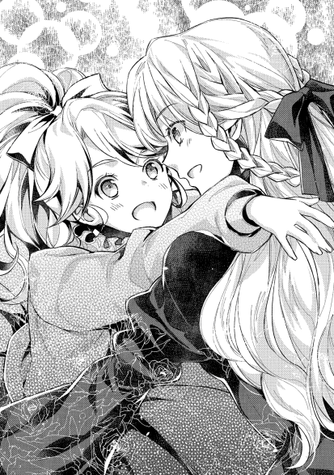

| おかしな転生III パンプキンパイと恋の好敵手 | |
| 古流望 | |
| TOブックス (2016) | |
モルテールン領の次期領主でお菓子の国作りを夢見る少年・ペイスは類いまれなる才能と情熱で次々と画期的なアイデアを生み出し、貧困な領地を念願の黒字経営に導いた。そんな折、ペイスの活躍は王都にまで知れ渡り、王子の生誕祭で舞踏を披露することになる。一方で各国の政治模様は一層苛烈を極め、守旧派がモルテールン家を失墜させんと策謀を巡らせていた。政治駆け引きに婚約者を巡る男同士の決闘、問題は山積みだが、少年は剣と魔法と新作お菓子で、起死回生の一手を打つ！ 甘いお菓子で笑顔いっぱい、夢いっぱいの王道スイーツ・ファンタジー第３弾!!
イラスト：珠梨やすゆき YASUYUKI SYURI
デザイン：ヴェイア Veia
屋敷の一室に、少年が寝ていた。
藁を敷き詰めてシーツを被せたベッドの上。顔中に薬草を塗られ、横たわる男の子。
「なあ母ちゃん、もういいじゃん。遊びに行ってもいいだろ？」
「駄目だよ。あんた、倒れたのはついさっきじゃないか。全く、若様まで巻き込んで酒をかっくらうなんて、なんてことしでかすんだい」
「ちげえって。酒って知らなかったし。そもそも、飲もうって言い出したのはペイスだし」
「なら尚更、止めるのが御役目ってもんだろうが。この馬鹿息子」
母親にこっぴどく叱られているこの少年。マルクは、退屈で仕方がなかった。
それが何故かといえば、別に病気になったわけでもないのにベッドに寝かされていたからだ。
彼が寝かされている理由。それは〝アルコール中毒の治療〟の為である。
マルクが仕えるべき主家の長男ペイストリーが、砂糖作りを研究しだしたのはつい最近。ようやく砂糖の原料となるサトウモロコシの量産も目途がつき始め、いよいよ砂糖作りに挑戦していこうとしていた矢先のことだ。
砂糖作りの為に絞った搾汁が、そうとは知らぬ間に酒になっていた。
毒見もお役目の一つであると言い張って、子供たちが揃って飲んだサトウモロコシ酒。
甘く、それでいて鼻に抜ける独特の香り。美味しいジュースだと思ってゴクゴクと飲んでいたら、いつの間にか意識を失い、気づけばベッドの上。
それ以降、今の今までベッドに寝かしつけられて、退屈と戦う羽目になった。
体中にエネルギーの有り余る年頃の少年にとって、じっとしていることは何よりも苦痛である。
それだけに、聞こえてきた声には真っ先に気付く。
「マルク〜、遊びに行こうぜ〜」
聞こえてきたのは、幼馴染の少女ルミニートの声。
これ幸いと、マルクがベッドを抜け出そうともがいたものの、母は強し。強引に寝かしつけられたまま、母が大きな声で叫ぶ。
「ルミ、あんたも家で寝てなさい。倒れたのはあんたも同じだろう!!」
「大丈夫だって。もう酒は抜けた。これからペイスの所に行くんだけどよう。マルクも一緒に来いって話なんだって」
「若様からの指示かい？」
次期領主の用事となれば、少々の体調不良より優先される。まして、病気でもない人間ならば尚更。
そうやって、意識を逸らしてしまったのが不味かったのだろう。
母の手をすり抜け、マルクが外へと飛び出して行く。抜け出すのはお手の物。
その手際の良さに、母はヤレヤレと溜息をつく。
主家の若様の命令では仕方がないか、と考えたところでふと気づく。
「あら？ 若様も今は絶対安静で寝かされているはずだね。命令を受ける機会なんてないはずじゃ......しまった、やられた!!」
ルミはペイスのところに行くとしか言っていなかった。
それがペイスの命令だとは言っていない。
抜け出す口実に、わざと紛らわしい言い方をしたに違いないのだ。
「あの悪餓鬼共っ!!」
上手くしてやられた母親は、領主の屋敷に駆けて行く子供たちの後ろ姿に、またひと騒動起こりそうな予感を覚えるのだった。
貴族の領地経営において、先進性を測る目安が幾つかある。領地の豊かさの指標と言い換えても良い。
その一つは、食糧生産量。人は、老いも若きも、富める者も貧しい者も、皆食わねば生きてはいけない。人として生きる根幹が食であり、その為に必要な食糧生産力は、領地の豊かさを表す最も分かりやすい指標だ。
或いは、商業力。農村のように必要なものを自給自足することが前提の状況とは違い、商業が活発であれば、必要なものを金で買えることになる。自分で作らずとも必要なものが手に入る状況というのは、領地経営にとっては大層ありがたい。
或いは人口。人が増えるということは、イコール労働力の増加である。何を為すにも人がいなければ話にならず、どれだけ多くの人を抱え込めるかは重要な指標になる。先の食糧生産や商業活動にも人は要るのだ。
こういった、直接数字で測れそうな指標の他にも、数字では測れない指標もある。
代表的なものが、文化力だ。現代ではソフトパワーと呼ばれるようなものであるが、その力は意外と侮れない。芸術や学問に繋がることも多く、音楽、絵画、建築、彫刻、舞踏、演劇など、人々の心をより豊かにする力として、文化力がある。
この文化と呼ぶものにも、色々なものがある。歌や踊りも文化であれば、料理なども立派に文化と言える。
そして、お酒や菓子もまた、文化である。
共に文化的には等価な面を持ち、どちらかに優劣があるわけではなく、どちらも優れた文化である。
ただし、特定の個人の嗜好を除けば、の話であるが。
「二割」
「それは少なすぎます。せめて六割半は貰わないと、今後に差支えます」
「幾ら将来の為とはいえ、今の時点で金にならん研究に、多くを割くほどの余裕もない。今は確実性を採るべきで、二割が良いところだろう」
「元々は予定になかったものではないですか。いっそのこと全部でも良いと思います」
「予定になかった時と今とは事情が違う。それはお前も分かっているはずだ。二割でも相当な譲歩だし、量としても十分だ」
侃々諤々と言い合う一組の親子。
ペイストリーとカセロールの、モルテールン親子の言い争いである。どちらも一向に引く気配を見せない言い争いは、既に小一時間続いていて、長期戦の様相を呈している。
「失礼します、って何やっているんです？」
そんな親子の様子に一歩たじろいだのは、執務室に入ってきたばかりのニコロだ。
「サトウモロコシの来年の作付けについて、砂糖作りと酒造りのそれぞれに割り振る、割合を決めてるんだと」
ニコロの発言に、半分呆れがちに答えるシイツ。従士長は、モルテールン領においては最も苦労している人間であり、今もまた、長い時間の議論がまとまるのをじっと待っている。それだけに、ニコロに応えた声にもやや疲れが乗っていたのは仕方がない。
カセロールにしろ、ペイスにしろ、モルテールン領を豊かにしたいという想いは変わらない。ただ、その手段が複数ある時、元々の考え方の違いや、嗜好の違いから、意見の相違が生まれることも珍しくない。
熟達した交渉人の父親に、一歩も引かない息子の方を、末恐ろしいと評価するのはニコロである。この従士は、自分にはあんな真似出来ないと、早々に見切りを付けたくちだ。
「この分だと、もう少し掛かりそうだ。大体、四分六分か、五分五分ぐらいに落ち着くとは思うが、如何せん坊がこの件では押してくる。長引くぞ、こりゃ」
「若様のあのお菓子作りの情熱を、もう少し別の仕事に向けて欲しいものです。出来れば外務か軍務で。そうして貰わないと、俺の仕事が全然減らないんですよ」
「そりゃ難儀だな」
「昨日だって搾汁機とかいうものの予算見積もりを作らされたんですから。自前で作った時と、余所で買った時のそれぞれで。しかも、購入先の検討の為に、複数案。若様は、俺を苛めたいんじゃないかと、本気で思いました」
「諦めろ。坊の場合はそれが普通だ。お前さんを苛めるつもりはなくても、無茶な指示が出るのはよくあることだ。まっ、今まで見たことも聞いたこともないような道具の調達を言われるよりマシと思え」
「それ、もしかして経験談だったりしませんよね？」
「ははは」
シイツは笑いで誤魔化した。
過去に何度となくやらかした実話である、とは言わなかった。若い従士に、たとえ僅かな時間であっても心労なく仕事をして貰いたいという親心だ。
「それで、お前は何しに来たんだ？ 二人があの状態だから、用事があるなら俺が聞いておくぞ？」
「あ、そうでした。例の準備が出来たんで、お館様を呼びに来たんですよ」
「お、そうかい。それじゃあ、あの二人を止めてきますか」
「うわぁ、俺は絶対やりたくないですよ、その仕事」
苦笑いのシイツが、自分の主とその息子に声を掛ける。ぎゃあぎゃあと言い争っていた二人も、流石に何かあったのかと議論を止めて従士長たるシイツの話を聞く。
「大将も坊もそれぐらいで一旦休憩しましょうや。例の準備が出来たらしいんで、表に行きやしょう」
「ん、分かった。ペイスも、この話はまた後にしよう」
「分かりました」
モルテールン領の重鎮全員が、屋敷の玄関口から外に出る。
毎日綺麗に掃き清められた、領主館の表玄関。そこには、五人の人間が、待ち構えていた。
一人はトバイアム。筋骨隆々の大男であり、厳つい風貌は一見すると怖そうに見える。
態度がぶっきらぼうで、遠慮やデリカシーに欠ける為に、とある貴族家からクビにされたところをモルテールン家に拾われた。
笑い上戸なムードメーカー気質でもあり、モルテールン家従士の新人組ではリーダー的な立ち位置にある。
他にも、ダグラッドを始めとする新人がずらりと並んでいた。
「さて、それじゃあ始めるか」
カセロールのその言葉と共に、周りでも準備が始まる。ガチャガチャと短剣が五本用意され、布や、何かが入った袋も運ばれる。
「父様、準備が出来ました」
「よし、ではこれより当家の従士任命式を執り行う」
高らかな宣言と共に始まる厳かな式。
飾りつけも何もない質素な式典が、実にモルテールン家らしいとシイツなどは心の中で笑う。
従士の任命は、形式としては領主の了承があれば、特に大した手続きもなくひと言で終わる。
だが、それではあまりに素っ気ないし、今日から従士の立場になったのだというケジメの為にも、或いは周囲に分かりやすくする為にも、区切りとしての形式は大事だという話から、任命式なるものが行われることになったのだ。
やや緊張の面持ちを残した新人たちが、合図と共に一斉に跪く。
「神と精霊の御名において、今この時を持って諸君らを正式に従士として任ずる。またその証として、剣を授けるものなり」
「トバイアム、前へ」
カセロールの両脇には、シイツとペイスがいる。今日はこの二人も出しゃばることはない。
脇に控えたシイツから名前を呼ばれた者が、跪いた姿勢から一旦立ち上がり、一歩前に出た所で改めて跪く。最初はトバイアムだ。
頑丈そうな体を、少し緊張気味にして、いつもより心なしか小さく見える気がする。
硬くなっている年かさの男に、カセロールが短剣を渡す。
それを恭しい姿勢で拝領する従士トバイアム。所作にも何がしかの特訓の跡が見え隠れするのは甚だ余談である。
短剣を受け取った者は、一旦下がる。
一人、また一人と名前が呼ばれ、その度にまたカセロールから短剣が渡された。
五人全員に渡し終わったところで、その全員が口を揃えて誓いを唱和する。
「「我々は閣下の御為に尽くし、忠誠を捧げることを誓います」」
形式とは、必要であっても多少の緊張は付き物である。
ようやく終わった、と皆が肩から力を抜く。そして、この後のお楽しみに目を向ける。
「さて、堅苦しいことも終わりましたし、早速配りましょうか」
「待ってました」
「よ、若様、太っ腹。スケコマシ。女殺しの色男」
「要らないならそう言って貰っても良いんですよ？」
「なはは、ちょっとした冗談じゃないですか」
ニコニコとしたペイスがカセロールの代わりに配るのは、布や麦や薪。そしてお金。
これは俗に言う初任給である。
「これでようやく嫁さんと子供を呼んでやれる。くぅ、苦節三年長かった」
「トバイアム、何も泣くことはないでしょう」
新人といっても立場は様々であり、諸般の事情からモルテールン領に来たものもいる。特に切実に従士になりたがっていたのが、トバイアムやダグラッドのように、所帯持ちの人間だ。
一旦は別の所で雇われていて、結婚もし、それでいて職を失う羽目になった彼らは、これでようやく奥さんたちを呼べると感慨もひとしおである。
モルテールン家に雇われた従士は、望めば家を与えられる。それも、広い内庭がある家具付きの家。一人暮らしの者には、領主館の一室を与えられる。
これだけでも本来であれば破格の待遇なのだが、給料についてもかなり良い。年間で、麦、塩、薪、肉、布を一家族分。それにプラスしての役職手当制度を導入していて、この制度はモルテールン領以外ではあり得ない先進的な制度である。
従士一人で何人かの家族の扶養と、下働き幾名かの雇用が出来る待遇。出世も見込めるとあって、雇われた人間の忠誠心は鰻登りなのが現状。
そんな話を先輩から聞いていた五人の新人は、今日の給料を首を長くして待ち望んでいた。訓練の日々も終わり、今日から諸々の任務に就くのだ。
それぞれが、森林管理長、畜産管理長、新村治安維持部隊長、筆頭外務官、開墾事業監督という役職に任じられ、都度領民を指揮しつつ領地の発展に尽くすことになる。
「これで給料に酒があれば、言うことなしだけどな」
娯楽の極めて少ない世界にあって、酒を飲んで仲間と馬鹿話をするのは、庶民のささやかな娯楽。
それゆえの、新人のうちの誰かの呟きであったが、その言葉は言ってはいけない言葉だったらしい。少なくとも、従士長のシイツにとっては、今は言わずにおいて欲しかった言葉だ。
何故なら、その言葉を当主たるカセロールが聞きとがめて、鼻息を荒げたからだ。
「ほらみろペイス。やっぱり誰しも欲しがるのは酒だ。ここはやはり酒の量産体制の確立こそが急務ではないか」
「いいえ父様。新人でもこうやって言い出すほど、酒というのは認知度がある。つまりはどこでも作っているありふれたものだということです。どこにでもあるようなものを作ったところで、得られる利益などたかが知れています。そこをあえて特産にしようとするなら、品質を維持向上させねばなりません。その為に結局膨大な投資が必要で、あまりに本末転倒です」
「それならばお前の言う砂糖への投資も似たようなものではないか。同じ投資をするのならより確実に需要の見込めるものに投資をするのは間違ってはいないだろう。不確実性のあるものへの投資は、投機や博打と同じ。余裕のない今は無理を避け、砂糖作りは余裕が出てきてからでも良いだろう」
「需要が長期にわたって安定しているものこそ、投資を後回しにしても変わりはないではないですか。それに比べ、今競争相手がいない砂糖作りは、将来もそうだとは限らない。あえて競争相手の多い分野に投資するよりも、競争相手のいない分野にこそ迅速な行動が必要なのです」
屋敷の外の玄関前だというのに、始まった議論に、周りの人間は唖然としている。
どちらの言い分も正しく聞こえるだけに、従士になったばかりの者は止めようがない。
どうすれば良いものかと、戸惑いだす者も多かった。そして、そんな従士たちの縋りつくような目が、一人の男に集められる。勿論その視線の先は、我らが頼もしき従士長のシイツだ。
「お前ら、散って良いぞ。貰ったものは忘れずに持って帰れよ。この二人はしばらくこのままでいい」
「え？ 放っておいてもいいんですか？」
「よく覚えておけ。この二人がああなったら放置が一番だ。もっともらしい理屈をこねくり回して言い合ってはいるがな、結局二人とも自分が欲しいものを作りたいだけなんだよ」
「はあ、そういうもので？」
「そのうち慣れる。慣れたくなくても、な」
シイツの溜息交じりの愚痴。
慣れたくなくても、という言葉の辺りには、心の底からの実感がこもっていた。シイツ自身、こんな似た者親子の扱い方などに慣れたくて慣れたわけではないのだ。
従士長の許しを得て、三々五々散っていく新人たち。
ある者は屋敷の自室に貰ったものを置こうと動きだし、またある者は早速家族を呼ぼうと手紙を書きに走る。
そんなうちの一人。ダグラッドもまた貰った薪やら麦やらを運ぼうとしていた。かなりの分量があるので、分けて運ばねばならないだろうと考えていた所に、シイツが声を掛けた。
「ああ、ダグラッドはこのまま執務室に来い。荷物は屋敷の人間に運ばせておくから」
「はい？ 分かりました。何か私に用事ですか？」
「ん、まあ仕事だ。早速で悪いが、お前にやって貰いたいことがある」
「何でしょう。初仕事ですから、何でも言ってくださいよ」
荷物運びの手を止めて答えたダグラッドに、シイツは胡散臭そうな笑顔で応える。
「なに、ちょっと王様の所までお使いに行って欲しいだけさ」
どこがちょっとだ、というダグラッドの心の声は、悲しいことに誰にも届くことはなかった。
プラウリッヒ神王国において、尊き立場にある者。至尊の地位に立つ者。
それは、世俗においてはただ一人の人物を指す。
神王国の歴史では十三代目を数える国王。カリソン=ペクタレフ=ハズブノワ=ミル=ラウド=プラウリッヒその人のことだ。
二十年ほど前には自ら先頭に立って、軍を指揮して国を守り、当代にあっては国家の安定を第一義に、国力の増大を図る。その統治はまさに善政の鑑と言うべきである。
御仁は、年も未だに三十代半ば。
赤銅色の髪は活力そのものを表すように鮮やかであり、誰よりも人目を惹きつけるものを生まれながらに持つ。生来のカリスマ。
今もって働き盛りの時期であり、彼は今日も今日とて、政務の中にあった。
「陛下、珍しい所から面会依頼が来ておりますが、目を通されますか？」
「お前がそう言うのなら、見るべきなのだろう。構わん、寄越せ」
「はっ」
国王の傍にいるのは、国務尚書であるバルダッサーレ=パイジエッロ=ミル＝ジーベルト。
ジーベルト侯爵家の当主であり、内務系貴族のトップである。最近は少しおでこの辺りが広がってきているのが本人にとっての悩みであるが、周りには有能な文官として知られていた。
民政の大半を管轄下に置くだけに彼の権力もそれなりに大きいのだが、国王が彼を重用するのはその仕事ぶりによる。微に入り細を穿つような心配りと、入念な下準備をもって政務を補佐する姿勢には定評があり、少々心配症である苦労性を除けば、優秀さに疑いようもない人物である。
「ほう、確かに珍しいな。カセロールの所からの面会依頼か。使いの者の名も見ない名だ。今までなら覗き屋を寄越しているところだがな」
「はい。ちなみに面会の事由については、陛下に統治状況のご報告をとのことにございます。裏書人もレーテシュ伯を始め錚々たる顔ぶれでございますれば、無視するわけにもまいりません」
「そうだな。それに、あの男が下らん理由で使いを寄越すわけもない。よし、いつも通りの対応を許可する。使いの者は今どこだ」
「モルテールン卿が日頃贔屓にしている宿が連絡先となっております。恐らくそこにいるものかと」
「街の宿とは。あいつらしいが、もう少し他人の目を気にして欲しいものだ」
カリソンは苦笑する。相も変わらず合理を好んで虚飾を嫌うカセロールたちの様子に、国王の立場としては不服でありながらも、一個人としては懐かしくも好ましい想いがした。だからこその苦笑いだ。
大抵の貴族は、王都に家を構えている。本邸か別邸かはともかく、ほぼ全ての貴族が、である。それは、権利でもあり見栄でもあり、また実用の為でもあった。
王都に住みたいと考える人間は多く、それを全て認めていては王都に人が溢れかえることになる。人が無秩序に増えれば、それだけ問題も増えることから、ある程度の地位の者が優先的に家を持てるようになっているのだ。
特に王城に近い貴族街は一定の秩序が保たれている。逆に言えば、勝手に家を建てられないわけで、ここに家を建てさせて貰えるのもまた貴族の特権と言える。
こういった権利としての側面もあれば、王都に仕事を持つ者や、出向く機会の多い者にとっては実用面もある。王都の広さは、端から端まで歩けば丸一日以上掛かるぐらいの広さと煩雑さがある。王城に近い所に住まいを置くのは、何かと便利なのだ。
或いは象徴。見栄という意味もある。
特に貴族ともなれば、見窄らしい格好や態度は権威に関わってくる為、それ相応の格式のある宿泊施設を必要とする。自分の好きなように見栄を張りたいとなれば、自前で用意するのが一番という話だ。
これらの理由から、貴族は王都に家を持ちたがる。
そんな当たり前の貴族の常識とは別に、王都に家を構えていない貴族というのも、極少数ながら存在する。
先の大戦で勲功をあげて貴族として取り立てられたものの、王都に別邸を建てるほどのゆとりのない新興小貴族だ。彼らは、王都に家を建てたいという想いはあっても、金銭的、物理的な理由から建てていない。
カセロールも一応はこの弱小新興貴族の部類に入れられているのだが、彼の騎士爵の場合は、建てる金が仮にあっても、屋敷を使う必要がないとの理由から建てていない。何せ、必要があれば飛んで帰れるのだから、自分の領地に家があればそれで済んでしまうのだ。
「モルテールン卿は高名な騎士であらせられます。ですが畏れ多くも陛下の御名の下に高貴な立場に列せられた者が、市井の宿で寝泊まりするなど、如何なものかと臣は愚考いたします」
「よい。お前の言い分も分かるが、あいつは【瞬間移動】とやらが使えるのだ。全く必要のないものを用意しろとは、流石に俺も言えんし、俺が与える筋合いのものでもない。さし当たって連絡が付けばそれでいい」
「はっ、御意のままに。して、使いの者への連絡はどうされますか？」
「カセロールを城に呼べと伝えろ。時間は......そうだな、明後日の午前が良いだろう。会食の準備は不要だ。あいつは余計な長話をすることもないからな」
「ははっ」
その指示に従って、すぐさま使いが走り、王都の宿屋の一室に一報が届けられた。
国王からの召喚状であり、王城への登城許可である。
王の住まいでもある城に入るには、厳しいチェックもあり、準男爵以下の爵位の者はこの登城許可がなければ王城に入れない。また、公爵未満の位階であれば、必要に応じて警備の人間に役儀と登城理由を質されることもある。
それほどに身分差にも厳しい対応をされるのだが、それを思えば二日後の登城が許可されたカセロールは騎士爵位としてはあり得ないほど厚遇されているとも言える。
宿屋で連絡を受けたダグラッドは、この厚遇っぷりを含め、改めてことの大きさに溜息をついた。
街でも指折りの高級宿にあっては、似合わないほど大きな溜息。
「はぁ〜、初仕事がこれってどう考えてもおかしいよな。新人に王城への使いをやらせるって無茶にもほどがありますよ。礼儀作法は叩き込まれるわ、近衛に囲まれて心臓の縮む思いで手紙を届けなきゃならないわ。しち面倒くさい手続きは踏まなきゃならないわ。給料が高いわけですよ。全く嫌になる」
「いい加減、ボヤくのはやめてください。僕まで気が重たくなりそうです」
宿屋の中には、ダグラッドの他にも、領主代理の肩書を持ったペイスがいた。
今回の運搬役を買って出た為だ。しかも、カセロール抜きでの【瞬間移動】で。
いよいよペイスが魔法を転写出来ることをばらすのか、と言えば勿論ＮＯである。その点に関しては最重要機密扱いだ。
しかし、ペイス自身が瞬間移動を使えることを従士に隠したままであるのは非常に都合と勝手が悪くなる為、今回「カセロールは濃く血の繋がった魔法使いには転移の魔法を貸せる」との適当な理由をでっち上げた。大嘘だと知っているのはカセロールとシイツとペイスの三人だけ。
魔法というものは個々人で出来ることに違いがあり、その条件も多種多様、千差万別であることを利用して、ペイスにだけは〝カセロールが〟魔法を貸せるということにしたのだ。
しかも、ペイスの聖別の儀以降それが判明したのだ、という建前になっている。
理由としてはザルもいい所だが、隠すことが前提になっているから理由など適当で良い、というカセロールの決定があったのは余談である。
今更といえば今更だが、それでも公にせずに、出来るだけ隠したいとの思惑から、今回の表向きの仕事はダグラッドだけで行うことになっている。正しくは、挨拶だけは登城を許されているカセロールが行い、国王陛下への挨拶の後は、細かい諸事雑事をダグラッドとペイスで詰めるような手はずになっている。
「とりあえず、父上に連絡してきます。ダグラッドは召喚状への返答と、それが終わったなら王都での情報収集をしておいてください。特に、件の婚約騒動以降に、派閥の力関係がどう変化したかを重点的に」
「分かりました。御戻りはいつになりますか？」
「父上に城からの連絡を伝えたら戻ってきます。あぁ、それと、明後日の朝は父上が登城するのにくっ付いていくので、身支度も忘れぬよう。城の中には入れませんが、見送りぐらいは部下の務めでしょう」
「承知」
「では、あとはよろしく」
一言を短く言い置いて、次期領主が【瞬間移動】で消える。本来であれば他に真似の出来ないモルテールン領の強みとしてこの魔法があるのだが、馬車や馬、或いは徒歩での移動が常識の従士にとっては、ハードワークの元凶、諸悪の権化のように思えてくるから不思議なものである。便利になるということが、仕事を減らすことにはならない例の一つだろう。
ペイスが宿を離れた後、ダグラッドはベッドに仰向けに寝転んだ。
高級宿のふかふかベッド。羽毛のようなものをふんだんに使った布団や、綿を惜しみなく使った布団が組み合わせてある為、寝心地は最高だと評判の寝床。
身体を布団に沈めながら、彼はまたボヤく。
「給料もいいし、仲間は気のいい奴らばかりだし、上司は俺を信頼してくれて、実力を正当に評価もしてくれる。良い職場なんだろうが、どう考えても仕事量が多すぎるわ......」
モルテールン領の従士。
その全員が全員、共通して持つ思いが〝仕事が多すぎ〟である。
新興の領地となれば人手不足は仕方がないとはいえ、人手が増える端から仕事の方も増えていくのだから一向に一人あたりの仕事が減る気配を見せない。むしろ増えることの方が多い。
原因がどこにあるのかと言えば、一人の少年にいきつくのだが、主だった連中の中では既に諦観の域にある。
「こんなことなら、スラヴォミールみたいにヤギやニワトリの世話でもしてりゃよかった。そうすりゃこんな気苦労はせずにのんびり出来るだろうに。それか、ニコロみたいに金勘定だけでいい仕事なら、人付き合いの煩わしさもないだろう。やっぱり仕事を間違えたかね。やりがいがあるのは確かだが......」
他人の土地の麦は良く実るとも言い、隣の花は赤いという言葉があるように、自分の境遇よりは他人の境遇の方が良いように思えるのが人の心。
外務全般を任されているダグラッドは、自分が一番過重労働をこなしているのではないかと考えているが、無論それはモルテールン領の従士が全員考えていることであったりする。
ダグラッドはボヤキながらも身を起こし、ベッドの脇にあるテーブルの前に座る。
仕事は仕事と気持ちを切り替え、手紙を書く必要があるのだ。使いからの報せを受け取った旨と、明後日の登城を了承したことを伝える手紙。
この手紙にも、外務職ならではの苦労がある。貴族同士のやり取りが外務の主な仕事ではあるが、この手のやり取りは一見不要とも思える形式が非常に多いのだ。それに習熟してこその外務である。
例えばこの手紙。まずは神と精霊を讃える聖句を長々と書き、次いで国王陛下の御世を称賛する美辞麗句を並べ立て、更には季節の挨拶を出来るだけ他人と被らないように知恵を絞りながら書く。
本題の前に関連する話を前フリとして入れて、この手紙を読んでくれたことへのお礼の言葉も書き添えておく。
そうしておいてから、本題になる僅か二行の了承の旨の返事を綴る。
実に馬鹿馬鹿しくも思える形式ではあるが、飾りをなくして二行の返事というのも素っ気なさすぎるのは事実だ。
聖句がなければ不信心な異端者とされ、国王賛美がなければ不忠の背信者とされ、季節の挨拶がなければいつ書いたか分からない為にすり替えや遅配のトラブルに遭いやすくなる。阿呆らしいと感じていても、なければないで問題になるのがこの手の形式というものだ。
手紙は全部で三通。どれも同じ内容で、一通は木板に書いた保管用として手元に置いておく。残りの二通は国務尚書に当てたものと、国王陛下に献上する為のものだ。
手紙を書くのは意外と時間が掛かるもので、三通を書き上げる頃にはペイスが一通りの報告を終えて王都に舞い戻ってきていた。
「手紙を書いていたのですね。どうです、書き終わりましたか？」
「もうすぐ終わります」
「そうですか、ご苦労様。ああそうそう、僕はちょっと買い物に行ってきます」
「何を買いに行くんですか？」
「分かり切ったことを聞きますね。無論お菓子の材料です。当たり前じゃないですか」
「そんなものを買いに行きたがるのは若様ぐらいですがね......ついでにインクと羊皮紙も買い込んでおいて貰えると助かります」
ペイスは、了承の返事代わりに後ろ手に手を振って部屋を出る。そのまま駆け足気味に街の喧騒に紛れていった。
護衛の従士もつけないのは、本人が望んだこととはいえ、貴族子弟には本来あり得ないのだが。
「子供ってのは、無邪気で良いねえ。俺も子供に戻りたいよ」
領主代理のいない間、冴えない風貌の従士は自分の仕事にてんてこ舞いになる。
書き終わった返事の手紙を、自分の足で城に届けて肩の凝りを強め、更にその足で目ぼしい貴族の屋敷に挨拶回りに出向き、それとなく情報収集に努めつつ、相手方からの探りや要求を躱すのに神経をすり減らす。
外務とは、仕事の大半は人付き合いと情報収集だ。
誰が見ても過重労働と思えるようなブラックさに涙しつつ、ダグラッドが宿に戻った時。何種類かの果物や、良く分からない雑多な食材を大量に買い込んだペイスも戻っていた。
黄色い何かの匂いを嗅ぎながら、一生懸命に物書きをする少年の姿。
「若様、そりゃ一体何です？」
「さあ？」
「さあって。何か分からず買ってきたんですか？」
「名前は木板にメモしているんですが、細かいことは追々調べます。とりあえず、僕がモルテールン領で見たことがないものは、目につく端から買ってきましたからね。どんな味がするのか、どんな匂いがするのか、他にも色々と。知らなければお菓子の材料に使えませんし。そうですね......これは、便宜上でレモンとでも名前を付けておきます」
青銀髪の少年の奇行は今に始まったことではない。
それを話には聞いていたのだが、ようやく実感するに至ったダグラッド。ペイスの奇矯な振る舞いはさらりと無視し、話を続けた。
「レモンでもルモンでもお好きにどうぞ。それで、若様のご指示通り、情報収集してきました。何とも混沌とした状況になっているようです」
「へえ、詳しく聞かせてください」
黄色の果実を仕舞い、今度は橙色の柑橘を撫でながらペイスも話に乗る。
「軍の方は主要な人間が公爵派で占められつつあるようです。それを忌々しく思っていた連中もいたようではありますが、先の誘拐事件以降に綱紀粛正の名を借りた他派閥のあら探しがあったとか。それなりの人間が汚職や不道徳、或いは職務不適格を理由に職を奪われています」
「あの人ならそれぐらいはやるでしょうね。方々で恨みを買っていることでしょう」
「ええ。それと、軍とは逆に、外務系や内務系は反カドレチェク公爵でまとまりつつあるようです」
「どちらも、元々軍とは仲がよろしくないでしょうしね。それは仕方がない部分も多いでしょう」
三権の長は、お互いに協力すべきところがある。
例えば内務として農地の新規開拓を志向した時は、護衛や魔物の駆除などに軍の力が要る。
或いは外務で他国貴族へ圧力を掛ける場合に、軍の力を背景にすることなども珍しくないし、経済的な内務分野を外交の道具にするのも割とありふれた話だ。
三権は、互いに助力し合うべき事柄が沢山ある。
しかし、そういった協力するべきところで、互いの権益が相反することもある。
内務系の財務尚書などが軍事費を減らしたがるのはいつものことだし、外交官が国内産業の権益譲渡を外交のカードにしたがるのも毎度のこと。
それぞれの職分の中で権益を確保するのは当たり前のことではあるが、それで他の職分と喧嘩になるのはよくある話。だからこそ、不当に職分や権益を侵されない為にも、ある程度の近しい職分の人間でまとまって派閥を作り、いざという時の交渉力を高める必要があるのだ。
無論、表立っては喧嘩もしないし、ある程度の利益折衝で片が付くことも多いのだが、軍の人間と、他の人間の仲が悪いのは周知の事実と言える。
ダグラッドは、報告をしながらちらりとペイスを見やる。
まだモルテールン家に仕えて日の浅い新人であるが故に、噂で聞いていたペイスの利発さを今更ながらに感心しているのだ。長年外務の経験を積んできた自分と、普通に話が出来ていることが凄い、と実感している。
「軍が体制を強化していけば、反発もそれ相応に大きいということですね。それにしても若様はなかなか見識がおありのようで。今後はモルテールン領の外務全般取り仕切ってみては如何です？」
「ダグラッド、僕がここにいるのはあくまで父様の代理です。そんな面倒くさいことは出来ればしたくないです。落ち着いたお菓子作りの為に必要だからやっているだけですよ」
「若様の見た目と中身の違いは、外務にゃ良い道具になるんですけどね。勿体ない」
「必要ならば手伝いますよ......すっぱい」
ペイスは喋りながらも顔を顰めた。
橙色の果物が、ミカンかオレンジかと思って齧りついたのだが、レモンらしい果物以上に強烈な酸味があったのだ。ミカンとは程遠い果物であることが分かっただけでも収穫だと、木板に味や食感をメモしていく。
「そうそう、これはあくまで噂ではあるんですが」
「何でしょう」
「王子の誕生祝賀に際し、かなり大規模な舞踏会を催すことになるらしいです。主催はカドレチェク公爵だとか」
「......なるほど。リコリスがドレスを新調すると言っていたのはそれもあるのでしょうか？」
「分かりません。が、噂の出所が複数ありましたから、それ相応に信憑性はあるかと」
「まあ、我々には関係が薄いでしょうが、良く調べてくれました。ご苦労様です」
従士の労を労う次期領主。その横顔を見たダグラッドは、舞踏会があればこの少年を是非参加させたいと考えた。それほどに舞踏映えしそうな美麗な顔であったからである。外交官として、使える道具は使い倒すべきと考えた。
その少年がふっと笑う。その笑みはどこか少年らしい幼さを感じさせる。
「ダグラッドもこれ食べてみますか？」
「それ、さっき酸っぱいと言っていたやつでしょう。遠慮しておきます」
少年の悪戯心をよく知る従士は、果物の下賜を固辞した。
遠慮をするなと言いつつ、果物を食わせようとする次期領主に、余計に怪しいと笑う従士。二人のやり取りはどこかのほほんとしている。
この時はまだ、ダグラッドも、そしてペイス自身も、噂をあまり重要視していなかった。
──そう、この時は、まだ。
「陞爵した。だから舞踏会に参加することになった。ペイスも一緒にな。ちなみに、陛下直々の勅命なので拒否権はない」
「はい？ 父様、いきなりすぎて、どういうことかさっぱり見えないのですが」
王都の貴族街に最も近い宿屋。諸外国の来賓であったり、国内の有力者であったり、時には貴婦人方の秘密の逢瀬に使われる、高級宿。
その一室で行われることになった、モルテールン家の面々による会議。参加者は、領主カセロールと息子のペイス。そして筆頭外務官のダグラッド。
城から戻るなりのいきなりの宣言に、ペイスやダグラッドの頭の上にはクエスチョンマークのハテナ印が飛び交っている。
説明を求めた息子の声に、一つ頷いて父親は語る。
「うむ、実はだな......」
◇◇◇◇◇
「面を上げろカセロール」
「はっ」
「相変わらずの様子で嬉しいぞ。久しぶりではないか。こうして会うのも十年ぶりだったか。お前も少し太ったか？」
「諸事にかまけご挨拶もままならぬこと、身の至らなさを感じております。陛下におかれましてもご健勝の御様子、何よりのことにございます」
王宮には、数えるのが面倒になるほどに部屋がある。
多くは国王家族の私室であり、侍従や侍女、或いは警護の近衛以外はほとんど入ることのない部屋。
それ以外にも、人と面会する為に用意された部屋が幾つもあり、それぞれが格式の差をもって区別されている。
最も高位な部屋が、金竜の間。国王の戴冠式や、王族の冠婚に用いられる部屋であり、この部屋に入れるのは男爵位以上の貴族のみである。
或いは青狼の間。外国の王族や、国内の重鎮をもてなす為に用意されている部屋で、時には社交の場としても使われる為、かなり広い部屋になっている。この部屋は、貴族以外に入ることは許されない。
或いは白兎の間。ここは平民でも特別に許可を得れば入ることが出来る場所であり、商人が物を売りつける時であったり、爵位を持たない貴族子弟の接遇であったりに用いられる。
他にも、女性だけが入室を許される部屋や、或いは逆に男性のみが入室を許される部屋もある。未成年の立ち入りが禁じられている部屋であったり、役職ごとに入室の権限が違う部屋だったりも多い。
今、国王がいる部屋は、緑竜の間と呼ばれている。主に、国内貴族に対して面会する時に用いられる部屋であり、少人数用の部屋の為に、護衛もしやすく出来ている。
国王にとって信頼出来る者を呼ぶ部屋として使われる為、この部屋に入ったことがある人間は指折りで数えられる程度である。
部屋の中には、楕円のテーブルがあり、椅子が数脚備え付けてあるが、それこそがこの部屋がくつろぐ為の部屋である証左でもあった。
その部屋で、偉丈夫が跪いている。カセロール＝ミル＝モルテールン。旧姓ベニエ。現モルテールン領領主にして、初代モルテールン家当主。
とりあえず座れ、との王の言葉に、件の騎士が王の着座を確認の後に、自分の椅子に座る。
国王の脇には、ジーベルト侯爵が立ったままで控える。この場は、侯爵は補佐以外の何物でもない。形式としては護衛兼任ということになるのだが、もうすぐ高年になろうかという中年には、腕っぷしを期待してはいけない。そもそもカセロール相手には、万の兵を護衛にしたところで無意味なのだ。
「して、統治状況の報告をしたいということだったな」
「はっ、陛下と交わしましたる約定を、果たしに参った次第です」
「......二十年前のあれか」
カリソンは、フッと遠い所を見るような目になった。
激動の時代であった二十年を、振り返るような遠い目。
国王は思い出す。
今から数えて二十一年前。
王国存亡の危機に際し、当時は騎士爵家従士として参戦していたカセロールの奮戦殊勲もあって、窮地を脱した。
比類なき大殊勲。カセロールの戦後の処置については、他に類のないことであった為に議論が紛糾し、まとまる気配を見せなかった。
戦後の不確かな権力基盤の上では、如何に第一王子といえども旧体制下の権威者たちを無視することも出来ず、彼らの権利を削るわけにはいかない。かといって、実際に手柄を立てた者たちを冷遇するわけにもいかない。
当時のカリソンとしては、カセロールに対しては二位階特進の準男爵位か、或いは一挙に男爵位の叙勲を考えていたのだが、当時の情勢下では準男爵位や男爵位に見合う余った土地などなかったのだ。それこそ、広さだけはあるモルテールン領以外には。
無理を押して、カセロールに男爵位と見合う土地を与えるとなると、誰かの領地を削ることにもなりかねず、反対論は根強かった。とりわけ、カリソン王子に対して敵対的な姿勢を見せ、後の手のひら返しで味方についた伝統貴族たちの反発は過激であり、下手に押し通せば再度の内乱も懸念される状況にあった。こういう場合には、政治的な配慮が求められることになる。
また、仮にそれ相応の領地を与えたとして、カセロールの領主としての力量はまだまだ不確か。未知数であったことも反論材料にされた。
個人の武勇としては確かに類を見ない。だが、領地領民を守っていかねばならぬのに、個人で出来ることなどたかが知れている。領主としての力量が分からぬ者に、いきなり大きな領地や高い爵位を与えても、もてあますのではないか、と。
その意見には、確かに筋の通った道理が含まれていた。戦乱の荒れた中では、ある程度の大きさの領地には早期に安定して欲しかったという事情もあった。
カセロールに与える土地をモルテールン領とし、爵位をそれに見合う騎士爵位としたのはこれが主な理由だ。王子は、力のなさを痛感するとともに、功績に見合った地位を与えられない自分を恥じた。
そこでカセロール＝ベニエとカリソン王子は、約束した。
いずれ、カセロールがいっぱしの領地貴族として、領地を豊かにして見せた実績を積んだ時。胸を張って王子に報告出来るとカセロールが思えた時。モルテールン領が他に見劣りしないだけの輝きを放つ時。
その時には、それが何十年後のことであろうと、改めて報奨を渡す。
公式な文書には何も残っていない、男と男の約束であった。
「陛下、あの時のお約束の通り、私は胸を張って報告いたします。モルテールン領は昨年度をもって、黒字の経営となりました。今後も発展させていける自信も持ちました。陛下の臣として、恥ずかしくない者になれたと自負する次第です」
「そうか......うむ、そうか!!」
喜色満面。まさに喜びの色一色となったカリソンの顔は、どこか少年の趣を感じさせるものであった。
本来はこのような喜怒哀楽は隠すのが国王というものであり、隠そうとしても隠しきれなかった喜びに、ジーベルト侯爵などは苦笑する。
真の友人は苦境の時にこそ分かるとの言葉もあるように、カリソンにとっては自らが最も苦しかった時に、最高の救いとなった同世代の騎士こそ、かけがえのない友人である。彼の騎士の誇らしい偉業は、国王にとっても誇らしい功績なのだ。
「詳しく話せ。あの土地のことは俺も知っている。どうやってあの地を治めたのか。他の者の参考になることも多かろう」
「御意」
言外に、面白そうなことは包み隠さず話せ、という本音を隠しているのは、貴族であれば誰でも分かるだろう。国王は目を爛々とさせ、おもちゃの前の子供や、お菓子の前の菓子職人のような好奇心を見せていた。
「まず聞きたい。麦の作付けを減らして、代わりに豆を作って食糧増産に成功したことは聞いている。ここ最近に始めて、成果も出ているそうだな。それを考えついたのは、どこからだ？」
「息子にございます」
「息子？ 年端もいかぬ子供の何を見て、そんなことを思いついたのだ」
「いえ、息子を見て思いついたのではありません。息子に教わったのです。我が息子は私などには勿体ない天才であります。自分で家の裏に畑を作り、そこで豆を作ることで土地が肥えることを証明してみせたのです。私はそれを教わり、実践したことで食料の増産に成功しました。また、副産物ではありましたが、豆の低木は薪の代わりとして使えるので、燃料輸入の節減にもなりました」
「ふ〜む、お前の息子が......か。どうにも変わった息子のようだな」
「自慢の息子です」
幽霊騎士、首狩り騎士、大戦の英雄、神出鬼没、逃げ一番、南部指折りの愛妻家。カセロールを指して呼ばれる呼称は多いが、〝神王国一の親馬鹿〟の異名もまた然りである。本人としては至って大真面目に息子を評しているつもりなのだが、周りからすれば特大の親馬鹿に見える。おおよそ自分の子供を称するとは思えない〝称賛のお言葉〟が並ぶのだから、それも当然だろう。
溜息が漏れたのは、カリソンか、ジーベルト侯爵か。或いは両方かもしれない。
「......まあいい、他にも問題があったろう。水の問題は解決したのか？」
「はい、大まかには解決いたしました」
「ほう、どうやった。雨を降らせる方法でも見つけたか」
「我々が採った方法は、そのような奇抜なものではなく極々標準的な解決法です。大きめの貯水池を作ることで対応いたしました」
神王国において、水不足に悩んでいる土地は、モルテールン領以外にも多々ある。
鉱山があるので非常に裕福な土地ではあるが、山間の為に水が不足しがちなチワウ騎士爵領。そこそこの大きさを持つ島であり、近隣は豊かな漁場となっているものの、島の標高も低く川もないレーテシュ伯領の飛び地、ゴンゴイ島。海が近い為に、井戸を掘ると塩水が湧いてしまうパッペーノ男爵領などが代表的な例だろう。
それぞれの土地毎で解決の為の方策は考えられたが、多くの場合は雨の時などの水を溜めておいて、必要な時に使うという方策が採られている。モルテールン領以外では、降雨量も平均的であるからだ。
逆に言えば、モルテールン領では至極当たり前の対策すらも、とり辛かったということである。少なくとも今までは。
「あの雨の少ない土地でか。さぞ巨大なものになっただろう。一体どれほどの金と時間と人手が掛かったか想像も出来んな。大丈夫だったか？」
「これも息子のおかげで恙なく」
「魔法か？ 確かお前の息子も魔法が使えると報告があがっていたな。どんな魔法だ？」
「息子の魔法のおかげであることはご想像の通りにございますが、詳しいことは本人にしか分からぬのが魔法でございます。私の口からは何とも申し上げにくく、別途の機会にさせて頂きたく思います」
「そうか。まあ、無理には聞かん。魔法の内容は隠すものだからな」
「はっ」
カセロールが息子の魔法の内容について口ごもった点は、気にならないと言えば嘘になる。
ジーベルト侯爵にしてもカリソンにしても、彼の息子が魔法を使えるという情報は得ていた。魔法の内容が、恐らく絵を描く魔法であるらしいという噂も、それ相応に確度の高い情報として承知していた。というよりも、その点に関しては彼の少年本人が、社交界で積極的に売り込んでいるだけに、まず間違いない。
しかし、何が出来て何が出来ないのかを、本人のみが知るというのは言を俟たない。知らぬとすっとぼけられれば追及も出来ないので、それはそれと話を脇に置くしかない。
侯爵のみ、自分用の小さい石板に〝後日要調査〟とだけ書き記した。
「うむ。とにもかくにも、食料と水の問題に目途が付いたということか。木材についてはどうなっている？ 豆の木だけではたかが知れているだろう。建築材にもならんだろうしな」
「公爵閣下と息子の協力により、荒地でも育つ木を見つけました。貯水池の周りが森になる計画でして、順調に予定を消化中です」
「ほうほう......ああ、思い出したぞ。噂に聞くバロだな」
「はい。息子はニセアカシアと呼んでおりました。噂通りのもので、役に立ちそうです」
神王国では、ペイスがハリエンジュと呼ぶ木を悪木と呼び、忌避してきた風潮がある。何故なら、この木の環境適応能力の高さはそのまま、有用木の駆逐能力を意味するからである。
ハリエンジュ。ニセアカシアとも呼ぶそれは、単体ではそれ相応に有用な木だ。薪炭に向く木質で、ほどよく堅めであり、成長も早い。土地も肥える。
しかし、杉のように真っ直ぐ長い癖のない木材になるわけでもなく、松のようにヤニが採れるわけではない。クヌギのように実をつけて動物を養うわけでなく、樫ほどに固くなるわけでもない。柿のように食えるわけでもなく、楢のように加工しやすいわけではない。
木そのものの欠点としても、有毒植物であり、針のような棘が多く、危険性も無視出来ない。また、大きくなれば倒れやすい木でもある。
木々の種類は非常に多く、ニセアカシア以上に有用な木などはごまんとある。その全てを駆逐しかねない植物である為、普通の木が育つところであれば、バロと呼ばれて駆除の対象になっていたのだ。
繁殖力の旺盛な雑草が、たとえハーブのようなものでも畑では嫌われるように、ニセアカシアもまた雑木として忌み嫌われる存在。
悪木の噂を聞いたペイスが大喜びした時、カセロールを始めモルテールン家の家人一同は、またペイスの不思議が始まったと呆れたという。畑に雑草が生えていると聞いて喜ぶ子供のようなものだから、それも当然だろう。ましてや、雑草を積極的に育てましょう、と言い出した場合には頭の出来を疑うのが普通。
ペイス以外が、雑木を育てようと思いつきもしなかったのは至極当然である。
「あの悪木が使えるとはな。物は考えようと、俺も感心したものだ。落ち着いて聞けば納得もするのだが、非常識なのも確か。目の付け所が余人とは違うのも間違いないようだな」
「光栄です」
実際、モルテールン領以外でバロの利用は極めて少ない。燃料として燃やすことが多いわけだが、成長の早さから大体が小さいうちから刈り取ってしまうものだ。また、人の入らない森の中に生えたとして、深い森ともなれば、葉の茂りの弱いハリエンジュは、日も当たらずにいずれ枯れる運命になる。先駆植物の悲哀である。
「ちなみにですが、息子が申すにはこの木も別名がございまして、ハゲシバリという名もあるそうです」
「ほう、面白い名だな」
カリソンは、ちらりと隣を見た。
具体的には、ジーベルト侯爵のおでこのあたりだ。その視線に気づいたのか、侯爵もまた、さりげなさを装いつつ、髪を撫でつけて少しでもボリュームを演出しようと試みた。失敗したようだったが。
カリソンはその様子を見ながら、くくと笑いをこらえ、カセロールに先を促す。
「ぷっくく。さて、それを聞けば黒字になったというのもよく分かる。あの難治の土地をよくそこまで豊かにしたと褒めておこう。しかし、単に領地経営が黒字というだけではなかろう。それだけなら、土地の良し悪しはあるにせよ、他のボンクラ共でもやっていると反論もあろう。まだ何かあるのだろう？」
今後も発展させていける自信、とカセロールは言っていた。
そこについてこそが、今回の会談の本旨だ。ただ単に現状報告で終わるようでは、外交官としては三流も良いところ。
領地経営の黒字化、というのは、モルテールン領に限ってみれば快挙である。多くの人間は不可能と考えていたことだ。
しかし、モルテールン領以外で、となると珍しいことでもない。むしろ、領地経営の黒字化は、領地貴族としては極々当たり前の最低ラインなのだ。赤字が続けば家が潰れるのだから、自然と淘汰されて黒字のところのみが残る。
カセロールが胸を張れる、と言った以上、最低限度ではないプラスアルファの何かがある。
国王は期待を込めて続きを促し、ジーベルト侯爵は細大漏らさず情報を得られるよう気を張る。
「陛下におかれましてはご明察の通りにございます。実は当家では、最近あるものを試作いたしました。今後はその量産に向けて動くつもりであり、それをもってモルテールン領の特産としたく思っております。これが叶いますれば、当領は陛下の御世において他に替えがたい土地になり得ると考えます」
「勿体ぶるではないか。あるものとは何だ？」
「酒と砂糖にございます」
「ほほう、それはまた大きく出たな」
カリソンは、心の底から意表を突かれた。てっきり、領内に鉱山の一つも見つけたのだろうかと思っていただけに、驚いたというのが正直な心情である。
酒にしろ、砂糖にしろ、モルテールン領どころか神王国内見回して、新規に産業化出来るような所など、そうそうない。その点、カリソンは名君と評されるだけあって、よく承知していた。
酒を造る、というのは簡単に思えて難しい。技術が秘匿され、知識伝達が口伝を主とする為だ。
ペイスならばいざ知らず、一般人には細菌についての知識や、酵母についての知識がない世界である。どうやれば酒が出来るのか、という知識を始め、どういう道具が必要なのかも知識としては秘匿されている。経験に頼るのみ。
精々が、葡萄や麦から酒が造られているらしいという大雑把な程度が一般常識だ。
現代の日本で、本やインターネットで調べることもなく酒を作れと言われても難しいのと同じだ。醸造や蒸留の知識も皆無な人間ばかりなところにあって、酒を造るというのは存外に困難が多い。
砂糖などは、それ以上に至難極まる。
なにせ、どんな原料が必要なのか。どんな道具が必要なのか。どんな方法で作られているのかが国内では一切知られていないのだから。
人によっては、塩と同じく海から採れると考える人間すらいる。海の向こうからやってくるものだからだ。
出来上がった製品を輸入することはあっても、作ろうなどとは考えるだけ無駄である。
普通ならば。
「陛下。改めてお約束いたします。近いうちに、当家で作りましたる酒と砂糖を献上に参ります。その時には是非、陛下にご賞味頂ければと願うばかりです」
「......くっくっく、あっはっは」
「陛下？」
右手を額に当て、軽くのけぞりながらも笑い出した国王に、訝しげな顔を向けたのは横に控えていたおでこ。もとい、ジーベルト侯爵である。
王は、ひとしきり笑った後、息を整えてカセロールに改めて向き合う。
「面白い、実に面白いではないか。本当にカセロールの所でその二つが出来るというのなら、確かに胸を張るに足る。まさか、そんな話を手土産に持ってくるとはな。こうして場を設けた甲斐もあったというものだ。......もしやとは思うが、それも息子の手柄か？」
「左様です。どちらも息子が試作を行いました。私も試してみましたが、確かにどちらもモノになりそうでした」
「その息子とやらに、会ってみたくなったな」
「光栄の極みにございます」
カリソンは、国王位についてからも宰相と元帥と元首を置かず、三権において国王親政の体制を採ってきた。これは偏に、国内の権力基盤が不安定であったからでもあり、自身の裁量以上を任せられる人物に欠けていた為だ。
苦労を重ねてきた王として、常に難事を抱えて政務の日々を過ごしてきた。
だからこそ分かる。モルテールン領の抱えていた問題は、五年や十年で片付く問題ではなかった。にもかかわらず、カセロールが今目の前にいる。
その不自然の大元はどうやら息子にあるらしいと知った時、カリソンは大いに興味をひかれた。
「そうだ、夏の終わりにルニキスの誕生祝いがある。舞踏会だ。そこにお前の息子を連れてこい」
「陛下、恐れながらそれは御考え直し頂きたく存じます。如何にモルテールン卿が国家の功臣であるとはいえ、騎士爵の子を参加させることは、これまでのことから考えましても前例がございません。臣が愚考いたしますに、臣下の間に不和と混乱を生じせしめる可能性が高うございます。特に、諸国の要人をお迎えすることが決まっております中であれば、陛下の御名が軽んじられることになります」
王の言葉に驚いたのがジーベルト侯爵だ。国務尚書として、典礼や儀典は自らが監督する業務。それ故、こと典礼に関しては、国王に意見することが許される立場にある。
王子の誕生祝となれば、王城で開かれるのが当たり前。臣下の屋敷に出向くのではなく、臣下を呼びつけるのが普通だ。
また規模にしても、国の威信にも関わることであり、王族の権威にも関わる以上、盛大に開かれるのは間違いない。ましてや、舞踏の場になるという。
となれば、それを行えるのは格式や広さを考えても、青狼の間しかない。貴族以外は入れないと決まっている場所だ。
であるならば、騎士爵の息子であり、公式の社交の場では無位無官の扱いとなるペイストリーは、カセロールとしても連れてくることは出来ないはずである。
国務尚書の諫言は、常識的なものだ。しかし、カリソンは首を振る。
「それならば無用な心配だ。何せ、カセロールは陞爵するからな」
「は？」
「国務尚書ともあろうものが鈍いな。余は国王として、余の地を豊穣の地としたモルテールン卿の功績を認める。その功績に対し、神王国準男爵位を授ける。任せる土地は引き続いてモルテールン領である」
「ははぁ!!」
国王の言葉に、国務尚書は深く頭を下げ、カセロールは地面に両膝をついて首を垂れた。
カリソンは、自らの前で跪く友人を見下ろす。
二十年越しの約束。それを果たした主従の間には、言いようのない感慨があった。
「陞爵の式典は後日行う。細かいことはジーベルトに任せるが、委細手抜かりのないように」
「はっ」
「これで問題もなくなったろう。よいかカセロール。忘れずに息子を連れてこいよ。これは命令だ」
「御命、確と承りました」
嬉しさと、困惑と、懐かしさと、不安と。
数多の感情が混じり、カセロールはカリソンが退室するまで、立ち上がることが出来なかった。
◇◇◇◇◇
高級宿の一室で、カセロールは溜息をついた。
一息に事情を話すだけでも緊張が戻ってくるようで、それなりに疲れたからだ。
「というわけだ。光栄なことだな。ペイスにも陛下からお声が掛かるかもしれん。恥をかくような真似はするなよ？」
「それなのですが父上、一つ大きな問題が」
「ん？ 何だ？」
話を聞いていたペイスとダグラッドには、それぞれ違った表情が浮かんでいた。
ダグラッドは安堵の表情。初仕事も無事に終わったことが確認出来たし、次の仕事は、王城に出向いてお偉方と話をすることもなさそうだと思ったからだ。
対してペイスは困惑の表情。今後の自分の対応に、困り切っている。
諸事について、要領のいい息子を知るカセロール。
騎士爵改め準男爵は、舞踏会程度ならば特に大きな問題などなかろうと考えている。剣にしろ、政務にしろ、他領との交渉にしろ、ペイスがそつなくこなしてきた諸々を知っているだけに、今回も問題ないだろうと判断した。
しかし、今回はその判断が誤りであったと知ることになる。
「僕は、踊れません」
「何？」
「踊り方を知らないのです。今まで習ったこともありませんので」
ペイスの言葉は、特大の爆弾だった。
神王国において、結婚シーズンと呼べる季節が夏である。
これは、ちょうどこの時期が農閑期と呼べるシーズンになるからだ。
米食文化の地域であれば、農閑期は秋の終わりから冬にまとまってやってくる。
これは、主たる農作物でもある稲の収穫が秋にあるからで、この文化圏の人々が米と共に生きてきたことの証左である。
同じように、麦の収穫時期は春の中頃から初夏になる。麦秋とも呼ばれる季節であり、小麦やライ麦の収穫シーズンとなり、農家が最も忙しくなる時期といえる。
それを過ぎれば、多くの領地では土地を休ませる。秋口になるまでは休耕地として、放牧地に使う土地もある。或いは夏穀の種を撒く。
次に忙しくなるのが夏の盛りから終わりにかけてのシーズンで、緑がワッと繁茂する時期は、これはこれで忙しくなる。
どんな季節であっても仕事がないわけではないが、忙しさのピークは春と秋というのが相場。農家にとっての繁忙期と繁忙期の境目。それが初夏という季節だ。
故に、結婚という人生の一大イベントで忙しくするには、冬と並んで最適な時期となる。
「おめでとう」
「おめでとう。お姉ちゃん綺麗だよ」
「嫁さん大事にしろよ!!」
モルテールン領本村、ザースデンでは今、村の広場に大勢の人が集まっている。
各家から主だった人間はこぞって集合し、三組のカップルを囲む。子供たちも集まって、カップルを好奇心と羨望のまなざしで見つめる。
集まった皆が口々に祝福の言葉を投げかけるのは、今日この日、本村に三組の夫婦が出来たからである。
うち二組は本村以外からの嫁入りだ。冬に盗賊禍があり、本村に他の二村の村人が集められた際に、出会いが生まれたのだ。禍福は糾える縄の如しである。
慶事にお祭り騒ぎになるのは、娯楽の少ない田舎ではよく見られる光景であり、今もまた村をあげての大騒ぎの真っ最中。
「静粛に」
その騒ぎを一声で収めたのは、先般晴れて準男爵となったカセロール＝ミル＝モルテールンだ。真面目な領主としての顔で、人々の前に立つ。
「新郎新婦はこれへ」
広場の端の方に置かれた一段高い台の上。モルテールン領らしい素朴な、手作り感のあるそれの上に立ち、彼は厳かに声を発する。
領主の目の前に進み出たのは男女六名。
「聖なる神と精霊のお導きにより、今ここに晴れやかなる一歩を踏み出した者たちがいる。出会いは時として突然であり、時として偶然であり、時として必然である。神と精霊のお導きは、人には計り知れぬもの。この善き日、祝福をもって迎える結びの縁もまた御心の内にある。楽しい時も、苦しい時も、嬉しい時も、悲しい時も、病める時も、健やかな時も、若い時も、老いた時も、この日の誓いを忘れることなく、共に笑い、共に支え合い、共に励まし合い、幾久しく幸福と共に歩み続けんことを。新たな夫婦に、神の祝福を!!」
カセロールの言葉に、ワっと広場が沸く。
新婚となる夫婦に、周りの友人や知人は遠慮もなく祝福を贈る。新婦となる女性に、精一杯の手作りの花束を贈る小さな女の子や、片思いだったのか涙を噛みしめながらお祝いを伝える少年。
或いは、小さい時から兄妹の如く育った近所のお兄ちゃんに、心からのお祝いを伝える少女や、自分より先に結婚してしまった友人の背中を強めに叩く男友達。
あんなに小さかった子が立派になって、と涙ぐむ老人。
誰もかれもが、皆お祝い一色になる。
「さて、それではあっちの方で食事を振る舞うぞ。皆、たらふく食べてくれ」
「うぉぉ!! 待ってました」
「御領主様、最高っス!!」
こと神王国において、領民に対する婚姻の許認可権は領主にある。
これは、結婚の事実を公認するのにも、権威権力を必要とするからだ。
例えば、一人の人間を複数の異性が取り合い、それぞれが自分こそ伴侶であると言い張ったとする。正当な伴侶が誰かを認めるには、それを定める権威が必要になるし、争乱を治めるには最終的には力がものを言う。
或いは、悪い人間が、暴力や金にものを言わせて、女性を掻っ攫ったとする。彼らが、攫った女性を自分の妻であると言い張った場合、それを強引に否定出来るのは、軍事力や強制力を持つ領主以外にない。
そして、このようにいざという時に領主の権威や権力を頼りにするのであれば、結婚する場合でも領主に認めて貰っておく必要があるのだ。
領主の認めた婚姻に、異を唱えることは領主に反抗することである、という建前を作る為に。
財産の相続などにも関わることの為、勝手に結婚は出来ない、というのは庶民にとって常識である。
この婚姻の許認可権。貴族の特権ともいえる権利の一つで、俗な言葉では初夜権などとも言われる。女性の貞操に許認可を与えるという誤解も多いが、実際問題として男女のお付き合いにも許可の要る、自由恋愛の出来ない社会というのは存在するのだ。
領主としても、婚姻の後ろ盾としての公認を求められた時、領民に無償奉仕するわけにもいかない為、婚姻の許可にあたって税を取ることが決められている。役場の手数料と考えれば分かりやすいかもしれない。
一定額の貢納をしなければ婚姻が許されないことから、学のない人間の曲解として、初夜の権利を領主が持つのだという風聞があり、これを指して初夜権と言われる。モルテールン領においては、納められた婚姻税は、領主からのふるまい酒や料理として領民に還付される。これもカセロールやペイスが伝統と実利の折り合いの為に、頭を捻って産み出した政策だ。
領主の仕事は、とかく面倒くさいことも多いのだ。
そして、この手の諸事雑事をこなすのは、本来ならば内務系の業務になる。
最終的に領主が判断や採決を下すにしても、それ以前の細かいことは、部下がやってしまうのが、どの領地でも当たり前の日常。
モルテールン領では、つい先年あたりまでは従士長が一手に引き受けていた。が、流石に業務過多を懸念された事情から、今は他の者にも仕事が割り振られている。
今回のような共同結婚式の立ち会いと、食事の振る舞いなども雑事に含まれる。なければ領民も困るが、必ず領主でなければいけないわけでもないからだ。
本来であれば、将来の為の政務経験という意味もあって、領主代行としてペイストリーが行うはずであった。
しかし今、その姿は広場には見当たらなかった。いればいたで、何かれと騒動を起こしかねない目立つ存在であるのだが、いなければいないでさみしい感じもする。ペイストリーは、モルテールン領にとってはそれなりの存在感があるのだ。
何故次期領主がいないのか。それを不思議に思っている人間は多い。
「ご領主様、ペイストリー様はどうされたのですか？ てっきり来られるものだとばかり思っていましたが、姿が見えないようですけど」
広場の傍で、ふるまいの食事を掻き込みながら一人の村人が尋ねる。領民と領主の距離が近いのは、モルテールン領の特徴でもある。
「あいつは今......手強い敵と戦っている」
「え？ どこかで戦でもあったんですか？」
「いや、違うさ」
剣呑な領主の言葉に、村人の匙が一瞬止まる。
戦いと聞けば、真っ先に浮かぶのは恐ろしい盗賊との血なまぐさい戦闘である。
だが、すぐにそれは違うと察する。カセロールの言葉には揶揄の笑いが込められていたからだ。
そんな血なまぐささとは縁遠い話だ、と領主は自嘲する。
「一体、何と戦っているんです？」
「戦う相手はな......ダンスだ」
「ダンスぅ？」
「ああ。今頃は猛特訓しているところだろうな」
カセロールは、そっと目を伏せ、息子に同情した。
父親が想像した通り、その頃、ペイストリーのダンスレッスンが行われていた。
ただし、場所はモルテールン領の屋敷に非ず。
フバーレク辺境伯家の屋敷であった。
◇◇◇◇◇
「一、二、三。一、二、三。そうざます。そのまま右へ〜、背筋を伸ばして〜、そう、その調子ざます。気を抜かずにぃ〜」
フバーレク辺境伯領の領都アルコム。人口一万五千程のこの町は、東部でも三指に入る大都会だ。この街には、一等目立つ場所に一つの城がある。
領主の館としても使われるそれは、王都の王城ほどではないにしても、数多くの部屋が内包されていた。
幾つも部屋がある中で、領主家族の私室としても使われる部屋の一室。普段はロビーとして使われる場所にペイスはいた。
きっちりとした余所行きの軍服を着込み、真剣な表情で体を動かす。
「ああ、止めるざます。婿様、そこで顔を動かしてはいけません。ここは、あえて視線と逆方向に動くことが大事ざます。お手本を見せると、こうやって、こう動くざます。動き終わった後で、キレよくフっと一気に顔を逆に向ける。このようにしてフッとやるざます。では最初から」
軍服とそれ以外の服を一目で見分けようと思えば、ズボン飾りの有る無しを見れば良い。軍服はいざという時にも動きやすいように、上着はともかく腰から下はかなりシンプルなものになっているのだ。つまりは、ダンスにも向いている服装というわけだ。
三拍子のリズムをとり、時折くるりとターンを決めつつも、軽快なステップを踏む。足の流れもパートナーと揃えて、歩幅も合わせて動かす。
銀髪の少年が、婚約者と共に踊りの猛練習をする中、一人の男がロビーに入ってきた。
執務に区切りをつけた、ドナシェル=ミル＝フバーレク辺境伯である。
「オーバルケミン夫人、婿殿の調子はどうかな」
「旦那様、わざわざ足をお運び頂くとは恐縮でございます」
「それぐらい構わんよ。私の見る所、なかなかサマになってきているようだな」
ドナシェルと話すのは、年の頃は五十代と思しき女性。目つきも鋭く、白髪の混じり始めた髪を、軽くアップでまとめている彼女は、ドナシェルの部下であるオーバルケミン家前当主の細君。フバーレク辺境伯家において、とある村の代官職を務めるオーバルケミン家現当主の母に当たる女性である。
神王国を含め、この世界では探すのが難しい職種の人々がいる。育てるのに時間の掛かる、所謂人財と言われる者たちのことである。
熟練の職人であったり、練達の傭兵であったり、有用な魔法使いだったりといった特殊技能を持つ人間は、数が限られる割に需要は極めて高い為、どの領主にしても欲しがる。必然、新たに探すとなると極めて難しい。
こういった人間をどれだけ抱えているか。或いはどれだけ育てられる土壌があるか。そういったものもまた、領地の貧富の差でもある。
そういった特殊技能者の職種の一つ。教師職もまた探すのが難しい職種である。
何せ、教本や教材のような便利なものが一般に売られているわけでなし、統一化された教育内容が用意されているわけでもない。全てがオーダーメイドの教育になる子弟教育において、臨機応変に対応出来る人間というのは、どこでも引く手数多になる。
社交のダンスについてもまた然り。教えられる人間というのは、かなり貴重な人材である。
ダンスを踊れる人間というのは、貴族や高位の従士であればそれなりにいる。しかし、教えられる人間というのはその中でもほんの一握りになる。
例えば百点満点のテストで八十点や九十点の得点を取り、合格出来る人間というのと、全ての答えを知り、テスト問題の意図まで察して、それを他人に教えられることとは大きく違うのと同じ。間違った人間に、どこが何故間違っているかを教えられるという点で、違いが出てくる。
正解の道を知っていることと、間違った道を含めて網羅していることには、違いがある。知っているということと、熟知しているということの差異というものだ。
教師とは、教える事柄に対して熟知を求められる。
「婿様はなかなか筋がよろしゅうございます。背筋をきちんと伸ばして動けますし、足腰や姿勢も力強い安定感があります。よほど才能があるのか、何か他の運動を基礎から叩き込まれているのか。或いは両方かもしれないざます」
「そうだろうな。婿殿は並みの連中とは何かが違うと私も常々思っている。父親がかのモルテールン卿である以上、剣の稽古はみっちりとやっているであろうし、夫人の言わんとすることは分かる」
オーバルケミン夫人は、王宮勤めの経験者。社交ダンスの給仕をする機会も多い立場にあった為、また本人の嗜好と熱意もあって、ダンスについてはかなり造詣の深い人物である。
それをひょんなことから知ったドナシェルが、基本的に自領にいて、領地から離れられない子供たちの為に、相当な熱意で口説き落として呼んだ女性であった。
成人の後にダンスと出会ってから、かれこれ二十五年をダンス一筋に生きてきた女性であり、若い頃もドナシェルが部下との見合いを斡旋しなければ結婚すらしなかっただろうと言われていたほどの堅物。
それだけに、彼女からダンスを教わった教え子は多い。辺境伯の子供たちは全て言うに及ばず、ドナシェルの派閥とも呼べる東部の領地貴族の子弟たちにも機会があれば教授していた。
大領の主であれば、ある程度の人材は抱え込んで当然。モルテールン家の人間が辺境伯家に頼るのも分からなくはないし、そもそもこういった困った時に頼れるのが縁故の力。婚姻政策が重要視される所以でもあった。
「それで、婿殿の踊りは、公爵閣下主催の舞踏会までにはものになりそうか？」
「そのご質問であれば、問題ないとお答え出来るざます。呑み込みの早い教え甲斐のある相手ですから、わたくしのプライドに懸けても踊れるようにしてみせるざます。ただ......」
夫人が言いよどんだ時、丁度ペイスとリコリスが課題曲を一曲踊り終えた。
お互いに手を握ったまま、微笑み合いながらの最後のターンを決める。
一緒に踊れるのが嬉しいのか、リコリスはいつにもまして晴れやかな笑顔である。
「お疲れ様ざます。お二人とも、かなり息が上がっているようなので、休憩するとようございます」
「お気遣いありがとうございます」
軽く肩で息をしていたリコリスと、額に汗を浮かべる程度のペイス。どちらが息が上がった状態かは傍目に明らかであったが、気遣いとして二人を休憩させる。
一度、脇の別室で傍仕えの侍女や侍従と共に、三十分ほど休憩を取ることになるのだ。
隣の部屋に移動した、幼さの残る成人二人を見送った後、ドナシェルは改めてオーバルケミン夫人と向き合う。
「それで、何か問題があるのか？」
「ええ。そもそも人前で踊るダンスには欠かせない要素というのがあるざます。それは旦那様もご存じでございましょう」
「ああ」
社交のダンスを人前で踊る場合、見ていて見苦しくない踊り方が大前提になる。
その為に言われている要素としては、一通り踊れることを最低限のこととし、その上で衣装、姿勢、伴侶、容姿について一定水準を満たすことが求められる。
踊りを失敗しないようにと、簡素で動きやすい服装にして華やかさに欠けてしまう衣装。
自信のなさと緊張から強張り、不自然になってしまう立ち居振る舞いの姿勢。
踊りのレベルが互いにちぐはぐになってしまったり、明らかに片方の下手を誤魔化す為の片一方のレベルダウンであったりといった、ダンスパートナーの不均衡。
踊りそのものは大丈夫であっても、パートナーとしては踊り辛くなる肥満体型を始めとする、相手を限定してしまう容姿。
これらが俗に言われる「代表的な失敗」である。
「婿様の場合、容姿に問題があるざます。こればかりは、幾らあたくしでも如何ともし難い問題でございます」
「容姿？」
ドナシェルは、首を傾げた。それは、ペイスの容姿に問題があると言われて、意外であった為だ。
彼の少年は見目麗しい。百人いれば九十九人は整っている顔だと答えるだろう。その点疑いようもなく、美人と言われた母や、精悍な父親の影響を強く受ける容貌であり、むしろ、問題があるにしてもそれ以外の問題だろうと考えるのは当然だろう。
「はい。今のところ顕在化してはいない問題ざます。踊る場所が王城でなければ。或いは婿様が全く注目されていない場であれば、隠すことも容易な問題ざます」
「それは一体何だ？」
「身長ざます」
「身長？」
身長差がある相手とは踊り辛い。何故なら、歩幅や姿勢を決める上で、重要な要素が身長だからだ。
確かに、身長と言われてペイスの姿かたち。容姿を思い返せば、身長が低い点に思い至る。問題と言えば問題だろう。
だがそれは、年が未だに八つと幼いからであり、むしろそれを考えれば年相応と言えるのではないか。
未だ十二という年の愛娘との釣り合いを思えば、それぐらいでも十分許容範囲内ではないか。
と、ドナシェルは考えた。それ自体はあながち間違った考えというわけでもない。しかし、夫人は踊りの教師として問題点がもっと具体的に見えていた。
「確かに、お嬢様との釣り合いだけを考えれば問題ないざます。当家の舞踏会で、会の始めに一度だけ代表して踊るような場合や、一番下の立場として端の方で目立たぬように踊るのであれば、それでことは終わりざます。しかし、今回は場所が王城。最初に踊るのは王子殿下とそのパートナーですから、婿様とお嬢様はその後に、何組かと併せて踊ることになります。そして、聞けば国王陛下からのお声掛かりで是非にと言われたとか。注目を浴びる立場ですし、それでなくても場で最も若いであろう婿様は目立つざます」
「ふむ」
「どちらにしても、〝パートナーの交代〟が避けて通れなくなるざます」
「そうか......しまった、それを失念していたな。いかんな、頭がまだ戦ボケしているらしい」
舞踏会は、社交の場である。
見知った人間同士で親交を深め、知らない相手同士がお互いに知遇を得る為の場。
その為舞踏会では、主要な招待客は何度かパートナーを変えて踊らねばならない。
決まったパートナーがいない人間の場合、招待客の中からパートナーを探す。モテる人間ばかりが特定の相手に偏らないように、同じ相手と四度連続して踊るのはタブーであり、三度以上同じ相手と踊れば、その相手が本命と見なされる。
決まったパートナーを連れて参加する場合は、既に本命が決まっているわけで、最初は必ず連れてきたパートナーと踊る。ただ、同じ相手とばかり踊っていては社交の意味がない為、これも三度ほど連続して踊った後はパートナーを替えて踊る。この場合、同じようにパートナーを連れている相手と交代すれば無用な誤解も減る。予め根回ししておくのもよくあるパターンだ。
勿論、一人につき一度〜二度であれば、異性の独身者相手に踊っても普通のことと流される。伴侶のヤキモチを気にしなければ。
踊りを誘うのは、男性側からとのマナーがあり、誘われない女性は踊りの邪魔にならない場所で、他の人の踊りを観覧することになる。俗に壁の花と呼ばれる状態であり、いつまでもこの状態であるのは女性としてかなり自信をなくすことになる。
一連の流れを考えた所でも、ペイスがずっと婚約者とだけ踊り続けるというのは不可能だ。
「スクヮーレ殿に根回しをして、ペトラと踊らせるのはどうか。リコリスとペトラで交代に踊れば、非礼には当たらん」
「婿様だけを見ればそれでようございますが、ペトラお嬢様や相手方にも都合がございましょう。主催者側の人間であれば、踊らねばならぬ相手は多うございます」
「それもそうだな。何か良い手はないものか......」
思わぬところに落とし穴があった。
社交のダンスとは、ただ踊れれば良いというものではないのだ。
出来る限り多くの人間と親しくなる為の道具が踊りであって、踊ること自体が目的ではない。身長ゆえの制約が大きいペイストリーは、どうあってもこの点で不利に過ぎる。
せめて、国王陛下からの注目がなければ、壁際の目立たぬところでやり過ごすという手も使えたものを、と贅沢な悩みも出る。
ペイスの恥は、ひいては婚約者たるリコリスの恥。リコリスの恥はドナシェルの恥である。放っておいていい問題ではない。
考え込んでいた辺境伯ではあったが、その悩みは中断せざるを得なくなる。
夫人の一言があったからだ。
「どうしても、というのであれば......一つ、手がないことも、ないざます」
夫人の提案は、ドナシェルにとっては意外なものであった。
「ご無理をお願いしました。快諾頂けたことに心から感謝いたします」
「他ならぬモルテールン卿の陞爵祝いですし、これぐらいはお安い御用よ」
二人の人物がにこやかに、貴族的な会話をする。
片方は、妙齢の女性であり、南部貴族で知らぬ人のいない女傑。レーテシュ女伯爵。所々に花の刺繍がされている淡い水色のドレスに身を包む。朝顔を基調とした花々の刺繍は、僅かな光沢をもっている。年若い少女からはどこかしら羨望の目で見られる立ち居振る舞い。隙のなさと美しさの同居する身のこなしは、流石は高位貴族というべきだろう。
対するもう一人は、明け方の月を思わせる青銀の髪に、少年らしい幼さを残しつつもキリリとした表情で向き合う、ペイストリー＝ミル＝モルテールン。対峙する女伯爵に負けず劣らず、所作に隙がない。不思議なことに、彼の着る服装には煌びやかな飾りが多い。ひらひらとした飾り布も多く、幼さを際立たせていた。
この二人が挨拶を交わすのは、海賊城との呼び名もあるレーテシュバル城の大広間。そこには、色とりどりの服装の紳士淑女が大勢集まっていた。
「ありがとうございます。こうして閣下の艶かで美しい御姿を拝見する機会を持てただけでも、ご無理をお願いした甲斐もございます」
「お世辞にしても嬉しいわね。でも、そんなことを言っていると、お隣にいる美人な婚約者さんが妬いちゃうわよ？」
「それは困りますね。御忠告いたみいります」
ロビーに集った面々を見渡せば、それぞれに一つの特徴がある。
男性は皆ひらひらした服ではなく、ズボンを基本とした服装。女性にしても、同じようにスッキリとした服装ばかり。ごてごてとした重い飾りを付けていたり、盛大に盛られた髪型であったりという女性が一人もいない。誰にしたところで、動きやすさを意識していることが見て取れる服装である。
本来社交の場とは服装の華美さ優美さを競う面もある以上、意味もなくそのような恰好でいるわけではない。そこにある意図は、この場に集まった名目によって明らかになる。
舞踏会。
未婚の男女が出会う場として。知らない者同士が知り合う為。或いは見知った者同士が、ある程度近しい距離で同じ目的の作業をすることによって親密度を増す為。皆の服装と同じように、色とりどり人それぞれの思惑が渦巻く、踊りの場。
人脈が大きな意味を持つ貴族同士。多くの意義と目的を内包する、貴族社会の縮図である。
「今日の為に練習を重ねてこられたそうね？ まさか貴方が社交のダンスを踊れないなんて思ってもみなかったから、折角の恩を売れる機会を逃してしまったわ。我が家にも、踊りについて詳しい者がいるのよ？」
「お耳の良いことで......。お心遣い恐縮です。閣下から恩を買いますと、それ相応に高くつきそうではありませんか？」
「勿論私もこう見えて一家の主ですから、事情がなければ安売りはしませんわ。それは他の家でも同じでしょう。辺境伯がどれぐらいの値で踊りの教授を務めたのか、参考までに教えて貰えないかしら？ 戦時が続くと聞く辺境伯であれば、相当に吹っかけられたのではなくて？」
「いえいえ、閣下がご懸念されるほどの高価なものではありません。当家もしがない騎士爵家。いえ、準男爵家です。差し出せるものもたかが知れていまして、レシピ一つで教授を引き受けて頂きました」
社交の場は、交渉の場でもあるし、情報収集の場でもある。貴族社会の縮図との異名の通り、腹黒い探り合いや、狐と狸と鼬と猫の化かし合いが行われる。化かしたつもりで化かされているなど日常茶飯事。
貴族家同士のやり取りで相手にものを頼む時、対価なしというのはあり得ない。何故なら、一度無料奉仕してしまえばそれが基準となってしまい、他の貴族家にも足元を見られるからだ。あいつの所はタダで、うちから対価を取るのは納得出来ない、と言われれば、納得させるのには相当な労力が必要になるし、更にはそれが一度や二度で終わることもないのだ。目の前の客がタダで貰っていた商品に、お前は金を払えと言われ、良い気持ちになる人間などいない。
お願い事には対価が要る。これは貴族間の交渉においては、絶対の大前提だ。
それ故、辺境伯のところでダンスを習ったと聞けば、何を対価として差し出したかは重要な情報になる。所謂〝頼みごとの相場〟は、頼む相手や時期や家ごとの価値観によって大きく変わる。相場の情報などは利益に直結する重要な情報。
先の会話についても、そんな意味が含まれている。
伯爵が「無理矢理な交渉になっていないか？」とそれとなく水を向ければ、辺境伯の顔を立てる為にもペイスは「ちゃんと出すもの出した」と答えた形。これは、「自分の下にいれば安く出来るよ？」という遠回りな勧誘に対し「あくまで対等に交渉したい」と断る意味もある。
貴族の社交とはとかく面倒くさい。
ペイストリーが、踊りを教えて貰う為に辺境伯家に差し出したのは、先だって公爵嫡孫スクヮーレに対して振る舞った、タルト・タタンの細かい作成手順書である。
この世界、料理人という、高い技術や深い知識を持つ者は貴重である。技術や知識は秘匿されるからであり、料理人もその例に漏れない。
美味しいものを食べたいと思うのは、誰しも当然に持っている欲求なわけで、好みの差こそあれ、旨い物を食べて喜ばない人間は相当な変人だ。またそうであるからこそ、美味しい食事を振る舞うことが、如何に相手を歓迎しているかの証にもなる。
交渉の場において、食事を伴うことは多い。食卓外交との言葉があるように、手持ちのカードの一枚として、美味しい食事を用意出来るというのは貴族家としては大変に価値があることなのだ。
ましてや、他の家では決して食べられることのない美味、珍味ともなれば、その価値の高さは言うまでもない。
ペイスがスクヮーレに振る舞ったお菓子、タルト・タタン。スクヮーレがこれで落ち込みから立ち直った件や、その味が非常に洗練されていて美味しい物であったとの噂は、既に東部でジワジワ広がっている。無論、女伯爵も噂ではそのお菓子の存在を知っていた。
是非とも自分も食べてみたいという意見は貴族の中でも多くなりつつあるが、如何せんレシピを知るのがペイスのみである。実態は秘密のヴェールに包まれていて、謎が謎を呼ぶ状況が今であった。そのレシピともなれば、欲しがる人間はかなり多い。
「それは辺境伯が大分得をしたわね」
「自分が知らぬ知識の為に、相手の知らぬ知識を差し出す。至って公平な取引であったと自負しますが？」
「辺境伯からすれば、そう言うでしょうね。でも、それなりに多くの者が教えられる知識と、他の誰も知らない知識とでは、価値が違うのではなくて？」
「かもしれません。しかし、他の誰も知らない知識が、常にそうであるとは限らぬものでしょう」
意味ありげに、少年は笑みを深めた。なんとも白々しいやり取りである。
自分が知らない知識や技術と、相手が知らない知識や技術の交換と聞けば、確かに対等に見える。辺境伯との交渉の建前もそうなっている。
だが、探せば他に選択肢のある知識と、選択肢のない知識であれば、後者により高い価値があるのもまた当然である。これもまた十分に建前として使える。
ペイスが持ちかけたのは、タルト・タタンのレシピの売り込みである。
辺境伯家と取引した時点では、他に誰も知らない優位性。それを十分に熟知した上で辺境伯に恩を売りつつも、辺境伯の知識独占を見越し、伯爵家にも価値の不均衡を理由と建前にして売り込みを仕掛ける。ペイスのしたたかさは、それと知っていても尚、見た目とのギャップに戸惑うもの。
女伯爵は、自分の中の違和感を必死に抑えながら、笑顔で提案に頷いた。
「当家にも、是非そのレシピをご教授願いたいものね」
「無論、他ならぬ閣下の頼みとあれば、否はございません。我が家としても光栄なことです。しかしながら何分と僻地におります身。その為の手間はご配慮頂ければと思います」
「あら？ 貴方の頼みを聞いて、こうして場を設けたのよ？ その私の苦労も考えて貰いたいわね」
「そうおっしゃられると思っておりました。では本日の会が無事終わりましたら、お望みの通りにいたしましょう」
お互いに笑顔のまま握手を交わす。交渉妥結の儀礼だ。
伯爵としても、舞踏会を開くメリットは多い。今回にしても、モルテールン家の陞爵を建前に、普段は呼ぶことのないモルテールン家所縁の人間を呼べた。また、南部貴族にも声を掛け、結束を固める意味もある。
つまりは、カセロールのことなどは単に皆を集める口実にすぎない。高位貴族として、ただお願いを聞いただけではないのだ。
ペイスとしてもそれは十分に分かった上で、レシピの伝授で、要請を聞いて貰った立場としての貸し借りをチャラとしたのだ。むしろ御釣りが出ても良いぐらいだろう。
「さて、それじゃあ始めましょうか」
レーテシュ伯が、広間の目立つ場所に移動する。主賓や主催者が挨拶する為に、上座扱いになっている入口から最も遠い場所。
彼女は、一旦参加者を見回したのち、声を上げる。よく通る声は女性らしく、それでいて凛としていた。石造りの壁の反響もあってか、広い部屋の隅々にまで届く声。
「皆様、ようこそお越しくださいました。主催したものとして、遠路ご足労頂きましたこと、御礼申し上げます。今宵はモルテールン卿が準男爵に陞爵された祝い。その為にも、こうして舞踏の場を設けさせて頂きました。我々王国南部に居を持つ者同士、折角の機会ですから親交を深め、また結束を強めて頂きたいと思います」
女伯爵の挨拶に、集まった者たちも静まり返る。静謐な場に期待が満ちたところで、目敏い者は気づく。
当の〝モルテールン準男爵〟がいないことに。
代わりにいるのが次期領主であると知る者は、目敏くも準男爵不在に気づいたうちの二割ほど。ましてや、その傍にいる女性が辺境伯の愛娘と知る者はほとんどいなかった。
「さて皆様。ここでご紹介したいと思います。数々の軍歴と戦功を持ち、この度は準男爵位となられましたモルテールン卿。そのご嫡男のペイストリー＝モルテールン卿です。既に聖別の儀を終えられており、この場には当主代理として来られております。ご存知の方もおられるでしょうが、ひと言ご挨拶を頂きます」
この紹介で、一気に場がざわめいた。
てっきり、陞爵した本人が来るものと思っていた人間が多かったからだ。それを見越し、出世したカセロールになんやらかんやらと縁を持つ腹積もりで皮算用していた人間にとっては、肩透かしを食らった気分にさせられるニュースだ。
「お集まりの皆様。ご紹介に与りましたペイストリー＝ミル＝モルテールンです。この度は父の陞爵に対し、かような場を設けて頂けたこと、父になり代わって厚く御礼申し上げます。振り返りますれば......」
挨拶は続く。
この手の挨拶を無難にこなすには、人前に立っても緊張しないだけの場数を踏むしかない。ペイストリーの堂々とした挨拶に、ほうと感じ入る者も多かったし、時折冗談を交えながらのスピーチに聞き入る人間もいた。
「以上をもってご挨拶とさせて頂きます。皆に幸運を」
お決まりの締め言葉の聖句から舞踏会は始まる。
最初は主催者によるダンス披露だ。
踊るのは勿論レーテシュ女伯爵。パートナーを務めるのは、伯爵家とは血縁も含めて深い縁のある家の当主。黄色味の強い茶色の髪をした、やや背の高い細身の男。彼は無論既婚者であるが、かつてはレーテシュ伯の婚約者だったこともある。
舞踏会に参加する人間は、独身か、或いは嫁や旦那を探す意思のある者をメインにするのが通例。伯爵のパートナーを務める男性にしても、側室狙いの女性から踊りの申し込みが殺到する立場にある。
無論、独身の女伯爵に至っては言わずもがな。彼女と踊りたいという独身男性は意外（？）に多い。ほとんどが逆玉の輿狙いの下心がある為、伯爵自身は辟易としているものの、伯爵家の家臣団一同は、なんとかその中からでもいい人を見つけて欲しいと神に祈るのが恒例行事である。
音楽に併せ、華麗に踊った一曲が済めば、その後は招待客が順に踊る。伯爵家の侍従から家名と名前がペアごとに何組か呼ばれ、呼ばれた者たちが品よく進み出る。そして踊る。
一人で参加した者もかなり多い。そういう者は、控室にいる時などに、事前にパートナーを根回ししておく。自分から声を掛けられない者は、伯爵家の外務や内務の従士が、家柄や人柄含め諸々の条件を勘案の上で、勝手に組み合わせることもある。女性から声を掛けるのははしたないと見られるので、女性側の希望は彼らを通して伝えられたりもする。
美人や美男子、家格の高い者、役職を持つ者、踊りの上手な者などに人気は集まり、人気のない者は寂しい思いをすることも多々ある。それは舞踏会の仕切り次第。
ここら辺の采配が、舞踏会の良し悪しを分けるので、従士としては責任重大として緊張を隠せない。
「ふう、やはり最初の一曲は緊張しますな」
「そうですわね。身体がまだ固い気がいたしますわ」
数曲が済んだところで、粗方目ぼしい人間は踊り終える。
そこからは誰が誰を誘うか、どのタイミングで何回誘うかも含めて駆け引きがあり、恋のさや当てや押し引き、誘惑や権謀術数の飛び交う戦場となる。自分が密かに想いを寄せている相手に、誘いを掛けるタイミングを計りつつ、声を掛けずじまいに終わるような、若い青春物語が繰り広げられたりもあるのだ。
同じ美人を複数の男同士が取り合う様や、格好良くて好条件の紳士を狙う淑女のバトルなどは珍しくもない。
しかし、幾らなんでもすぐに駆け引きが始まるわけでもない。様子見や情報収集の必要もあり、それもあって一旦休憩を挟むのが通常の流れ。
招待客が一通り一度は踊り終えるまで、ゆったりとしたスローテンポの曲が選ばれるわけだが、それでも緊張の解れていない中で踊れば疲れも出る。それ故、歓談の為の休憩時間を一旦挟むのだ。
この休憩の時間には、招待客を楽しませる為にも、大抵余興が披露される。
伴奏に合わせた歌手の歌や、主催者の広報宣伝。或いは曲芸のような見世物や、主催者たちが仕留めた大物の狩猟戦利品の披露などが行われる。ここで何をするかもまた主催者の腕の見せ所であり、素晴らしい余興であれば主催者の株も上がるのだ。
目敏い人間は気づいている。
舞踏会開催の名目でもあるモルテールン家の人間が、まだ一度も踊っていないことに。本来であればもっと早くに踊っていていいはずなのに。
そして、当の領主代理の少年が、婚約者を伴って移動していることに。
本日の余興は何であるか。その発表が主催者の女伯爵から謳い上げられる。
「皆様、お楽しみ頂けているでしょうか。本日の舞踏会、折角こうして集まって頂いたこともあり、一つお見せしたいものがあります」
なんだなんだと皆がざわめく。
「今日の主役でありますモルテールン準男爵。残念ながらご本人にはお越し頂けませんでしたが、代わりにご子息が皆様に踊りをご披露されるとのことです。また、その婚約者であらせられますフバーレク家のご令嬢が、歌を併せて披露されるとのこと。若き才能の芽吹く様を、皆様にも是非楽しんで頂ければと思います。さあ、どうぞ」
レーテシュ伯に促され、二人の子供。いや、年若い成人が進みでる。ちらりとお互いを見やった後に微笑みあった。少女の方はそれなりに緊張気味であり、相方はかなり場馴れしているようにも見える。
少年が、一見すると舞踏会には不向きに思える服装で部屋の中央まで歩み出た。はためく小さな飾り。更には、踊る為には不要と思える帯剣。刃を潰してあることを示す飾り紐があるのを見れば、意味もなく持っているわけではなさそうである。
ここら辺で、頭の切れる人間は、ペイスが何をするのか気づいた。
少年は、姿勢を正し、ピタリと動きを止めた。身じろぎすらなく、完全に静止した姿勢。
それを見やった後、少女の歌が伴奏と共に始まる。
「ほう......」
誰の呟きであったのか。舞踏の場を取り囲む人々の中から、声が漏れた。何故ならば、透き通るような少女の歌声と共に、息を合わせて動き出した少年の動きに見とれたからだ。
これだけの情報を与えられれば、この余興の意味も誰もが知る所となる。
そう、剣舞だ。
「大きく気高く晴れやかな〜♪」
リコリスは歌う。曲は、夏に合わせた実りの歌だ。踊りの伴奏歌としてはよく使われる、神王国では最もポピュラーな歌の一つ。それに合わせるペイストリーの踊りも、この歌に合わせた実りに感謝する踊り。
始めは穏やかに、流れる雲か、或いはそよぐ風を思わせる柔らかな動き。一度として止まることのない剣先の流れは丸みを帯び、穏やかな落ち着いた雰囲気を思わせる。少年の顔にも笑顔が浮かび、実に楽しげに踊る。
そして、徐々に。そう、徐々に動きが早まる。夕暮れ時の空の如く、気づけば色が変わっている。それほどまでに自然で、かつ確実な変化。段々と剣の描く軌跡が鋭く、シャープになっていく。
どれほどの時間であったのか。或いは酷く短い時間だったのかもしれないが、魅入るものにとっては鐘が鳴るより尚長く感じられるほどの時間。
剣舞はクライマックスを迎える。
その頃には少女の歌声も一層大きく、少年の動きは目で追うのが難しいほどに激しくなっていた。
剣の風切る音はビュンと鋭く、足の運びは軽やかに舞う。
ピッと最後のポーズまで決まった。剣を構えた勇ましさ溢れる姿勢で、最初と同じようにピタリと身体の動きを止めて身じろぎもない。
ややあって、少年が一礼をした時、参加者たちは歓談も忘れて見惚れていたことに気づいた。
「お見事ですわね。素晴らしい踊りでした」
皆の拍手と、戻り始めたざわめき。話題は勿論、先ほどの素晴らしい踊りについてだ。
一旦その場から引き上げる少年にも、素晴らしい歌を披露した少女にも、惜し気のない称賛が与えられる。
「本当に素晴らしいとしか言えない剣舞、堪能しました。......これならば、王城でも披露出来るのではなくて？」
「やはり、閣下は御見通しでしたか」
流石に激しく動いただけに息を上げるペイス。汗をぬぐう彼に声を掛けてきたのは、レーテシュ女伯爵だ。
「勿論。まあ、当家の舞踏会を練習に使われたことに怒ってはいませんよ？ レシピも頂くわけですし。ねえ？」
「閣下には敵いません。私のような若輩者から、どれだけ利益を毟るおつもりなのか」
「あら人聞きの悪い。共存共栄が信条ですのよ、わたくし」
良い余興であれば主催者の株が上がる。レーテシュ伯は、相当にご機嫌である。
舞踏会に参加しておいて、踊らないのは失礼にあたる。これは、貴族としてというよりも、人付き合いとして無視出来ないコミュニケーションの常識だ。
飲み会に自分から参加しておきながら、一切酒も飲まず飯も食わず、ただ座っているだけの人間がいれば、親睦の空気を阻害する。空気の読めない人間と思われるのと同じ。酒を勧められて断るようなら尚更雰囲気を悪くする。飲めもしないのに何しに来たと言われかねない。
同じように、踊りの場で踊らないのは大変に失礼である。
しかし、踊りにも色々ある。酒盛りで酒の飲めない人間がジュースを飲んで誤魔化すが如く、舞踏会で社交ダンスではなく、別の踊りで誤魔化すのは前例がある。
これこそ、辺境伯家で踊りを教えるオーバルケミン夫人が、普通の踊りが出来ないペイスの為に提案した、苦肉の策である。
夫人や辺境伯がこの策で最も心配した点は、他の踊りをペイスが踊れるのかという点であった。王城で余興として披露する以上、下手な踊りは恥の上塗りになる。普通の踊りを断っても御釣りが出るぐらいの、人を納得させる踊りが出来ねばならない。社交ダンスで合格点を貰うのに比べれば、その難易度は遥かに高い。
だが、転んでタダで起きるペイスではない。それを聞いた時、自分から剣舞を提案した。剣の扱いならば父親から叩き込まれているから、と。その上で、パートナーとして自分も何かやりたいと希望したリコリスの意を汲み、彼女が歌う歌に合わせて剣舞を披露するよう練習を重ねたのだ。
ひと月にわたる猛特訓のすえ、剣舞についてもようやくオーバルケミン夫人の合格点が貰えたのがついこのあいだ。
流石にぶっつけ本番というわけにもいかない。王城で披露する前に、どこかで一度模擬披露しておかねばならぬとの要求を飲んだのが、レーテシュ伯だったのだ。モルテールン家を取り込みたいとの意図があるのは明白であったが、何故か都合よく舞踏会の準備をしていた彼女の提案が、渡りに船だったのも事実であった。
「今度もう一度、この見事な踊りと素晴らしい歌を堪能出来るのは、王都でかしら？」
「そうなるかと思います。閣下には急に色々とお願いを聞いて頂けたこと、感謝しています」
「あら、貴方と私の仲じゃない。そんなこと気にしなくても良いのよ」
「御言葉ありがたく頂戴します」
ほほほと笑うレーテシュ伯と、それに作り笑いで応えるペイストリー。そして、少年の傍には一曲歌いきった満足感をもって立つリコリス。
彼らは気づかなかった。
そんな様子をじっと見る影があることに。
神王国南方。とある貴族のとある屋敷。
ここには今、数人の貴族がこっそりと集まり、密談を行っていた。
「やはり、軍政を変えようとする方針に変わりはないそうだ」
「っち、忌々しい」
「いっそ一思いに亡き者と出来れば話は早いが......」
「それが出来る相手でないことは承知であろう」
政治の世界において、どんな時にも存在する二つの思想的潮流がある。
保守と革新の二つだ。
現状を是とし、守っていこうとする思想が保守的思想であり、現状を否とし、変えていこうとするのが革新思想。
思想に良し悪しがあるわけではなく、当然上下も存在しない。時と場合、状況や情勢によって正解が変わることもあるし、そもそもどちらを選んだとしても、正解とは言えないケースがあったりもする。
この二つの思想は、片方が発生した時点で、もう片方も必ず生まれる。発生した時点で対立が宿命づけられているものでもある。
神王国においても、色々な問題でこの両者の対立が起きる。
外交方針、貴族の再編、領地の線引き、貨幣改鋳、軍政改革等々。ことあるごとに、現状肯定派と否定派が分かれ、侃々諤々の議論が交わされる。ある問題では意見を違えていた者同士が、別の問題では意気投合するということもある。政治の世界が二元論だけで片付けられない複雑怪奇な世界である所以だろう。
数多い問題。数えきれないほどの対立。その中でもとりわけ今ホットなのが、王家旗下の中央軍における革新勢力と保守勢力の対立だ。
神王国では、旧来から王家の直轄軍を東西南北の方面軍と、それを統括する中央軍の、計五隊とする体制をとってきた。総数およそ二万。
今、これを変えようと動く者たちがいる。中央軍大将にして軍務尚書の職責を担う、重鎮中の重鎮。カドレチェク公爵を筆頭とする公爵派と呼ばれる者たちだ。
そもそものことの起こりは二十年ほど前に遡る。
大戦が終わり復興期にあたり、当時はまだ諸領の各貴族の動きが怪しかった為、そこに睨みを利かせる意味があって、王家の名の下に動く直轄領軍が東西南北に存在した。この当時は、確かに大きな役割があった。実際に機能もしていた。
その後、復興期も長きにわたり、終わりも見え始めた。最近では既に大戦のことを知らぬ若者も増えた。当時は怪しい動きを見せていた連中も、大半は代替わりしている。
睨みを利かせておく意味が薄れて来たのではないか。
軍政に詳しいカドレチェク公爵は、日を追うごとにそう感じていた。国力そのものが増大し、周辺国の脅威も相対的に低下してきている。
今の体制が時代にそぐわない。そう声高に主張する者も軍内外から出始めた。
愛国者でもあり忠臣でもあるカドレチェク公爵。彼は自分の最後の仕事として、国の力をより強くする為に、思い切った改革を断行する決意を固めた。
安定している南部と西部の軍を減らし、東部と北部の軍を一つにする。中央軍は今よりもスリムにする。その上で、どの方面にも属さない独立部隊として一軍を設ける。
分散よりも集中を。この発想は、精鋭をより活かす意味でも、また無駄を省く意味でも、効果的と言える。
新たに計画した王家直轄軍の体制。総数は、一万五千から一万八千ほどになる予定である。
今まで二万だった軍を一万八千にする。
さて、こうなってくると、差分の二千人はどうなるのかという疑問も当然生まれる。
過半の民兵は単なる領民に戻り、傭兵は別の仕事を求める。しかし、指揮官格の役職が減るのはどうしようもない。多くは配置換えか、軍務以外の職に就くか、或いは軍の役職を罷免されることになるだろう。
そのとばっちりを受けるのは、非カドレチェク公爵派閥の連中である。
「あの古狸め、どうあっても我々の邪魔をするつもりか」
「露骨に過ぎますな。国軍強化を謳いながら、結局は我々のように自分に従わぬ者を排除するだけ。それで軍が強化出来るとも思えません」
「然り。陛下も何をお考えで、このような愚策を採ったのか。王家とも血の繋がりを持つカドレチェク家の発言力だけが増せば、いずれ王家にとって代わろうとするやもしれず。陛下の為にも、今回の改革は阻止せねばならぬでしょう」
表だってカドレチェク公爵に反する連中や、或いは心の底では忌々しく思っている人間は、それなりに多い。
急進的な改革とは、どうあっても旧来の守旧派との対立を生むからだ。無論、必要なことであると賛同する者もいるのだが、その数は比べるまでもない。
軍制改革にあたり、真っ先に減らされると目されているのは、南部のポスト。
神王国南部は、隣国と接する国境線が短く、過半を海と接する。それ故、現状から大胆に減らすと考えられている。と、もっぱらの噂だ。
方面軍には、とかく地元の人間のポストが多い。愛郷心を持つ者の方が、より戦意が高いからだ。自分たちの家族や友人、生まれ故郷を、直接守る方がやる気が出る。
つまり、王家の南部方面軍は、南部貴族の子弟たちのポストだった。今までは。
「南方の方面軍を大幅に削るとなれば、今までの者はどうなりましょうか」
「古狸に媚を売っている連中が残り、後は全てクビになるだろう」
南方方面の王軍のポスト。そこに並ぶ名前を挙げれば、ルンスバッジ男爵やブールバック男爵など、所謂名門と呼ばれる家の人間が多い。
これは、戦後の荒廃の中にあって、神王国の穀物庫とも呼べる南部地域は最優先で安定させる必要があったからだ。下手に事を荒立てる前に、それなりの役職を与えることで伝統貴族の懐柔を図った面もある。
「何とか現状の役職だけでも維持出来ぬものか。南軍には、私の息子を始め、縁戚の者も多いのだが」
「それは私とて同じこと。ポッと出のエセ貴族共を除けば、皆似たような境遇ではないか」
伝統貴族と呼ばれる者たち。南部に限らず、神王国においては昔からの伝統と格式を受け継ぐ家。当然、昔からの繋がりという意味で言えば、近年まで権勢を誇ってきた旧アーマイア公爵家と繋がりのあった者は非常に多かった。
それはとりもなおさず、現在の軍家筆頭であるカドレチェク公爵との不仲を意味した。
「現状では、アーマイア家の残党による事件もあって、古狸の発言力が増しているのだ。せめて、それに対抗出来るだけの実績がなければ、このまま彼奴に押し切られてしまうだろう」
「それは避けたい。何か彼奴の弱みなりを掴めれば、対抗も出来ようが......」
「現状では、直接手出しも出来んだろう」
「う〜む......」
南部の伝統貴族たち。
彼らの危機感は高い。それでなくとも現王とはあまり仲がよろしくないのだ。出来ることであれば、公爵の失脚が望ましい。そこまで行かずとも、彼の人の発言力の低下を謀れれば、相対的に自分たちの発言力は増す、と考えていた。
だが、その為の具体策となると、そうそういいアイデアが出てくるわけでもなかった。
「そういえば、こんな話を諸卿らは知っているか」
そう呟いたのはルンスバッジ男爵だった。
「公爵派の犬であるモルテールンの息子が、今度の舞踏会で余興として剣舞を披露する」
「ほう、それは初耳だ。どこからその話を？」
「レーテシュ閣下の舞踏会で剣舞を披露し、王城でも披露することになると話していたのを聞いたのだ」
「なるほど、それならば信頼出来る情報だな」
社交の場は、情報収集の場を兼ねる。
そこで手に入れた情報なのだとしたら、確度は高い。
「〝何らかの事情〟で、モルテールンの小倅が余興を披露出来なければ、カドレチェクの面目は多少なりとも傷がつく。一旦傷がついたならば、傷を広げるのは容易になるのではないか？」
「ふむ、良い手ではあるかもしれん。だが問題は、どのような手段でそれを行うかではないか？」
「そなたの心配ももっともだ。ならば、それは任せて貰っても構わない」
舞踏会の余興は、成功こそ意味がある。参加者を楽しませる為のものであり、会話のとっかかりに乏しい初対面同士の、共通の話題として提供される意味もあるからだ。
社交の場で悪口は言いづらいし、初対面同士であればそれは尚更。褒め言葉で飾れる話題の方が、当たり障りのない会話に相応しい。
素晴らしい余興ならば挨拶代わりの会話に丁度よいのだ。
逆に言えば、余興が褒めづらいものであれば、参加者は共通の話題を一つ失う。社交の場でこれは手痛いわけで、舞踏会開催の主催者は、顔を顰めることになるだろう。
もしもその責任の所在を云々しだせば、主催者と余興の当人とで争うことになる。
ルンスバッジ男爵は、モルテールン家には馬を取られた経緯がある。やったことをやり返されただけではあっても、忌々しい感情は残る。遡れば、もっと多くの出来事で臍を噛むこともあったし、そもそも成り上がりの代表のような存在なのが気に喰わない。
公爵にも、そしてモルテールン家にも不穏当な感情を持つルンスバッジ男爵からすれば、余興が失敗し、その責任がカドレチェク家とモルテールン家のどちらにいこうと、感情の整理がつく。互いに相争ってくれれば最高だ。
今、男爵の頭の中には、どうすれば余興の邪魔が出来るか、という考えが浮かんでいる。無論、自分に繋がるような痕跡を残さずに。
考えがまとまった男は、厭らしい笑みを浮かべるのだった。
◇◇◇◇◇
「坊、お帰りなせえ。で、どうでした？」
「手ごたえは良かったです。レーテシュ伯からのお墨付きも貰えたので、舞踏会で披露する分には、憂いもなくなりました」
「そりゃよかった」
レーテシュ女伯爵のところで剣舞を披露したペイストリーと、歌を披露したリコリス。
二人はそれぞれに手ごたえを感じてモルテールン領へ帰還した。余興の評判と出来栄えは、モルテールン家にとっても大事なことである為、従士長などはやきもきしてその帰還を待っていた。
無事の帰還と、上々の評判とを合わせ、胸を撫でおろすシイツではあったが、それはそれとして、彼には気になることがあった。
目線の先には、大量の木箱や樽がある。大きく目の粗い麻袋からは、色とりどりの果物が見えている。
「で、この大量の荷物は何ですかい？」
「え？ 何のことでしょう？」
レーテシュ伯爵領に出かけていた連中のうち、護衛の為に付いて行った者たちなどは既にその場を辞している。
その上、リコリスは早々にモルテールン夫人アニエスに捕まった。より正しく言うなら、ジョゼとアニエスの、将来の姑と小姑のペアによってである。その理由はと言えば、衣装の御直しのタイムリミットが迫ってきているからだ。
モルテールン家の女性陣は、今リコリスの衣装の手直しで、嬉々として少女を着せ替え人形にしている。
故に、大量の荷物の事情は、その場に独り残ったペイストリーに聞くしかない。
何故か目立ちにくいように置かれていた幾つかの樽ではあったが、それに気づかないシイツでもない。というよりも、隠せる量ではない。
「いや、坊がそうやって隠そうとする時は、大抵碌でもないものなんすよね」
「碌でもなくはないです。レーテシュバルでちょっとお土産を買ってきただけです」
「ちょっと？ 一体何を買ってきたか。言ってみてくだせえ」
「砂糖が二樽、ボンカ一樽、チードとカリンが合わせて一樽、バロの苗木が四つ......」
レーテシュバルといえば、レーテシュ伯爵領の領都。
海運都市として名高い町であり、諸外国からの通商を一手に引き受ける貿易の中心地。当然、諸外国からの珍しい産品がごろごろしていて、果物やナッツ類だけでも両手ではとても足りないほどに種類がある。それを素通り出来るペイストリーではない。むしろ、買い占めたいとまで思っている。
買ってきたものを次々とあげていく少年。その量と種類たるや、とてもお土産と呼んで良い量ではない。
遠慮や自重ということを、少しは覚えて欲しいと、シイツは盛大に溜息をついた。
「もういいですぜ。要は向こうで、これはチャンスと大量に買いあさってきたってことでしょう？」
「流石はシイツ。話が早い。見てくださいよ、この砂糖。なかなか市場に出回らない上物で、質の悪い黒砂糖と違って粗いながら精製もされているんです。運んできていた船員を買収しまして、本来はどこぞに献上するはずだったものを分けて貰ったんです。これがあれば、今まで以上にお菓子作りが捗りますよ。他にもボンカも買ってきたんです。タルトタタンのレシピも高評価でしたから、今後更に研究と改良を重ねて、沢山のレシピを試してみるつもりなんです。それ以外にも......」
ペイスは饒舌である。
自分の趣味になると話が止まらないのは、趣味人としての性であり、ある意味では職人根性とも呼べるものだ。
それ故、普段抜け目のないペイストリーにしては珍しく、近づいてくる人物に気づけなかった。その人物は、少年の背後から声を掛ける。
「なかなか良い物を買えたようだな」
「ええそうですね。さっきも言いましたが、これだけ上物の砂糖が手に入ったのは大きいです。これから砂糖作りを本格化しようと思えば、何をおいてもお手本になる見本が必要ですし」
「うんうん、そうだろう。で、こんな大量の買い物。お前の小遣いで足りたのか？」
「まさか。僕のヘソクリだけでは足りませんでしたから、レシピを売った時に得たお金も足して、買い物をしたのです。お金を持って帰ったところでどうせ同じ物を買うことになっていたでしょうから、何の問題もないですよね、父様......え？ 父様？」
バッと振り返ったペイストリーが見たもの。
それは、こめかみに血管を浮かべるほどに力を溜めている父親の姿だった。
「この馬鹿息子!! あれほど......あれっほど、勝手にやらかすなと言っておいて、独断で物資を買い付けるとは何事だ!!」
「しかし父様、今後の酒造りにも砂糖が要るから、いずれ買うことはご相談していたことです。遅かれ早かれでしたし、手間が省けた分、お得になったじゃないですか」
「それとこれとは話が別だ。鉄農具の時からお前は何も学んでいないのかっ」
「ふぎゃっ」
父親の落とした拳骨。
それは近年稀に見る特大のものであり、ペイスは見事な涙目になるのだった。
「なあ、ペイスは何作ってんだ？」
「俺が知るかよ。ペイスに直接聞け」
夏の終わりとなれば、気だるげな暑さが続く。
モルテールン領は乾燥しているのでジメジメとした蒸し暑さとは無縁ではあるが、それはそれとしても、暑いものは暑い。
そんな夏らしい中で、地面にだらりとへばっているのは、ルミニートとマルカルロ。俗に言う悪がき三人組の二人だ。
何故三人組なのに二人しかいないか、といえば、答えは単純明快。リーダーが今屋敷に籠って作業中だからだ。
モルテールン家の領主館は、冬は暖かい。そして、夏の暑さでも快適に過ごせるように風通しを計算されて作られている。
それはとりもなおさず、夏場は館の中の空気が外に漏れやすく出来ているということだ。
「何か、いつもと違う匂いじゃないか？」
「そうだな、何だか草っぽい匂いだ」
「何作ってるんだろうな？」
「だから、俺が知るわけねえって言ってるだろうが」
ルミとマルクは、いつもの通り親の手伝いから逃げ出して、領主館の傍にいた。二人の秘密スポット。
普段であれば、香ばしい匂いであったり、甘い香りであったりと、色々な匂いがその場には漂ってくる。共通点は、どんな時でも美味しそうな匂いであることだ。焼き菓子らしい時もあれば、飴のような時もある。ジャムのような時もあれば、揚げ物のような時もあった。無論、何を作っているのかまでは外からは分からないが、想像するだけでも楽しくなる。ルミとマルクの密かな楽しみなのだ。
しかし、今日に限ってはいつもと違う。青草を踏み潰したような、或いは麦を刈り取っている最中のような、どこか馴染のある匂い。そんな匂いがしていた。
嫌な匂いというわけではないのだが、美味しそうな匂いとは違う。
ルミもマルクも十一歳。幾ら食べてもすぐに腹の減る年頃。育ち盛りの慢性空腹児童にとって、匂いで空腹を誤魔化そうとしていた当てが外れた形になる。
「よし、何作ってるか覗きにいこうぜ」
「あん？」
「だってよ、気になるじゃねえか」
「気にはなるけど、知らねえぞ。またお預け喰らっても」
領主の館というのは、下働きも多く出入りする。
先春に領主館が建て替えられた際、部屋数の増加や諸々の作業負担増から、侍女や侍従、下男下女も人数が増えていた。元難民の寡婦であったり、騒乱や盗賊禍で身体的に障害を負った者であったりの雇用先ともなっている。
そんな彼ら、彼女らが出入りする為に、領主館には働く者の為の通用口が存在している。
日頃、館を含めてあちらこちらをうろちょろと探検している悪童二人。通用口の出入りの仕方などは、既に承知していた。
子供二人がこっそりと館に忍び込み、匂いの出どころである調理場の傍に着いた時。調理場の中からは楽しそうな声がしていた。
『薬効の抽出というのが厄介で、煮ると駄目な薬効成分というのも多いのです』
『色は綺麗ですけど......』
『凄い匂いでしょう？ これを上手く組み合わせていくのも腕の見せ所というものです。知識と経験と、勘とセンスの必要な作業ですね』
中からは、壁越しのくぐもった声がする。ペイストリーとリコリスの楽しげな会話だ。
漂ってきているのは相変わらず青臭い匂いではあるが、楽しそうにしているところから察すれば、お菓子作りをしているに違いない、と子供たちは考えた。そして、自分たちが将来の主君と仰ぐ少年の作るお菓子が、不味かった試しがないことを、誰よりもよく知っている。
「何作ってるんだろな？」
「よく見えねえよ。なんかをすり潰してるのは見えるけどよ、肝心の中身が見えねえ」
そのうち、厨房からは子供たちのよく知る匂いが漂いだした。甘い匂い。砂糖の水溶液が熱せられる時の匂い。飴細工の時の香りに間違いない。
これはやっぱり新しいお菓子だ、と期待に胸が膨らんでいく。
その矢先だった。
「こら!! お前ら何やってる!!」
「げっ、見つかった!!」
「逃げろ!!」
突然の怒声。
逃げ足はペイス並みに素早い悪童二人。自分たちがこそこそ覗いていたのが見つかったと気づいた時には一目散に逃げ出していた。その素早さには、目を見張るものがある。
声を掛けた人間からすれば、その無駄な才能を、別のことに活かせと思うばかりだ。
「大きな声を出して何かありましたか？ なんだ、ニコロじゃないですか。どうしました？」
「いえ、大したことじゃありませんよ。大きなネズミがいたんです」
「ああ、いつものことです。また草むしりか鶏の世話から逃げて来ていたのでしょうね」
「全く......」
外を確認したことで、ペイスは従士のニコロが来ていることに気づいた。
大きな声をあげ、ドタバタとしていれば、厨房の中の者も気づく。そもそも、領主の館に忍び込むようなのが誰かなどは、分かり切った話だ。
「それで、ニコロはどうしてここに？ 仕事がいっぱい残っているでしょうに」
「ええ、おかげ様で泣きそうですよ。何すかあの食い物ばっかりの明細。どれだけ買い込んできたんだって話で......って、違う。ここに来たのは、若様を呼びに来たからですよ。明日の出立の準備らしいです」
「そうですか。まあ、急ぎではないでしょうから、こっちの作業がひと段落したら向かうとしましょう」
「一体、何をしていたんですか？」
ニコロは、厨房の外からひょいと中を覗いた。そのまま中に入れば、独特の匂いがした。青臭さと、それと併せて甘い匂い。
ペイスのお菓子作りにかける情熱は周知のことであるが、大量の物資の買い付けに成功しただけに、しばらくはこんな調子で厨房に籠り切りになるだろうと、皆が既に達観している。
猫にまたたび、ペイスにお菓子作りだ。
「飴ですか？」
「ええ。ただの飴ではありませんが、飴は飴です。ちょっとね、シイツがお父様と話していて、勘に引っかかるものがあったらしいです。無視も出来ませんから、軽く備えておこうかと思いましてね」
「備え？」
「何もなければ、新商品。シイツの勘が当たれば実用品になる飴ですよ」
ニコロと会話しつつも、ペイスの手の動きはいささかも衰えない。
「ふぅん、まあ出来上がりを楽しみにしていますよ」
ニコロの気だるげな言葉に、横にいた少女も反応した。
「私も、ペイスさんが作るお菓子は楽しみなのです。いつも素敵なお菓子ばかりですから」
傍にいたリコリスにしても、何を作っているのかまでは知らない。
婚約者の作る菓子をよく味見しているだけに、期待だけが膨らんでいる状況だ。にこにことした笑顔で、ペイスの作業を見守っている。
「よし、出来ました。試作を重ねた甲斐もあって、これは上出来ですね」
「そりゃよかった。何を作っていたのかは気にはなりますが、それは後にして、とりあえず執務室の方に急ぎましょう」
作業が片付いた所で、ニコロは少年を急かす。大急ぎで呼んで来いと言われたわけではないにしろ、領主を待たせている事実には変わりないからだ。
当の本人は、飴を包みつつ、のほほんと婚約者と会話していたが。
「リコリスも、幾つか持っていてください」
「はい。......では、私は自室に戻りますね」
「明日は王都に向けて出発ですからね。母様たちに捕まらないように気を付けて。捕まると、着せ替え人形にされますから」
「大丈夫です。着ていくものは決まっていますから」
少女はニコリと微笑んだ。
王都で調達してきた流行のドレスの御直し。ここしばらく、リコリスはそれに掛かりきりだった。ようやく、アニエスやジョゼといったモルテールン家女性陣のＯＫも出たので、着ていく服は準備万端だと胸を張る。その様子はどこか幼げである。
凄く素敵な服なんですよ、とぱたぱた手を振る愛らしい動きに、ペイスは微笑みで応えた。同じことを、いい年をした大人がやればわざとらしいが、少女にとってはごく自然に出た仕草。
年相応の無邪気さが時折こうして表に出てくるのも、リコリスなりにモルテールン家での暮らしに慣れてきているという証だろう。
明日の準備ということで、少女は自室に戻り、次期領主の少年は従士を従えて執務室に至る。
ペイスの歩きは、ダンスレッスンの影響もあって少々足早だ。
「失礼します」
「遅いぞペイス」
ノックと同時に部屋に入ったペイスの目線の先には、大人たちがずらりと居並ぶ光景があった。
カセロール、シイツ、グラサージュ、コアントロー、トバイアム等々。ペイスと連れだって入ったニコロを含め、モルテールン家の専任従士のうち、多少なりとも腕っぷしに自信のある連中ばかりが揃っていた。皆の目が一斉に少年へ向き、何事かとペイスは首を傾げた。
忙しい中、これだけの面子が集まっていて、のほほんと茶飲み話というわけでもないだろう。
「何かありましたか？」
「大ありです。シイツさんの勘がまた当たりっぽいですよ」
そう言って一通の手紙を手渡してきたのはルミの父親のグラサージュ。普段はどこかしらお気楽なところがある彼が深刻そうな表情をしているだけに、かなり大きな問題なのだろうと察しは付いた。
筒状になった手紙。モルテールン領に着くまで、長いあいだ巻物になっていたからだろうが、癖が付いて、くるんと丸まっている羊皮紙だ。ペイスがその手紙の差出人を目に入れた時、彼らが集まっていた理由が分かった。
「ラツェンプル騎士爵家......かの有名な金欠騎士からですか。王都で舞踏会のある、このタイミングで？ 胡散臭いことこの上ないですね」
「中を見てみろ。もっと胡散臭い内容が書いてあるぞ」
父親に促され、ペイスは羊皮紙の巻きを伸ばす。
「うわぁ......これはあからさま過ぎるでしょう」
手紙に書かれていた内容は、一見すると何の変哲もないものだ。
「昨今、諸事物騒な折、高名にして高潔なるモルテールン卿に大事なきよう、王都にて当家の者が勝手ながら護衛につき......」
内容を呟きながら読み上げるペイス。端的に要約するならば、王都でラツェンプル騎士爵家の家人が護衛するぞ、という宣言文である。
自分の身ぐらい自分で守れる、という自負のあるカセロールにとっては、大きなお世話だと声を大にして言いたい。
「どうしてこう、シイツの勘は当たるんだ？ 絶対魔法か何か使っているだろ」
「知らねえですよ。坊がダグラッドに集めさせた情報からピンときただけですぜ？」
今回の舞踏会に先立ち、モルテールン家には王家直々に一つの命令が出ていた。
それは、朝早くからの市内パレードへの強制参加命令だ。市内行軍への従軍命令とも言う。
カドレチェク公爵派の政治的喧伝を公然の秘密とし、王子の生誕祝いのパレードが行われることは既に決定事項。公爵と王家の親密具合を内外に広くアピールする狙いがあると同時に、王家としても後継候補の大々的な顔見世と箔付けという意味を持つ。
その一団に、晴れて陞爵したモルテールン家の人間を混ぜるのは、どう考えても政治的意図がある。
「警備は最警戒態勢で当たるべきでしょうかね」
「うちの連中は総動員だな」
モルテールン家のパレード参加の意義。
それがどんな意図かと言われれば、まず真っ先に考えられるのが大戦の英雄を味方につけているのだという宣伝。
巷で吟遊詩人に歌われているように、カセロールの勇名は広く知られている。これから次代を担う王子の味方に、英雄がいるとなればそれなりの威光として使える。少なくとも、敵に回すことを躊躇させる一要素ぐらいにはなる。
或いは、日和見を決め込んでいる中立的貴族の取り込みを狙う。
戦後の復興期とは、言い換えれば不安定期。国王の足場を固める時、不安要素として潰された家や降爵された貴族は多い。そして、その逆は恐ろしく狭い門になる。
王家としては、自家に権力と権益を可能な限り集中させたい時なわけで、新たな爵位の授与は勿論のこと、爵位の位階を上げることにはとことん消極的な立場をとってきた。そもそも各々の貴族家が力を持ちすぎていたという過去の教訓もある。
そこにあって、久方ぶりの陞爵の報せである。これに驚かない貴族はほとんどいない。
自分たちに味方しておけば、モルテールン家のように陞爵するかもしれない。そう思わせることが出来れば、中立的な者でも利に聡いものは雪崩をうって派閥の長に靡くだろう。
さて、そうなってくると当然出てくるのがゴマすりの輩。
自分たちも美味しい思いをしたいと、すり寄ってくる連中というのが必ず存在する。そもそもパレードの従軍命令自体が、そんな連中の誘蛾灯としての意味を持つのだから。
気を付けるべきは、それに混じって邪な行動を企む連中である。
ラツェンプル騎士爵家のように、無理矢理にでも押しかけようとする者の可能性は議論されていた。ただし、それは予想の中でも、悪い方の予想の一つだ。
「使えそうな男手は、全員連れて行こう。王都で中央軍の目の光る中、不埒な行動をとるとは思えんが、何かあったなら使える人手は多い方が良い。この分だと、足手まといがもっと出て来るぞ」
「ただでさえ忙しいってのに、迷惑な」
「もしかしたら、そうやってうちに嫌がらせするのが目的かもしれん。が、それを議論するにも時間がない」
「坊、例の件には対策は打てたんですかい？」
例の件、と言われて、改めて大人たちの目がペイスに向く。
その視線を受け、自信ありげに少年が頷いた。
「ええ。これがその対策です」
「何です、こりゃ。飴ですかい？」
銀髪の少年がずいと差し出したものを、シイツはひょいと抓む。どれどれ、と他の連中も興味津々。
「ええ。ですが、ただの飴ではありません」
「ほう？」
ただの飴ではない。その言葉の持つ意味は、穏やかでない。
常でさえ突拍子もないことを次々とやらかしてきた次期領主の言う「ただごとでない」飴とは如何なるものか。
ニコリと笑った少年が言う。
「のど飴です。それも、とっておきの、ね」
社交の世界において、最も華やかな場とはどういう場か。
人と人とが交流を深めることを社交と呼ぶのであれば、その種類は多岐にわたる。
お茶を飲みながら会話をするのも社交であるし、共に馬を並べて狩猟に興じるのもまた社交である。
観劇、会食、遠乗りに冠婚葬祭。人が集まれば、とかく社交の場となるのが貴族の世界。
その中でも花形ともいえるのが、舞踏会だ。社交の中でも結婚祝賀に次いで華やかな場。
それが何故かといえば、一つは主となる参加者の年齢と顔ぶれにある。
舞踏会の主役は、若い男女。特に独身者をメインとするのが暗黙の了解になっている為に、参加者の熱量たるや凄まじいものがある。
盗賊やら魔物やらが出る世界。危険も多い為、町と町を行き来する人は限られていて、特に若い女性などは自分の家のある町や村から出ることが極めて稀な世界だ。
それだけに、普段会うことのない若い男女が、新たな出会いに求める期待は一般人には想像も出来ないほどに大きい。
出会いのない男子校や女子校の学生が、文化祭で異性との出会いを求めるようなものだ。日頃から異性と触れ合う機会のある人間とは、真剣みがまるで違う。
それをさておいても、若さが満ち満ちた場というのは、傍から見ていても華やかで賑やかなものだ。
或いは、舞踏そのものの華やかさというのもある。
じっと座って会話をしたり、或いは大人しく劇を見たりするような社交の場とは違い、踊りの場というのは動きがある。動きやすさを損なわない程度に着飾った男女が、同じ音楽に合わせて揃って踊るのだ。その様子は、やはり見栄えがする。
特に、場の締めに行われるテンポの速い曲は、踊る方は大変であるが見る方は非常に楽しいものになる。
「パッペーノ男爵家御令息並びに御令嬢、ファース＝ミル＝パッペーノ様、レギーナ＝パッペーノ様」
王城の青狼の間に、大きな声が響く。
大声で名前を呼び上げているのは、ボラーニャ騎士爵。内務系に属する儀典官の役職にある男性であり、呼び上げているのは舞踏会の参加者だ。
今読み上げられたのは、パッペーノ男爵家の二人。
高らかに読み上げられた名前と共に、控室から入場用の儀典口を通って、青狼の間に入れば、その場には既に大勢の人が待ち構えている。
それもさもありなん。なにせ、参加している場が場だ。
公爵家主催の、ルニキス第一王子の生誕祝賀舞踏会。
神王国にとって重鎮であるカドレチェク公爵家が、王家との蜜月を喧伝する為に開く舞踏会であり、王家としても国内が盤石にまとまっていることを見せつける政治宣伝の場でもある。王家と公爵家の両者が力を入れる、一大イベント。
故に参加者の顔触れは、派閥や地縁、血縁やしがらみを越えて、多岐にわたる。そんじょそこらの舞踏会とは格が違うし、当然参加者の数も段違いだ。
「バズ男爵家御令嬢、アンダンテ＝コウラ=ミル＝バズ様」
また一人名前が呼ばれ、それに従って十代と思しき女性が入場してくる。
彼女の眼には優越の意識が見え、既に場に入場しているものの一部には嫉妬の感情がある。特に同じ位階のはずの者からはそれがより強い。
こういった舞踏会。とりわけ王家の絡む国事行事では、入場の順番という序列も明確に決められている。
位階の順に入場することは素人目にも明らかではあるが、同じ位階でも序列がある。
特に、数の多い子爵家以下の中位・下位貴族の者たちは、同位階内の上下関係を殊更気にするのだ。例えば同じ男爵家でも、豊かな領地と確かな人脈を持つ家と、没落して汲々としている家とでは、前者の方がより上の立場に見られる。
この序列は、王家の裁量で決められている。大雑把に考えるなら、王様に物申す時の意見の通りやすさや影響力の強さと考えればよい。上であるほど良いことであるのは間違いない。
それ故に、後から呼ばれた者たちは、既に入場を済ませている者たちに対し優越感を持ち、後に呼ばれる者が入ってくる時には嫉妬する。
「ルンスバッジ男爵家当主、モラッド＝ハイント＝ミル＝ルンスバッジ様。ルンスバッジ男爵家御令嬢、クラウシアンテ＝ミル＝ルンスバッジ様」
ざわ、と場がどよめいた。
呼ばれたのが、南部の貴族としては、指折りの大家であったからだ。そして何より、普段はあまり表だって出てこないルンスバッジ男爵直々に娘を連れてきているという点こそ驚きである。
ルンスバッジ男爵家は伝統貴族と呼ばれる旧家。今上陛下とはあまり仲がよろしくなく、領地に籠りがちであることは常識であった。
それをおしての来場。何かあったのかと騒がれる程度は仕方がない。
年の頃は四十代。丸顔である割に、愛嬌のない顔立ち。軽く白髪の混じった、黒みがかった赤髪を香油で撫でつけ、背筋はピンと通った姿勢。こういった堂に入った姿勢は、ある程度の地位にある貴族特有の姿勢だ。
横に付いて歩く女性もまた背筋を伸ばして歩いている。やや緊張気味であるようだが、顔立ちは丸顔な所を含めて父親によく似ていた。
男爵が入場した時。彼は娘をエスコートしつつもさりげなく場を見渡した。
自分より立場が下であると目される者たち。それがどれほどの者かを見極める為に、そういった行動をとる者は多い。
だが、男爵の行動は、様子見とは少し違っていた。剣呑な色を笑顔で隠し、一人の人物を探すような様子。
やがて、目当ての人物を見かけた所で、その人のもとに近づいていく。
「モルテールン準男爵。少しお時間を頂いてもよろしいかな」
ルンスバッジ男爵が声を掛けたのは、先般準男爵となったカセロール＝ミル＝モルテールン。幾人かの人間と談笑しているところではあったのだが、そこに男爵が割り込んできた形となる。
割り込まれた方も心得たもので、場を自分より高位の男爵に譲って、カセロールからは離れていく。
「これはこれは、ルンスバッジ男爵。御無沙汰しております」
カセロールは、右手を左胸に当てて礼を示す。男爵もまた、胸を張ったまま同じ仕草で答礼を行う。
同じ南部貴族と一括りにされる中にあって、ルンスバッジ男爵を始めとする伝統貴族と、モルテールン準男爵を含む新興貴族は仲が悪い。
当然、今挨拶を交わした二人もまた、ことあるごとに対立する政敵ではあるのだが、時には南部の連帯をもって味方となることもある相手同士。心の内はどうあれ、お互いに笑顔を交わす程度には交流があった。
「モルテールン卿とこうしてお会い出来る機会も最近はありませんでしたな。改めてお祝いの言葉を伝えようと思いましてお声掛けさせて頂きました」
「それはご丁寧にありがとうございます」
「卿のご活躍は常から聞き及んでおりまして、同じ王国南部の者として喜んでおります」
「これも閣下を始め皆様のご助力を頂けたおかげと思っております」
社交辞令のやり取りに、カセロールは疑問を抱く。
こうしてわざわざ、入室後の最初に声を掛けて来ているのだから、何がしかの意味があって声を掛けて来ているはずである。
あまり当たって欲しくない予想も含め、カセロールは理由を推察しようと試みる。
じっと観察するような目線に、男爵も気づいたのだろう。そっと目線を合わせながら、さも取り繕った風に話題を変えた。
「そういえば、今日はお一人で来られたのですかな？ 卿も準男爵となられたわけですし、いよいよ側室を迎える気になられましたか」
「いえいえ、私はこれでも妻一筋でして。もう若くもありませんし、そのようなつもりもありません。それに、私も一人で来たわけではないのです」
「ほう、と、言いますと？」
「今日は息子と来ておりまして。主役はどちらかと言えばそちらの方です。私の方がおまけですな」
男爵の頬が、僅かに動いた。気づいた人間はいなかったが、他ならぬ男爵自身は思わず作り笑いに力を込めた。
「それはそれは。噂に聞くところによると、とても優秀なご子息だそうですな」
「ええ。私などとは比べ物にならぬほど優秀な息子です。今でも領内の政の多くで頼っているのですよ」
「ははは、卿の子煩悩さは噂以上ですな」
多少大きめの声で笑いながらも、男爵は腹の中ではカセロールをとことん嘲笑していた。幾ら息子が可愛いからといって、ここまであからさまに親馬鹿を曝け出すとは、下品にもほどがある、と。
貴族がそれ相応の礼節をもって遇されるのは、貴族自身が他人に対して礼節をもって接するからだと男爵は考えている。いや、男爵だけでなく、礼儀作法や旧来の伝統というものを重んじる家であれば、自覚の有無は別にしても、同じような感覚を持っているものだ。
自分が礼儀正しいからこそ、相手も礼儀正しくなる。自分が横柄になれば、相手も礼を崩す。それは社交において多くの者が感じていることだ。
カセロールのあからさまな親馬鹿に、品がなく礼儀がなっていないと感じたわけで、これだから戦場上がりの成り上がりは下品だ、と心の中で毒づいた。
無論、顔は笑顔のままで。
「エンツェンスベルガー辺境伯家当主、アルフレード＝ミル＝エンツェンスベルガー様。エンツェンスベルガー辺境伯家御令嬢、オリガ＝ミル＝エンツェンスベルガー様」
儀典官の呼び上げる声に、何度目かのどよめきが走った。
エンツェンスベルガー辺境伯家といえば、国の最北を取りまとめる大家であり、神王国の中を見渡しても、十指に入る名家。先の大戦でも内乱を余所に本分を守り切った護国の盾とも称される重鎮。
辺境を守るという役目に忠実な分、領地に引きこもりがちであり、姿を見せたことに周りが驚いたのだ。
エンツェンスベルガー辺境伯は、幾人かと軽く挨拶を交わした後、カセロールとルンスバッジ男爵が会話している場に割り込んできた。
今度は、男爵が遠慮して場を離れる場面である。
「では、私はこれで。また機会があれば話をしましょう」
「ええ、お互い、舞踏会を楽しみましょう」
内心どうあれ、儀礼だけは忘れずに場を離れた男爵。その代わりにやってきたのは、金髪碧眼で色白な美青年と、それによく似て同じく色白で金髪の女性。
「ご無沙汰しております。モルテールン卿」
「これは、エンツェンスベルガー辺境伯。こちらこそご無沙汰をしております。久々にお会い出来て嬉しく思います」
「はは、卿が来られると噂で聞きまして。これは是非とも顔を出さねばと、田舎から出てきました。どうも、カドレチェク卿に上手く釣られてしまったようですね」
「おお、それではまるで私が釣りの餌のようですな。オリガ嬢もお久しぶりです。相変わらずお美しい」
「お久しぶりです、モルテールン卿。陞爵されたとのこと、お祝い申し上げます」
アルフレード＝ミル＝エンツェンスベルガー。十年ほど前に北部の辺境伯家を継いだ、今年三十五歳の壮年の男。癖のない金髪を肩の辺りで切り揃えていて、色白な肌と相まって近寄りがたい雰囲気すらするイケメンだ。一時期は、わざわざ中央から北部辺境まで社交に押しかける女性がいたほどなのだが、伯位を継いでからは流石に女性関係は落ち着いたと噂されていた。
傍にいる女性はオルガ。アルフレードの娘であり、正妻の長女。御年十六歳。親に似た金髪の髪を腰の少し上まで伸ばしており、ハッとするほどの美人。日頃は領地から出ることもない箱入り娘なのだが、今日の舞踏会の場ではかなり目立つ部類に入るだろう。色白で肉付きも薄く、如何にもお嬢様然としている。
銃刀法があるわけでもなく、武装した連中が当たり前のように闊歩する世界において、年頃の若い娘だけで町の外に行かせる人間は少数派。ましてや、政敵を含め敵の多い高位貴族にあっては、自分の庇護の及ばない所に娘一人で行かせるなどは考えられない。
イケメン辺境伯もそのくちで、長女の護衛も兼ねて自らが出向いたのだ。
無論、自分自身で王都まで出向くことに、政治家として多くの思惑を含んでいることも事実ではあるが、根底にあるのが親の愛情なのは間違いない。
その点、親馬鹿と名高いカセロールとも妙に気が合うこともあって、比較的親密に付き合っている家同士なのだ。挨拶を交わすのはそれが為である。
「前にお見かけした時よりも、美しさには磨きがかかっておられる御様子。今宵の主役はオリガ嬢になるかも知れませんな」
「あら、お上手ですこと」
オリガ嬢は、カセロールの言葉に満更でもない様子で応えた。にっこりと、貴族令嬢らしい上品な微笑みだ。
王子の生誕祝賀の舞踏会。ここにあっては、妻帯者などは添え物でしかない。主役は独身男女。
とりわけ、未だ独身の王子が来るとあっては、三度踊る相手が出るのではないかと期待もある。
家柄もよく、本人の器量もよく、後ろ盾もしっかりとあり、更には年頃も丁度良いオリガ嬢などは、将来のプリンセス候補としては五本の指に入る。わざわざ王都まで出向いているのも、それだけ周囲の期待が高いことの現れである。
無難で和やかな会話ではあったが、オリガ嬢との会話も、途中で中断することになった。
何故なら、舞踏会の主役の名が読み上げられたからだ。
「プラウリッヒ神王国国王、カリソン=ペクタレフ=ハズブノワ=ミル=ラウド=プラウリッヒ陛下。プラウリッヒ神王国王子、ルニキス=オーラングッフェ=ハズブノワ=ミル=プラウリッヒ殿下。プラウリッヒ神王国王女、ニーナ＝マチルディ=ハズブノワ=ミル=プラウリッヒ殿下」
国王と王子と王女。主役の登場だ。
儀典官の張り上げた声と共に、外国の要人以外は皆、両膝をついたまま右手を左胸に当てた最敬礼の姿勢で入場者を迎える。女性の場合は、軽く膝を曲げたうえで、目を伏せる姿勢。
独特の雰囲気の中、特別の儀典入口から入ってきたのは壮年の男性と、年若い男女。三人ともが実に見事な衣装を身に纏い、杉の木の如く真っ直ぐに背筋を伸ばし、威厳を見せながらの入場。
鳴らされる王族入場用の音楽と共に、周囲に護衛を侍らせたまま所定の場所まで歩んだ王族は、足を止めた後に周囲を睥睨する。
「皆よく来てくれた。我が息子、ルニキスの生誕の日を祝う為にこうして集まってくれたことに感謝しよう。皆、楽にしてくれ」
国王の威厳ある声。
楽にしろとの言葉に合わせ、それぞれにざっと立ち上がって姿勢を伸ばす。動きにくい格好ではこうはいかないが、今日は皆立ち座りのしやすい服装ばかりだ。
「さて、長々と挨拶するのも興が冷めよう。早速だが、舞踏会を始める」
国王の手短な声に合わせ、息子であるルニキス第一王子が部屋の中央に歩み出る。
最初のペアはルニキス王子と、その姉ニーナ王女。同腹の姉弟である以上、どう見ても婚約者や恋人ではない。だからこそ〝この舞踏会で踊るダンスパートナー〟の誰かが、今後もメインパートナーになるであろうというメッセージでもある。
ゆっくりとした、踊りやすい曲に合わせて王子と王女が踊る。流石は王族と言わせるだけの、小慣れた踊り。音楽に合わせて、笑顔のままで堂々と踊るのは、日頃からこういった場に慣れていることの証左だろう。
終わった時には、皆で拍手喝采である。次に王子や王女と踊るのは誰かと、欲望をぎらつかせながら。
招待客のペアが次々と呼ばれ、何組か毎に踊っていく中、誰が誰のパートナーになるかの駆け引きもちらほら見え始める。とりわけ、王族の相手になろうとアピールする者などは、必死である。
あらかたの者が踊り終わる頃。
人数が人数だけに、既に半鐘分は時間が経っているだろうか。
主催者であるカドレチェク公爵の部下が、目立つ場所に進み出る。今日の余興の発表だ。
「さて、お集まりの諸卿諸官。紳士淑女の皆様。今宵めでたく生誕の日を迎えられた殿下であらせられますが、この晴れやかな日に祝いの気持ちを示さんと、若き英雄が皆様に剣舞を披露いたします。踊りますはモルテールン準男爵の御嫡男。ペイストリー＝モルテールン卿。併せて歌いますは、フバーレク辺境伯の御令嬢、リコリス＝フバーレク嬢。どうぞ暖かくお迎えください」
その言葉と共に場の中央に出てきたペイストリーとリコリス。
どれほどの練習を積んだのだろうか。堂々たる歩みで衆目を集める。
ピン、と張りつめた動きから、ゆっくりと踊りだすペイス。
それに併せるようにして歌いだしたリコリス。
踊りと歌声。
どちらも素晴らしいと、誰もが感嘆の念を覚える中。一人の男が呟いた。
「ば、馬鹿な。あれで踊れるはずが......まして歌など......」
驚愕そのものといった色合いの呟き。
その声の主は、ルンスバッジ男爵からだった。
舞踏会が始まる十数時間前のこと。
日が出たばかりの早朝から、王都の都内では盛大な観閲行進が行われていた。
儀仗兵と音楽隊を一定間隔ごとに挟みながら、国王自慢の近衛兵たちによる二列縦隊の行進。町の端から端まで行進する為に、相当に早い時間から動き出していた。
近衛兵は国王直下の実力部隊であり、全員が騎乗を許可されている。従士階級の者も二名含まれ、総数はきっかり百名。大前提としての戦闘能力と、国王への忠誠と献身をもって任命される精鋭中の精鋭。魔法を使える者も三名を数える。
人々の憧れとも言え、男の子たちにとってはまさに将来の夢の体現である。
近衛兵の後ろには、各方面軍のエリート。その後ろには名だたる貴族たちが自領の精鋭をもって一団を形成する。カドレチェク公爵家や、フバーレク辺境伯家、レーテシュ伯爵家なども、ここに堂々と加わっていた。
そして、貴族の領軍の最後方の位置には、カセロールを始めとする弱小貴族たちがぞろぞろと付いて回る。これはパレードのおまけである。少なくとも、当のモルテールン準男爵自身はそう思っている。
「盛況ですなあ」
「そのようです」
カセロールに話しかけてきた男はラツェンプル騎士爵。村が二つほどある領地を運営する領地貴族。
先々代までは、主要な街道沿いに村があった事情も手伝って、非常に裕福な家であったのだが、戦乱後の復興期にあたって、潰された街道や新設された街道の影響があり、また多くの領地境で再編も進んだ為に人の流れが激変。一転して大都市からの交流が途絶えてしまった事情を抱えている。
それでも慎ましく暮らせるのならばよかったのだろうが、生まれ育った生活習慣を変えられる器用な人間などは珍しいわけで、豊かであった頃の暮らしぶりを続ける為に借財を重ね、今現在では社交の度にあちらこちらに融資を願い出ては断られることを繰り返していた。
ラツェンプル騎士爵は、こげ茶の髪に、緑をのせた茶色い目。鼻は少々高めだが、細身な顔と体つきから、貧相な感じを受けてしまう。見た目からして金に縁のなさそうな雰囲気を醸し出している。
故についたあだ名が『金欠騎士』だ。
「モルテールン卿の御身の安全は、私が守りますので大船に乗ったつもりでご安心くだされ。かっはっは」
先日の手紙の通り、無理押しで護衛につくと言い張り、不要と断っているにもかかわらず周囲にへばり付いて護衛と主張していた。有事でない限り、貴族同士ではお互いに命令権を持っていないわけで、嫌だと思っていたとして、自領以外では他家の行動を指図することも出来ない。
これはカセロールたちにとっては心労にしかならないのだが、かといって善意の協力者を無体に扱えば、今後そういった協力が必要な時に困ってしまう羽目にもなりかねない。痛し痒しな状況。断りたくても断り辛い。
「我々も、御守りいたします」
「左様ですな。閣下の御身は国の宝です故」
そして何より、同じように、あくまで善意と言い張る護衛集団が何組かカセロールたちの周りにいた。どれもこれも、小さな家の小勢ばかり。共通点があるとするなら、金欠で苦しんでいる家ばかりということだろうか。
彼らなりに精一杯護衛しているつもりらしいのだが、信用出来るはずもない。
どういう思惑があってモルテールン家家人の周りに侍っているのか。単なるご機嫌取りやゴマすりならばよいが、よからぬ企てでもあるやもしれずと、パレードの最中であるにもかかわらず、モルテールン家の人間はピリピリとしていた。
一人を除いて。
「いやあ、壮観ですね、父様」
「ペイス、お前はもう少し警戒というものをだな......」
「王都の衆人環視の中で、そうそう襲われることもないでしょう。今から気を張って疲れてしまえば、舞踏会まで持ちません。恐らく、そういった部分も〝誰か〟の思惑の内なのでしょう」
「面倒な話だ」
ペイスは、嫌がらせのような現状を、何者かの大きな思惑の一部だと感じていた。
何か大きな目的があって、それを達成する為に、ネチネチと嫌がらせのようなことをして、此方の疲労を誘っているのだと看破する。
それは而して、敵方の思惑の一部には間違いなかった。だが、全てでもなかった。
パレードを進む男たち。
そんな彼らの目に、一人の怪しげな人物が目に留まる。
人ごみの中で、明らかに頭一つ飛びぬけていて、遠目からでも縦に長い風体が見て取れる。
「おい、あいつ......」
「ああ、間違いない」
最初に気づいたのは、やはりというべきか、流石というべきか。カセロールたちのモルテールン組だった。
二年ほど前から、南部の辺りに逃げたと言われていた盗賊。目立つ風体と合わせ、多くの貴族家に手配の情報と回状が回っていた賞金首。賞金額は三百クラウン。それなりに豊かな男爵家あたりでも簡単には用意出来ないほどの金額といえば、どれほどの大金か分かる。
先だってモルテールン領を襲った盗賊の頭目に掛けられた懸賞金とほぼ同額と考えれば、分かりやすい。
モルテールン家の家人や、その領民兵には、俄かに緊張が走った。元々、気を張っていた中に、あからさまに怪しい人物の発見。これで気を張るなと言っても無理な話であり、まさに臨戦態勢。
そしてその緊張は、周りに伝播する。
「おお、あいつこそ手配の賞金首だ。噂通りではないか。者ども、かかれ!!」
「ええい、平民ども、そこをどかぬか!!」
ところが、カセロールたちにとって想定外の動きがあった。護衛のはずの連中の一部が、目の色を変えて俄かに動き出したのだ。
いや、ある意味では想定通りと言えるのだろうか。
「うわぁ、そうきましたか」
「何だ？」
「気を付けろ。何か始まったぞ」
護衛もそっちのけで人ごみを混乱させ始めた、ラツェンプル騎士爵を始めとする面々。目が血走っていて、恐ろしいほどの形相で賞金首を追いかけ始めた。
それを見ていたカセロールたちは、モルテールン領兵を統率し、集合させる。
「周りを囲め。絶対に余所の人間を近づけるなよ」
何かが始まる。
それは、戦場の経験を持つ者たちに共通した感覚だった。戦場独特の、明らかに何者かの意図を感じる混乱と争乱。
モルテールン家の私兵としては、ここで最優先すべきは、カセロールの身の安全の確保。次いで、ペイスやリコリスといった貴族子女の保護である。護衛対象が固まっていた方が良いと、密集隊形のど真ん中に押し込められる。
「どうやら、賞金首が出没するという情報が漏れていたようですね。或いは、あの賞金首自体、誰かが飼っていた手駒なのかも」
「後者だろうな。見ろ、あの様子。やせ細って力なく逃げる様。長い間鎖に繋がれていた人間独特の走り方。おおかた、逃げ切ったら無罪放免とでも言われているに違いない。金欠騎士は、賞金をチラつかせられて煽られた口だな」
ペイスの推測に、父親が頷いた。
ここで争乱を起こす目的として、一番可能性が高いのは陽動。明らかに不自然な状況を用意し、警戒の目をそちらに向けさせたうえで、別の目的を果たそうとする行為。
そしてこの場合、別の目的がモルテールン家の家人や、その庇護下にあるリコリス嬢である可能性は極めて高かった。
金欠騎士たちも、一応は貴族家に名を連ねる者。
そんじょそこらの人間よりは、遥かに軍事教練が行き届いているらしい。極めて有効な包囲が行われ、件の怪しい盗賊が追い詰められている。
「あれはそのうち捕まるな」
「ですね。何もなければ、捕まっておしまい。あっけなさすぎる気もします。もしかしたら、本当に偶然だったとか？」
「さて、どうだろうな。警戒だけは怠るな。いざという時は転移して逃げる」
「了解です。逃がす優先順位は？」
「ペイス、分かり切ったことを聞くな。リコリス嬢と領民兵を優先。我々が殿だ」
「普通は逆なのですが......父様なら、そう言うと思っていました」
最早、捕り物にも終わりが見え始めた。
パレードの最中のちょっとした混乱、といった収拾になりそうで、周りを囲む野次馬もまた、危機感なく集まってきたものだから、賊の動きを掣肘する肉の壁になっている。
もうすぐ捕まりそうだ。誰もがそう感じた時だった。
盗賊が、何かを燃やし始める。モルテールン家の家人にミスがあったとするなら、ここだろう。護衛対象を守る為に囲ってしまった為、指示を出せるモルテールン準男爵やその息子の視界を遮ってしまっていた。
その為、指示も完全に後手になる羽目になったのだ。
「くそっ、何だこれは」
辺り一面にやや黄色く色付いた煙が充満しだす。
「ゲホッ、ゴホッ。こりゃもしかしてハカラですかい？」
「最初から、これを狙っていたか？ ゲホッ」
モルテールン家の家人には、その匂いに心当たりがあった。
動物除けの草を乾燥させた、お香のような独特の臭気のある可燃物。火をつければ、盛大に煙を発生させることで知られる薬草の一種。
しかも、何かの薬品に漬けていたのだろうが、やけに喉に絡む煙。
「全員、この煙を吸うな!! ゴホッゴホッ」
「ケホッ、全員、目を瞑ってしゃがみなさい!! ケホッ、コホッ!!」
カセロールやペイスが気づいたのは、この煙の効能。
特にカセロールは、戦場で何度となく体感したことのあるものだ。催涙と呼吸不全を目的に、粘膜に炎症を起こす。
風上をとられた時に、警戒するべき有害な煙だ。
「一旦、退くぞ」
「ええ」
その場から、止むなく一旦退避しだす者たち。
周りの貴族家にしても、これは堪らないと煙の充満した場から離れる者もいた。そして、盗賊を追いかけるのに、煙の中を涙を流しながら移動する者もいた。
酔狂な連中を横目で見つつ、モルテールン家の人間は全員、瞬間移動の魔法で離れた場所に転移する。
「ケホッ、ケホッ」
「ペイス、大丈夫か？」
「喉をやられました。他の皆は？」
「似たようなものだ。私も喉と目をやられた。さっきから右目だけ涙が止まらん。とりあえず、グラス、前に走って状況を報告して来い」
パレード中の混乱と、その詳細。
その情報は、当然パレード前方にも伝えられた。
原因となった盗賊と、使われた薬草についてはもとより、問題そのものも早期終結であったとの続報もあった。盗賊は、金欠騎士を始めとする者たちが、ここぞとばかりに張り切って捕まえたらしく、賞金を見込んで涙を流して勝鬨を挙げていたとのことだ。煙についても、周囲に自然と拡散して、報告が行き届く頃には特に問題がなくなっていた。
それを聞いたパレードの責任者たちは、対して大きな問題はなかったと判断して、些事に拘らずパレードを続行すると決める。
その中に一人、思惑通りだとほくそ笑むルンスバッジ男爵の姿があった。
◇◇◇◇◇
「ば、馬鹿な。あれで踊れるはずが......まして歌など......」
その呟きは、件の男爵からだった。
彼の目の前には、文句のつけようのない見事な剣舞を披露する少年と、それに合わせて歌うフバーレク家令嬢の姿がある。
今、男爵の頭の中は、信じられない、という想いでいっぱいだった。むしろ眼前の光景を、事実と信じたくなかった。
貴重な手駒を使い潰し、金に困った連中を焚きつけ、自分に繋がらないよう細心の注意を払って用意した完璧な策。のはずだった。
巻き込まれた事故を装い、モルテールン家の小倅とその周りを潰す。余興を台無しにしてしまう為の作戦は、成功していたはずだった。
ぐっと悔しさを噛みしめ、何でもない風体を取り繕いながら、彼はモルテールン準男爵の方を睨んだ。
男爵からかなり離れた所では、剣舞を披露する少年の父親と、国王が会話をしていた。
「ふむ、素晴らしい踊りではないか」
「お褒め頂き、光栄です」
王直々のお声掛かりともなれば、光栄な話であり、周りの人間の耳目も集まる。
噂の英雄と、若き国王。時代を作ってきた者たちの饗宴だ。
「報告を聞く限りでは、捕り物の際に目や鼻を痛めた者が多かったそうだな。喉を痛めた者もそれなりにいたと聞いている。お前たちは渦中にいたとも聞いている。息子とやらも、目鼻や喉を痛めていたはずだが......とても、喉を潰された者の踊りとは思えん」
「同感でございます。かくいう私も、喉を痛めておりましたが、息子の準備しておりましたこれのおかげで、何とかこの通り回復しました」
「ほう、これは......砂糖菓子か？」
「はい。息子が申しますには、のど飴というものだそうです。口内や喉の炎症の症状緩和に効果があるとか。実際の効果のほどは、見て頂いている通りです」
国王カリソンは、具体性を持って驚いていた。単なる飴が、薬効まで持っていることに、である。
剣舞は中盤に差し掛かったところ。
大人たちの目の前で踊る少年は、転んでもタダで起きるような殊勝な優等生ではない。むしろ、この手の妨害工作を事前に察知し、商品価値の向上と喧伝に使うぐらいのしたたかさを持っている。それは、父親とて同じ。
シイツを始め、モルテールン家の知恵袋たちが懸念していたのは、直接的に襲ってくるのではなく、さりげなく巻き込まれる形で被害を受けること。
その為の手段が幾つも挙げられていた中で、最も防ぐのが困難だったのが、今回のような手法だった。
煙で燻す手は、王国では一般的なのだ。目や声を奪ってくる可能性は示唆されていた。
それに対抗する手段として、目や喉の治療手段を用意していたのが、今回のモルテールン家の事前準備である。
「なるほど、お前が親馬鹿になるのも頷ける」
「はっ。よく出来た息子であると思っております」
剣舞はいつの間にか、動きを速めていた。そろそろ終盤だろうか。
もし喉を痛めていれば、ここからの激しい動きは難しい。呼吸のし辛い状況で激しい動きを行うというのは、ことのほか困難なのだ。マスクをして走るような難しさがある。
逆に言えば、それだけ激しい動きが出来るという点を見ても、朝方の襲撃の影響は皆無であることが分かる。
流麗でいて淀みのない剣舞。誰しもが感嘆の念を禁じ得ない秀抜な踊り。年齢一桁の少年の踊りであることも相まって、見惚れる者が続出していた。
踊りにあわせる歌もまた素晴らしい。息の合ったパフォーマンスであり、子供のものとは思えない完璧な余興。流石は公爵主催の舞踏会であると、集まった者たちは嘆賞する。
「踊りもまた見事だ。これからの我が国を担う良き才能、大事にしろよ」
「御意」
国王が見据える未来には、天使の歌声が響いていた。
モルテールン領では、近年の農政改革によって大きく三つの区分に農地が分けられている。
それぞれの役割を、秋冬播きの麦畑、春夏播きの豆畑、休耕放牧地として、ローテーションが組まれる変則的な三圃制を採っていた。
それとは全く別に、各家の裏庭や中庭などでも野菜が作られていたりもするのだが、農地の大半が先に挙げた三つであることに間違いはない。
藍上月の初め。夏の終わりか、或いは秋の始まりと呼ばれる季節。
初秋となれば、早い畑では豆の収穫が始まる。
豆の実のみを豆木からもぎ、豆木自体は残したままにする。初秋から中秋にかけての粒ぞろいな豆は領民が収穫し、一部が領主への税になる。晩秋の不揃いな豆や小さな豆は、各家の下男や下女、或いは村の寡婦や孤児といった階層の取り分とされていた。
この収穫の作業。
各家の人間はこぞって作業するわけだが、大の大人でも結構疲れる作業になる。
中腰のようにしゃがんだ姿勢か、または地面に座り込むような姿勢で、黙々と豆を収穫していかねばならない為に、この時期は腰の筋肉痛に悩まされるのが季節の風物詩にさえなっていた。
もっとも、そんな筋肉痛など歯牙にもかけない、元気いっぱいの者もいるのだが。
「さあさあ、張った張った」
幼さの残る声が、収穫期を迎えた豆畑の縁から聞こえる。
大勢集まった中に、人一倍小柄ながら、人一倍目立つ少年の声。
彼こそは、モルテールン領で最も有名な子供。次期領主のペイストリー。
「今回の一班は、新顔もいます。トバイアムの息子、アーラッチ。今回は初参加ながら、豆狩り競争に張り切っているところ。父親譲りの恵まれた体格を活かすことが出来るのか。彼の出来次第では、この班、侮れません。倍率は現在五対一。二班は去年のエース、ルミニートがリーダー。彼女の素早い動きは、優勝候補に挙げる理由には十分でしょう。実績も十分あり、前回、前々回も参加と経験も豊富。倍率は現在四対三と最も人気」
豆畑の脇に集まった人々は、手にそれぞれ銅貨や木片を持っていた。木片には、一だの四だのといった数字が書かれている。
集まった年齢層も幅広く、上は老人から下は幼児まで。乳児などを除けば、下手をすれば、村の人間がほぼ全員集まっているような雰囲気。
時折、難しげな顔をしていた者が、意を決したような風で銅貨と木札を交換している。
彼ら、彼女らが何をしているのかと言えば、既に毎年恒例となりつつある『豆狩り競争』のお祭り騒ぎだ。
畑の中ほどに目印として立てられた杭と杭。そのゴールを目指し、三名ずつの班に分かれた村の子供たちが、豆の収穫の早さと上手さを競うイベント。
これは今年で三回目となる催しだ。
そもそもの起こりを遡れば、手伝いを一向にやりたがらない極一部の子供たちの問題を相談されたペイスが、「だったら競わせればいいでしょう」と企画したもの。実力を均等にする為に班ごとの競争とし、優劣の差に賞品を付けて煽る。どうせなら褒めて貰う方がやる気が出るでしょうと、親の観戦を企画した所で、いつの間にか応援合戦が高じて優勝と準優勝を当てるトトカルチョが始まり、更にはそれに乗せられて村の連中がこぞって集まるイベントになった。
子供のお手伝いの相談から、何故か村を巻き込む大イベントの興行になる。何かと物事を大きくしてしまうのは、ペイスのペイスたるゆえんではあるのだが、カセロールたちが頭痛を堪える羽目になったのは言うまでもない。
「三班にはグラサージュの息子、ラミトがいます。グラサージュの跡を継ぐと公言している彼。アイドリハッパ家の威信と兄のプライドをかけて、今回こそは妹に負けるわけにはいかないと気合を入れています。現在恋人募集中」
「若様、それって今、関係ないですよね」
どっと笑いが起きる。
ところどころから、頑張ってと若い女性の応援の声があがっていることから、別にラミトに人気がないわけではない。父親に似て愛嬌のある顔立ちで、母に似たこげ茶の髪。美男子と呼べるほどではないが、別に醜男というわけでもない。本村の中では古参従士の家柄で、その点でも評価が高い。来年の年明け早々には聖別の儀を行う予定で、成人し次第、従士としての雇用が決まっている、なかなかの優良物件。
村の女性陣からしても、割と高めの評価が付いている、十四歳の青年。
が、先日意中の女性に告白したところで見事に玉砕し、今もって傷心中である。
「四班にはお馴染み、マルカルロがいます。最近めきめきと剣の腕を伸ばしている彼は、今年こそは優勝すると息巻いています。最初のスタートダッシュが上手く決まれば、十分に優勝を狙えるでしょう。この班の倍率は三対二と、二番人気。手堅く稼ぎたい人には狙い目です。マルク、期待していますよ」
「おう、任せとけ」
ペイスの短い掛け声に、自信満々で応えるマルカルロ。
彼の班は、村の子たちの中でも割と年齢が高めの子が多い構成。くじ運に恵まれたということで、今年も優勝してやると息巻いていた。
「皆、準備は良いですか？」
「「おう!!」」
「それでは、始め!!」
ダッと一斉に走り出す子供たち。
向かう先は勿論豆畑。
背中に編み籠を背負い、優勝の賞品でもある「ペイス作のアップルパイ」目指して正に死闘を繰り広げる。
「頑張れ!!」
「俺の小遣いがかかってんだ、負けんじゃねえぞ!!」
自分たちにクジで割り当てられた筋の豆を、全て収穫してゴールすれば良いという競争が始まり、周りの大人たちは、自分の子供や賭けた班員たちを精一杯応援している。彼らとしても、自分のなけなしの小遣いがかかっているとあって必死だ。
中には、酷く物騒な言葉でもって、応援か脅迫か分からないような掛け声まである。
皆の目が豆と子供に向いている中、次期領主の少年は一生懸命に金勘定をしている従士に声を掛けた。
「どうですか、売り上げの方は」
「去年の記録と比較して、三倍近い売り上げです」
「それは良かった。村の人口が去年に比べて急激に増えたからでしょうか？」
「それもあるでしょうし、全体的に豊かになっている家も増えているということでしょう。しかし、これまた大儲けじゃないですか？」
積み上がった硬貨の山を指し、従士ニコロは言った。
数えるのが一仕事なほどの数があれば、これのうち幾らが利益になるかと皮算用も走る。
だが、少年の方は首を振って答える。
「いえ、この後は配当倍率によって配当金を出すので、利益自体は去年とさほど変わらないと思います」
「そうなんですか？ 適当な倍率で、ごっそり利益を出せばいいのに。倍率を決めているのは若様でしょう？」
「胴元というのは、公平性を欠いてはいけません。利益を確実に確保出来るのは利点ですが、欲張っては全体の興が冷めます。熱狂を煽る為にも、ケチなことは出来ませんよ」
「ふ〜ん、難しいものっすね」
年若い従士と、それよりも更に幼い少年の会話。ニコロは、改めてではあるが、幼いペイストリーの知見に感心することしきりだ。自分がまだ知らないことでも、この次期領主は知っている。神童と父親が自慢するのも頷けるだけに、口調は軽くとも彼なりにペイスのことを尊敬しているのだ。
二人が会話するうちに、豆畑の方から一層の歓声が聞こえ始める。
「賑やかですね。何があったのでしょう？」
「どうやら、一株分のリードを逆転された班があったようですよ」
よそ見をしていたせいで状況が分からなかった二人に、後ろから声を掛けてきた男がいた。三十も半ばを大きく過ぎた熟練の商人が、営業用のにこやかな笑顔で立っている。
「おや、デココじゃないですか。いつの間に」
「つい今しがた着いたばかりです。賑やかな声が聞こえたので、荷物だけ先に館へ行かせて、私だけこっちに来てみました。今年は去年以上に盛況なようですね」
祭りの熱狂の中に、冷静な人間が増えた。モルテールン領お抱えともいえる、最も親しい行商人、デココ。モルテールン領の商機には最も詳しいと自負する彼にとって、今回のイベントなどは絶対に見逃せないチャンスだ。
大儲けしてホクホク顔の人間にはお祝いにと酒や美味いものを売り、大損して落ち込む者には慰めにと酒や美味いものを売る。金が動く時には商売が動く。口八丁を商売の種とする商売人の、活躍が光る時である。
それだけに、誰が儲けて誰が損をしそうか、確実に見分けねばならない。
去年を知る人間として、客観的な評価が出来る行商人は、現状をしっかりと見極めていた。
「最初こそ不慣れな新人が出遅れ、その分で、皆勤賞のルミニートさんやマルカルロさんがリードしていたのでしょう。が、地力の違いで、新人さんに追い上げられて抜かれたと言ったところではないですか？」
「相変わらず、よく見ていますね。その観察力は大したものです。僕には真似出来そうにありませんね」
「何をおっしゃいますか。私なぞ、ペイストリー様の足元にも及びませんよ。ただのしがない行商人でございます」
「商人にとって謙虚さは美徳なのでしょうか。もう少し早く着いていれば、デココも賭けに参加出来たでしょうから、儲け損なったのではないですか？」
「いやいや、欲が絡むと、大抵が碌なことにはならんのです。こうして賭けることもなく見ているからこそ、分かることも多いです」
「商人が欲をなくしてどうするんですか」
「無欲こそ商売の秘訣です。弟子にもそう教えていますから」
「厳しい師匠ですね。そういえば、そのお弟子さんはどうしました？」
ペイスは周りを見渡した。
デココが弟子をとったというのは既に承知のことであり、そこには、二十年以上のキャリアを持つ行商人が引退を考えているという意味もある。おおよそそのような意図はモルテールン領の皆が承知していることでもあり、デココの跡を継ぐであろう少年には、誰しもが期待しているのだ。
無論、手加減はしないが。
「屋敷に荷物を先にやらせましたから、こちらに来るまでに、もう少し掛かるでしょう」
「そうですか」
「ペイストリー様に鍛えられているおかげで、あいつも大分マシになって来ました。どんな相手でも、まず初見では警戒して当たる所なんて、一度痛い目を見たからこそ出来ることです」
「痛い目？ 何かありましたか」
「ええ、ございましたとも。どう見ても無邪気な子供にしか見えない方に、容赦もなく毟られましたから。自分よりも年下に良いように転がされたことが、経験としてはかなり大きいのでしょう」
「怖い人もいるものですね。世の中は広いです。僕も気を付けなければ」
素知らぬ風で、あえて自分のことを棚に上げる少年の言葉に、デココは心の内で改めての警戒をしつつも、だからこそ商売相手としては信用出来るのだと深く頷く。
ここで「悪人とは自分のことだ」などと、あげ足とりのネタになるようなことを言ってはいけないのだから。
「それはそうと、このあいだシュタイムに行った時に、ここの噂を聞きましたよ」
「シュタイム？ 確か、レーテシュ伯爵領の港町でしたか。どんな話ですか？」
「ここモルテールンで、新しい薬が作られている、と。潰れた喉をたちどころに癒し、どんな嗄れ声も天上の調べとなる、と聞きました。噂なんてものは尾ひれ背ひれが付きますからどの程度大袈裟になっているかは知りませんが、火のない所には煙も立たないでしょう。今度は何をされたんですか？」
「それを何故僕に聞くのです？」
「ここモルテールンで何か変わったことがあるなら、それはペイストリー様が原因になっていると、私は確信出来るからです」
デココはモルテールン領に来る行商人としては最も古株かつ、最も往来頻度の高い人間である。モルテールン領の村が、まだザースデン一つっきりだった時代を知っているし、ペイストリーのことは生まれる前の腹の中の時から知っている。
それだけに、他のどの商人よりもペイストリーの特異性に詳しいと自負していた。
どうだ、間違いないだろう、と言わんばかりの態度で、自信満々といった姿勢を見せる。
モルテールン領や、領主のカセロールの周りで何か不思議なことが起きた時。彼の今までの経験では、一つの例外もなくペイストリーが関わっていたのだ。
今回もそうに違いないと確信するのは、当然のことだった。
言われた方の少年は、憮然としつつも首肯する。
「その推測が間違っているわけではないのですけど、釈然としない物がありますね」
「よければその秘密、私に取り扱わせて貰うわけにはいきませんか？」
どの程度噂が真実であるかをさておいても、噂になるような新しい薬が存在するのは確からしいと、今の会話でおおよそあたりがついた。存在を否定されなかったのだから、ペイストリーたちの側でも、取り扱いを任せる相手を、自分も含めて検討していたらしい、とデココは想像する。
ここら辺の推測の正しさは、商人としての経験の賜物。
「詳しい作り方は秘密ですが、喉の腫れや口の中の痛みを癒す飴を作って使用したのは確かです。ただ......」
「ただ？」
「扱いをどうするかについては、未だにうちで結論が出ていないのです。作り方を教えてくれと言ってきている家も幾つかありますし、現物を買い取るという話も来ています。良い外交の道具になる、と張り切っている者も家中にいまして」
ジメジメした土地の多い現代日本と違い、プラウリッヒ神王国ではわりと乾燥した気候の土地が多い。夏でも、蕎麦屋の天麩羅のようにカラっとした天気になることが多々ある。
その分、喉を痛める人間はそれなりにいて、特に職業柄大声を張り上げなければならない軍人や、長い説教を飯の種にしている聖職者などは、のど飴を欲しがっていた。
文字通り、喉から手が出るほどに。
「無論、ただでとは言いません。代わりに珍しいものを港町で仕入れてきました。遠くの異国の商人が、更に遠くの商人から買い付けたという代物です。相当に値は張ったのですが、珍しいものをご所望だったペイストリー様にはきっと気に入って頂けるものと思います」
「それは......ものを見てから決めましょうか。僕が頼んでいたことでもあるので、最低でも損はさせません。手に入ったものが有益なものなら、のど飴の取り扱いを一任するぐらい、父様たちを説得してみせます」
「それは頼もしい限りです、是非ともお願いします」
「ちなみに、その珍しいものとはどんな感じのものですか？」
「ええ、そうですね。大きさはこれぐらいで、ごつごつとした感じで、絵にすると、こんな感じの食べ物らしいのですが、重たくて中身はずっしりと詰まっていそうな」
最初は手で大きさを表そうとしていたデココだったが、口では上手く伝わらないと思ったのか、地面に絵を描き始める。ガリガリと地面に線を描く。
商人として、多少の絵心もあるのだろう。なかなか迷いなく絵を描き、出来上がった絵もそれなりに特徴は分かった。
「これは......かぼちゃですか!!」
ペイスが目を輝かせる。
その後ろでは、豆狩り競争の優勝者への歓声が上がるのだった。
「ふむ、これが......」
「ええ、立派なものでしょう」
「坊が威張ることでもねえでしょう。運んできたデココが自慢するならまだしも」
本村の領主館。執務室の中に、デンと置かれた緑の物体。数にして四つほど。人の頭ほどありそうなごつごつとしたそれは、衆人環視の只中に積まれていた。
緑黄色野菜の代表格であり、江戸時代には女性が好きな食べ物の常識として、芋やタコと並べられたもの。
かぼちゃ。
神王国のみならず、南大陸では得体の知れないものとして扱われており、物珍しさから遠くの異国商人から買った者が、更に別の場所で他の異国商人に売りつけ、巡り巡って船で運ばれた物を、行商人デココが買い付け、たどり着いた先がモルテールン家の執務室であったのだ。
長旅の疲れもあったのだろう。どこか渇いた風情で、くたびれた様子すら見せるかぼちゃではあるが、それが何かを知るのはこの場にただ一人。父親からは神から知恵を授かったと評される少年。ペイストリーである。
「これは食い物なのか？」
四十前の偉丈夫、カセロールが呟いた疑問。それは、一人を除いた全員が思っていたことだろう。
わざわざ大金を積んで買い取り、手間暇をかけてモルテールン領まで運んだデココや、その弟子のデトマールなども、これが野菜らしいという曖昧なことしか知らない。
食えるのか、と聞かれても恐らくとしか答えようがないのだ。
「勿論です。茹でて食べてよし、蒸かして食べてよし、焼いて食べてよし。栄養満点で皮から種まで食べられる、万能の野菜です!!」
父親の疑問に答えたのは、勿論銀髪の少年。自信満々で、輝くような笑顔で応えている。
自然な甘みのある野菜には、イチゴやメロンやスイカといった、フルーツに分類されそうなものも含まれる。かぼちゃもまた同じく甘味のある野菜で、スイーツ材料としてはごく一般的なものだ。
ペイスからすれば、これが領内で栽培出来るようになれば、また一歩夢に近づくわけで、やたらとハイテンションになっているのはその為である。
パンプキンタルトやパンプキンパイ、かぼちゃプリンにパンプキンマフィンと、作りたかったスイーツは片手では足りない。
「毎度毎度、思うことなんですがね。何で坊はそうやって他人が知らないことを教えもしてないのに知っているんですかね？」
「それは僕にも答えられませんね。知っているから知っている。人が生まれながらに呼吸の仕方を知っていたとて、何故呼吸が出来るのかと聞かれて答えられることもないでしょう。何故か知っているものを、問われて答えるのも難しいのです」
「ああ、うちの息子の非常識は今更だ。それをとやかく言っても意味がない。今は、これが食べられる野菜なのが分かればそれで良い」
シイツの疑問も尤もであったが、それを今論じても始まらないというカセロールの判断も合理的であった。
目の前に鎮座している物体の正体が分かるのなら、その手段は何でも良いという現実的な意見もまた道理である。
「それで、ペイスはこれの食い方を知っているのか？」
「ええ。基本は芋と同じと思えば良いのです。少々皮が分厚くてごつくて不格好ですが、中の身は火を通せば柔らかくなります。甘いので、お菓子作りにも使えます。早速作って来て良いですか？ 良いですよね？」
「待たんか。何でお前はお菓子作りにだけ目の色を変える。少しは落ち着きなさい」
今にも厨房に駆けだしそうな少年を、父親は窘めた。
窘められた方も、頭では分かっているものの、今まで作りたくても作れなかったスイーツがまた一つ作れるようになるかと思うと、気が急いて仕方がない。
「これが食い物で、食べ方が分かっているなら、後はこれを増やせるかどうかだ。珍しい食べ物であるのは間違いがないから、上手く育てられればうちの輸出品目に加えられるかもしれん」
「おお、カセロール殿。その際には是非私にお声掛けください」
「考えておこう。で、これの育て方や、育つ条件に詳しい者はいないか？」
「そりゃ坊以外にいないでしょうよ」
商人は、本来なら自分では商品を作らない。人が作った品を、右から左に捌くことで利ザヤを稼ぐのが商人だ。
かぼちゃをモルテールン領で作る。珍しい物であることは間違いがないから、それを独占的かつ安定的に扱えるなら、これほど美味しい商品もないだろう。デココなどは、きょとんとしている弟子をしり目に、少々興奮気味である。
「乾燥にも強く、やせ地でも育てやすい野菜ですね。ただ、寒さには弱かったはず。特に、霜や雪には極端に弱くて、寒冷な地域で育てるのは難しいはずです」
「うちで育ててくださいって言わんばかりの野菜じゃねえっすか。都合が良すぎるでしょうよ」
「これも、神のご加護かもしれん。何にせよ、当家でも育てられるとなれば、後は実践あるのみだな。そういえば、種播きの時期はいつになるんだ？」
「実が秋に生っているわけですから、逆算すれば春ぐらいでしょう。春先から夏頃に時期をずらしつつ播いてみて、一番いい種播きの時期を探るのが良いかと思います」
ペイス自身、かぼちゃの種播きの時期などは流石に知らない。知っている人間がいるとしたら、かぼちゃを育てたことがある人間ぐらいだろうし、それは日本でも少数派になるだろう。ペイスは無論多数派の方だ。
ただ、かぼちゃの旬は、芋や栗と同じようにスイーツ材料として取り扱っていたこともあるので知っていた。そこから大体の逆算をするのならば、種播きの時期も目安が出来る。
まさか栗のように、育って実が出来るまで三年掛かるということもないだろう。
「なら、これの栽培条件の研究は、ペイスに一任するとしよう。皆、それで良いか？」
「異議なし」
「分かりました」
結局、正体不明だった物体は、新たなモルテールン領の特産となる可能性を秘めているということでペイス預かりの案件になった。
この家で良く分からないことがあれば、とりあえず彼の少年に任せてみるというのが、最近は一つのルーチンになりつつある。
「よし、それではペイスはこれを持ってどこかに保管しておくように。お前に任せたのだから、成果を出せるのならば好きにして良い。さっきから腰が落ち着かない様子だし、何かをこしらえたいなら退席してよろしい」
「はい、それでは失礼します。デトマール、ちょっと運ぶのを手伝ってください」
「分かりましたペイストリー様。お持ちします」
大の大人でも二つも持てば重たいと感じるような大きさだ。子供のような年の二人で、何とか運び出す。
良い鍛錬になるだろうと、カセロールやシイツは笑ってその背を見送った。
それをよい息抜きがてらだと気を抜いたのち、執務室の面々は改めて硬い表情を作る。
「さて、あれをうちで買い取るのは決定事項だが、そうなってくると後は値段だな」
「私としては、かなりのリスクを負っていたということをご承知おき願いたいです」
子供たちが去った執務室では、大人たちが交渉事を始める。
お互いに信頼関係があるとはいえ、お金のやり取りは真剣にやらねば双方ともに困ることになるのだ。
「正直なところ、全くの未知な作物の値段など見当がつかん。相場も存在しようがないだろう。そこで、あえて聞く。あれの原価は幾らだ？」
「四つ合わせて八十レット。運搬に掛かった費用は抜いて、買い取った値段がそれです」
「何とも、よくもまあそんな博打をしたもんだ」
「そこは商人としての決断です。ここに持って来れば、売れると確信しておりましたから」
レーテシュ金貨八十枚。これは相当な大金だ。一枚で農家が半年から一年弱は暮らせる金額なのだから、文字通り、一生遊んで暮らせるだけの大金だ。
二十年培った信頼。商人としての目。カセロールと、その陰にいるペイスが欲しがる珍しい商品。売れなかった時や途中で荷が腐る危険性。手持ちの財産。それらを全て含めての決断であろう。
行商人として、店を持つ為に貯めてきた財産を、ほとんどつぎ込むような一大決心をしたわけであり、破産する危険性を背負って運んできたことになる。軽く扱うことは出来ない。
奇妙な取引のやり取りは、お互いがお互いの気質をよく知る為。虚飾や嘘を嫌うカセロールと、それを知って正直に事情を話すデココ。
ぶっちゃけた原価を聞くカセロールもカセロールだが、それに嘘偽りなく答えるデココも大概に商売の原則から外れている。
弟子には見せられないやり方だ。
「普通ならば、商品に利益を乗せるのは三割から五割が相場だが......今回の、特殊な事情も勘案して、倍で買い取るというのはどうだ？」
「正直、もう少し乗せて貰いたいところではありますが、今後もあの商品。かぼちゃと言いましたか。あれを私に扱わせて頂けるのなら、倍で結構です」
流石にデココもそれなりに経験を積んだ商人としてのしたたかさがある。
仮に今、四つのかぼちゃの取引で多少の利益の上積みを図るより、今後も珍しい商品を扱うことで得られる利益の方がでかいと踏んだ。
商売は専門外ながら相応に経験のあるカセロールも、分かっていながら苦笑して頷いた。
「良いだろう。どのみち〝かぼちゃ〟の取引はすぐに始まるものではない。早くとも来年以降になるわけだから、それでデココが良いなら、問題はない」
「ありがとうございます」
「いっそ、大儲けしてくれれば、うちとしても株が上がるがね」
「是非そうなりたいものです」
カセロールとデココはお互いに握手を交わす。
とりあえずはこれで取引妥結だ。しかし、だからと言って大量の金貨がすぐに用意出来るわけでもない。特に今回は予定にもなかった取引だ。
部下として、シイツが金貨を用意する間、カセロールとデココは、豆茶を啜りながら世間話をする。
「珍しい材料で珍しい料理が出来れば、それはそれで色々と使い道は多そうですね。特に、料理法を広めて頂けるなら、材料を取り扱う側としても売りやすくなると思うわけです。私には政治は良く分かりませんが、噂ではタルトなんとかの作り方をレーテシュ伯との取引材料にしたとか。今回のかぼちゃも、それに倣うと面白そうです」
「ふむ、確かにそれもそうだな。まだ栽培も上手くいくか分からん状況で話をするのも気が早いかとは思うが、どこにどう売りつけるか、戦略を練っておく必要があるかもしれん」
領地貴族とは、政治家でもある。
自分の領地を如何に富ませ、自分の家を如何に盛り立てていくか。その過程には、どうしても多分に政治的要素が絡む。
ペイスがタルトタタンのレシピを取引材料に使った時。正味な価値を金貨で測れば、今回のかぼちゃ程度は軽く見積もれる。
王都の市場で売っているような果物の料理でそれだ。元の材料からして特別な料理ともなれば、その価値は計り知れない。
まさしくペイストリーの知識は、モルテールン家にとっては至高の福音であり大いなる富であると、カセロールはデココに親馬鹿をぶちまける。
デココとしても否定しようがないのだが、かといって傍目に親馬鹿としか見えない息子賛美には多少の含みのある笑顔になるのも仕方がなかった。
「私は商売人ですから、どうしても商売のタネとして見てしまいますが、それで言えば、間違いなく他にないと言える商品。これは、高く売りつけようと思えば幾らでも方策があるでしょう。ただ、その場合は売り先の選定が重要でしょうね。下手な所に売りつけると、ぼったくりだと騒がれたり、支払いが理由で相手方が傾いたりと、騒動の種にもなりやすい」
「なるほど、商人らしいが、貴重な意見だ」
「商売は、一時に金を取れるだけ取るより、恩を売って細く長く取る方が良いことも多いです。珍しい品が手に入った時、私などは高値で売りつけることよりも、より多くの恩を売れることを基準に売り先を決めます」
「今回のかぼちゃもそれか？」
「大変な苦労をして、相当な危険を抱え込んで手に入れましたから、是非とも恩に着て欲しいですね。私としましては」
二人は笑った。
胸襟を開いて会話出来る関係とは、貴重なものだ。お互いに腹の中を探り合うよりかは、望んでいるものをはっきりさせておく方が好ましい、というカセロールの嗜好を、行商人はよく知悉していた。
「恩を売れるとしたら、どこになるだろうな」
「そうですね......」
他愛のない世間話。
もしも、かぼちゃ料理のレシピで恩を売るとしたら、どこが良いか、等という話だ。
まだかぼちゃがモルテールン領で作れるようになると決まったわけでもなく、今後の課題が山盛りである中で、夢のある話だ。
宝くじが当たったらどうしたいか、という雑談と大して変わらない。
ああでもない、こうでもないと言い合う中、シイツが金貨の山を持って戻ってくる。
生憎と皮袋を切らしていた為に、ザルのような、浅い籠状のものに金貨を積んで持ってくるという、見る人が見れば卒倒しそうな状況だったが。
金貨をデココが入念に数える中、世間話の続きがカセロールとシイツの間で交わされる。
「お前なら、どこに恩を売りつけに行く？」
「俺なら、そうですね。やっぱり一番の天辺に売りつけに行くべきでしょうよ」
「天辺？」
「そう。王様のところに、出来るだけ恩着せがましく持っていく。上手くすりゃあ、また大将が位を上げて貰えるかもしれませんぜ。目指せ伯爵」
冗談めかして笑い合うのは、仲の良さだろう。
そこへ丁度金貨の枚数を数え終わったデココも、会話に混ざってきた。
「その際は、是非ともお引き立てのほどを。ああそうそう、国王陛下の所と言えば、こんな噂をご存知ですか？」
「あん？」
「国王陛下の御令息。王子様が、いよいよ御妃をお迎えになろうとしていると」
「む、それは噂ではないな。事実だ。先ごろの舞踏会でもそれらしい動きがあったし、殿下におかれては年も頃合。もう既に候補の絞り込みが進んでいるだろうな」
先だって行われた、公爵家主催、王家協賛の舞踏会。ここでは王子の嫁取りの熾烈な争いが水面下で、いや、水上での激しいバトルとして行われていた。
この時の戦いの結果、ある程度の候補は既に絞り込まれたと見る貴族は多かった。王子が声を掛けた上で二度程踊った相手が何人かいて、その中の誰かが本命だろうと言われていたのだ。
ルンスバッジ男爵令嬢、エンツェンスベルガー辺境伯令嬢、アスロウム子爵令嬢、ジーベルト侯爵令嬢などが有力な候補。誰にしたところで、家柄も後ろ盾も本人の器量も言うことがない。無論、個性としてそれぞれに違いはあるにしても、誰が選ばれたところで不思議はない。
「ほう、それはまたよいお耳をお持ちで。カセロール殿の御令嬢は候補には挙がらなかったので？」
「ジョゼか？ しがない準男爵家のうちの娘が王妃になどなれんよ。第一、あのじゃじゃ馬娘が、王妃などになれる柄だと思うか？」
「思わねえっすね。まだまだ嫁入り前に覚えにゃならんことがあるでしょうよ」
男たちが笑う中、屋敷の裁縫室の中で、一人の少女が盛大にくしゃみをするのだった。
貴族という言葉を思い浮かべる。
貴族、と一口で言った場合。
そこには立場の違いや上下関係も含め、多くの色が混ざっている。
国の重鎮と、無役で土地なしの名ばかり貴族とでは、同じというには憚るものがある。
或いは、金が唸るほど儲かっている家と、貧苦に喘ぎ貧乏暇なしを地で行くような家とでは、暮らしぶりから文化風習まで、色々な部分で差異が出るだろう。
そんな、色とりどりな貴族の中で、もし神王国の重鎮と呼ばれる者たちを数えるなら、両手の指折りで事足りる。
まずは、四方の取りまとめを行っている、四伯。東西北の三辺境伯と、南部の伯爵家を合わせて呼ばれることが多い。南部のみが伯爵家なのは、海に面している為、他国と接する国境線がないからであり、影響力や経済力は他の三伯と比べても勝るとも劣らない。
或いは二公。王家の血筋を色濃く受け継ぐ家柄であり、ささやかながらの領地と、王家に対する絶大な影響力をもって、代々国の重要な職責を担っている。
これに、内務卿や外務卿を加えたとして、ここら辺が目ぼしい重鎮と呼ばれる者たちだ。
それとは別に、名家と呼ばれる家もある。
王国創建の功臣から代々続くような家であったり、功をあげ名を成した者から何世代も世代交代を重ねたような家。
戦乱の絶えることのない南大陸において、神王国でも内乱や争乱が何度かあった。
多くの戦いを生き抜き、数々の苦難を乗り越えながらも今に残る伝統と格式。やはり積み重ねられた重みという意味で、同じような位階の連中と比べても一目置かれる存在だ。
弱肉強食を地で行く世界。無能がトップに立ったり、立ち回りが下手であったり、時代に付いて行けなかったり、或いは戦いに敗れた者は、没落していく。
長く続いた家というのは、それだけ危機を乗り越える何かがある。代々伝えられた家訓。受け継がれてきた豊かな土地。世代を超えて結ばれる主従の絆。形は色々だ。
ある家の抱える鉱山は、常に富を生み出し続けている。また、ある家では子供が五つになるまでに算術を叩き込む伝統がある。別の家では、独自の剣術理論や戦術理論が親から子に受け継がれてきた。
そういった、伝統の中で培われてきた力が、名家を名家たらしめている。
また、今、勢いのある家というものも存在する。
優秀な魔法使いをお抱えに出来たであるとか、或いは新しい当主が飛び切り有能であるとか、何がしかの特需で盛り上がっているとか。
理由は色々あるにせよ、燃える暖炉にふいごで風を送ったように、わっと勢いづく家が時折生まれる。この勢いは多くの者を魅了するだろうし、数多の者を惹きつける。
そして、勢いを維持し続けられれば名家や重鎮と呼ばれるようになっていくのだろう。
多くの貴族たちの中でも、一等違った輝きを持つ者たち。
この眩さの中では、些細な輝きなどはなきに等しい。それ故、悩む者もいる。
「う〜ん、困ったねえ」
王都の貴族街の一角。
王城にかなり近い位置に建てられた家に、その男はいた。王城に家が近いということはそれだけ地位が高いということであり、事実この男は神王国において重鎮とも名家とも言われる家の長である。
神王国の最北に位置する領地を持ち、オース公国という小さな国を緩衝地域として、ナヌーテック国やアテオス国といった大国と向き合っている、エンツェンスベルガー辺境伯家の当主。
名を、アルフレード＝ミル＝エンツェンスベルガーという。
金髪碧眼で色白で長身。顔立ちも整っていて、肌のきめも年が三十を越えている割に細かい。
神王国では珍しい容姿ではあるのだが、外国の血が入っているからだとも言われている。母の祖母が、かなり北の方の寒い国の生まれなのだとか。
誰が見てもイケメンの好男子と答える容貌だけに、独身時代は熱狂的な追っかけまで出たほどであり、わざわざ最北の領地まで出向く女性もいたとかいないとか。
この、世の男性諸氏にとっては共通の敵になりそうな男は、近頃深刻な悩みを抱えていた。
目に入れても痛くないと豪語するほどに溺愛する愛娘の、恋愛事情についてである。
とりわけ、今日この時。彼はのっぴきならない事情に悩んでいた。
「旦那様、何を悩んでおられるのですか？」
「この手紙についてだよ」
「お嬢様宛の手紙。誰からの手紙ですか？」
「ルニキス殿下からだ」
「王子殿下からですか!!」
「うん。先ほど届いたばかりでね」
舞踏会で出会ってから、辺境伯家令嬢オリガとルニキス王子は文を交わす約束をしていたらしい。先にオリガから渡した手紙の返事だそうだ。しかも、この手紙の返事も、出来るだけ早く欲しいとの催促まで言付かっていた。
親の知らぬところで青春していた娘に対し、思うところがないわけではないが、これ以上ないほどの良縁である以上は応援してやりたいのが親心。
他に多くのライバルたちがいる中で、王子の心を掴みかけている愛娘に対して、後ろ盾となってやるのもまた、大家の主としての務めである。
しかし、だからと言って問題がないわけではない。
目下の大きな問題は、一つ。
「問題は、うちのオリガは既に王都を発ってしまっているということなんだよね」
「こればかりはどうしようもありませんな。時間は戻せません」
「殿下のお相手候補もあの手この手を仕掛けるだろうし、何とかしたいよ。珍しくあの子が積極的になってくれた相手なわけだし」
「今まで、お嬢様は色々とご苦労なさっておいででしたから、旦那様のお気持ちはお察しいたします」
国家の重鎮。それも、国防の一翼を担う辺境伯家ともなれば、目障りに感じている人間が王都には大勢いる。なまじ普段は王都にいない分、親しくない人間しかいない為、疎外感もある。
いわば周り中敵だらけの四面楚歌状態なわけである。味方の限られた中で社交や政務に専念しなければならない辺境伯としては、どうしても娘ばかりを気にかけてもいられず、舞踏会が終わって早々に厳重な護衛と共に領地に送らせたのだ。ひとえに、娘の身の安全を考えてのことだ。
箱入り娘に過保護が過ぎると思う者もいるわけだが、警戒に警戒を重ねておかねば何かあってからでは遅いというのが、アルフレードの意見である。
今はまだ陽気が残るとはいえ秋。これから冬になって馬車での移動が困難になる前に、ゆとりを持って家へ送ってやりたかったのだ。
しかし、この娘を大事にしている姿勢はともかく、今回は読みを間違えた。
まさか、一度の舞踏会で急に王子と娘が親密になるとも思っていなかった為に、王都にまだ娘がいると思って出された王子の手紙が、宙に浮いた形で手元に残ってしまったのだ。
今から北に早馬を走らせたとして、返事はどうしても遅くなる。目の色を変えて王子の寵愛を狙う婚活女性たちが大勢いる中、この遅れは決定的な失点になりかねない。
自分の娘が世界で一番だと確信する辺境伯にしても、他の相手が手強いことを知っている。だからこそ、失点は避けたい。
何か良い方法はない物か、と悩むのはその為である。
いっそ娘のふりをさせて、誰ぞに代筆させるべきか、とまで悩んだところで、王都勤めの執事が口を開いた。
「旦那様、確実というわけではございませんが、一つ思いついたことがございます」
「何だい。この際だから、どんなことでも言ってみよ」
「先だって、私ども使用人の集まりで話題に上がったのですが、最近、モルテールン準男爵が王都によくお見えなのだそうです。今夜も、遅ればせながらの陞爵祝いと、何やらの祝いということで、カールセン子爵家の晩餐に呼ばれているとか」
「それがどうし......いや、分かった。カセロール殿の魔法があったな」
エンツェンスベルガー辺境伯は、カセロールとも親しい。親馬鹿仲間、と周りからは言われることもある。
仲が良い分、魔法の内容も当然知っていた。
もしも魔法で手紙を届けて貰えるのならば、早馬を使うよりも迅速かつ確実に返事が出来る。バレれば手が後ろに回りそうな、代筆の成りすましよりは、遥かに良い手。
モルテールン準男爵が捕まるかどうかは不確かながら、上手く行った時の効果はデカい、と辺境伯は納得する。
「聞けばご子息も、令嬢の姿を描く魔法を使えるとか。手紙の返事に、お嬢様の絵姿をお付けすれば、かなりの効果が見込めるのではないかと思います」
「そうだな。よし、金に糸目は付けない。すぐにカセロール殿へ連絡するように。ああ、それと。要らないかもしれないが、次善の策としてすぐに王都に来るよう、早馬もやらせておこう。こちらは無駄になる方が望ましい」
「分かりました。早速人を走らせます」
慇懃に頭を下げて場を辞した執事は、すぐにも動き出す。
さほど間を置かず、辺境伯の屋敷から多くの使用人が使いに出たのも、流石は高位貴族家の執事といえる仕事ぶりだった。
迅速で確実な仕事。執事とはかくあるべしという見本のような働きっぷり。
その甲斐あってか、運よく、王都に所用で来ていたカセロールに連絡が付いた。
すぐにでもという、辺境伯たっての希望もあり、モルテールン準男爵は所用もそこそこに、王都の貴族街でも一等地に建てられた屋敷まで出向くことになる。
供を連れて。
「やっぱり辺境伯様の別邸ともなると大きいっす」
「そうだな。うちとは大違いだ」
準男爵の傍には、ガラガンという青年が付いていた。彼は、モルテールン領では森林管理長なる役職を与えられている、新人従士である。主な仕事は昼夜を問わずの見回り。
茶色っぽい赤髪の十八歳。本人はソバカスがあることを気にしているが、割と可愛らしい顔をした若者だ。リコリスの侍女であるキャエラ女史の、遠縁にあたる。
森林の管理業務というのは忙しい時とそうでない時の差が極端に激しいわけで、割と手の空いているタイミングと今回の王都訪問のタイミングが丁度良く重なった、という理由で、カセロールの護衛役として付き従っていた。
しがない弱小貴族家の部下は、何でもやらされるのだ。
「とりあえず、どんな用事か聞きに行きましょう」
「そうしよう」
「うっす」
そしてもう一人。父親の傍には息子もいた。
王都で社交がある時には、何かと機転の利くサポート役として、カセロールも息子を連れ回しているのだ。
ペイスの魔法で、時折見合い写真の実入りがあるから、という理由もある。その場で試しに一枚、などと所望されることも多い為、それなりに馬鹿に出来ない収入源となっていた。
尚、その収入の大半は果物等のお菓子材料に消えている。
カセロール、ペイストリー、ガラガンの三人は出迎えの使用人と共に大きな屋敷に通される。
「ようこそお越しくださいました。モルテールン準男爵。こちらは......」
「息子と、護衛の部下だ」
「これはこれは。ようこそお越しくださいました。早速ではございますが、当家の主が皆様をお迎えいたしたいとのことです。こちらへどうぞ」
だだっ広い屋敷の中、応接室に案内される三人。
場馴れしているカセロールやペイストリーはともかく、貴族の別邸などに入るのも初めてなガラガンなどは、あっちこっちをきょろきょろと見回していた。まだ十代ということを思えば、仕方のないことではあるのだが、あまり褒められる態度でもない。
年若い従士の態度をみて、カセロールなどは心の中で溜息をつく。護衛が護衛任務を忘れて挙動不審になるだけならまだしも、あちこち興味本位で見回すのは失礼になる。これは教育を厳しくしなければ、などと考えた。
「失礼します。旦那様、モルテールン卿とそのお連れ様がお見えです」
「うむ、入って貰ってくれ」
応接室には、既に客を迎える準備がされていた。
部屋の隅に用意された小さなテーブルにはお盆があり、その上の湯気の立っているポットにはお湯が入っているのだろう。お茶の準備が整っているのが良く分かる。
男前な辺境伯に促される形で、カセロールとペイスがソファーに座り、ガラガンはソファーの後ろに直立不動。出されたお茶を、毒見の省略もあって辺境伯が一口二口飲んだところで、話を聞くカセロール一行。
世間話が二つ三つ他愛もなく交わされた後、本題に入った。
かくかくしかじかと事情が掻い摘んで説明されたのち、スッと一通の手紙が差し出された。
くるくると巻かれた紙に、蝋印で封が成されたもの。それを更に封印を押した羊皮紙で包んである。
二重の蝋封とは度が過ぎる、と考えるのは早計だ。
中の封印は差出人で、それを包む紙の印が辺境伯のもの。
カセロールが届ける場合に、中を盗み見されないように対策がされているのだ。
「これを、娘の元に届け、返事を受け取って来て貰いたいのです」
「例の手紙ですね」
「そうです。お礼ははずみますので、出来るだけ急いで欲しいのです。可能でしょうか？」
「お安いご用ですな。他ならぬアルフレード殿の頼みとあれば、喜んで引き受けましょう」
「カセロール殿、感謝します」
「なに、すぐ終わる仕事です」
カセロールの言葉に嘘はなかった。
実際、彼がすることと言えば何度か瞬間移動の魔法を使うだけだ。しかも、さも自分が使っているように見せかけて息子の方が魔法を使うのだから、楽なものである。
手紙を届け、その返事を受け取って戻るまで。正味、一鐘分もたたない間だった。返事を書いて貰うのに待っていた待ち時間が一番時間を喰ったぐらいだ。
オリガ嬢が書いた返信を、辺境伯に手渡す。無論、この時点で中身はオリガ嬢とその侍女以外、誰も見ていない。
「カセロール殿。いや、モルテールン準男爵。おかげで助かりました」
「いやいや。こちらこそ、酒をこんなに貰ってしまって。当分は晩酌が楽しめそうです。はっはっは」
貴族同士の取引に、タダ働きというのは禍根を残す。
それ故、即物的な対価がやり取りされるのだが、今回の手紙の運搬については、北方産のワインが贈られた。珍しくペイスが報酬について口を挟み、カセロールが親馬鹿を装って追認した為に、要求が通った形になる。
蒸留も精製もされていない、汁を絞っただけのような原酒で、しかも寝かせもまだな新酒ではあるものの、これはそのまま酒造りに使える。良質な酵母菌の苗床としての意味もある、というのはカセロールとペイスが腹黒く隠していた裏事情である。
しめしめ、とほくそ笑む顔を隠す悪人親子。似た者親子だ。
誰からの手紙かを言わずに隠し、王子のラブレターの運搬という、北部派閥の使いっぱしりのようなことをさせているのを気づかせないまま、さりげなくモルテールン家の取り込みも狙った辺境伯と良い勝負である。
思いがけず、良い物が手に入った、とホクホク顔で辺境伯の屋敷を出たモルテールン親子とお付の従士。
これで後は家に帰るだけ。早速貰った酒を少し味見してみるか。などと思っていた。
しかし世の中、良いことの後には悪いこともある。
何故か思いもかけないことに、彼らは巻き込まれてしまう。
「あいや待たれよ。そこにおられるはペイストリー＝モルテールン卿とお見受けする」
「はい、そうですが。どちら様でしょう？」
「私はセルジャン＝クース＝ミル＝オーリヨン。オーリヨン伯爵家の次男」
「はあ、そのセルジャン＝オーリヨン卿が、僕にどのようなご用件でしょうか？」
セルジャンと名乗った男は、辺境伯の屋敷の前で待ち構えていたらしい。
百九十センチはある長身に、鍛えられているやや厳つめの体つき。するどい目付きに、隙のない身のこなし。
その彼が、ペイスを呼び止め、誰何するやいなや、手に持っていた物を投げつけた。
「貴殿に決闘を申し込む!!」
ポトリ、と少年の足元に落ちたもの。それは白い手袋であった。
ある秋の一日。天高く馬肥ゆる秋。綺麗に晴れた朝。
のんびりとした雰囲気で、一人の少年が豆茶を啜る。
爽やかでのどかな一日の始まりを思わせる、ゆったりとした感覚の中で、彼は囁くように言った。まるで、いい天気ですね、と呟くが如く。
「決闘をすることになりました。約束した日時は明後日の正午。場所は王都のエンツェンスベルガー辺境伯家別邸の中庭。相手はオーリヨン伯爵の次男。負けた方が、相手の要求を何でも一つ呑むそうです」
「え？ いきなりどうしたんですか？」
決闘とは、普通は命がけの行為である。
そんなとんでもなく重要な事柄を、世間話のように切り出された少女は、言われたことを理解出来ずに思わず聞き返した。
少年と少女。ペイストリーとリコリスの二人は、モルテールン領ザースデンの領主館の一室で、お茶を一服していたのだが、ペイストリーがいきなり言い出したことは、少女にとって戸惑いしかなかった。
「実は昨日。エンツェンスベルガー辺境伯の別邸にお邪魔した時なのですが......」
◇◇◇◇◇
「貴殿に決闘を申し込む!!」
ペイストリーの元に突然現れた、伯爵家の次男を名乗る男。
足元に投げられた白い手袋は、決闘の申し込みのようである。正式な作法とは言えないが、これをペイスが拾ってしまえば、決闘の受諾となるのが、貴族社会での暗黙の了解という奴だ。
ということで、ペイスはさらりと無視してその場を去ろうとした。
「おい、待て。貴殿はそれでも男か。逃げるな!!」
「そう言われましても。貴方が本当に伯爵の子供なのかも僕には分かりませんし、そもそも何故決闘を申し込まれているかも分かりませんし、決闘の条件も分かりませんし。これで受けると思う方がおかしいでしょう」
そもそも決闘とは、同じ身分同士の者が個人間で諍いを起こした際、裁判等の手続きによらず、自分たちで解決する為の手段の一つだ。
司法制度が未成熟であり、警察機構なども存在しない社会においては、自分の利益や安全を自分で守らねばならない自力救済の原則がある。決闘とは、その方法の一つとされている。
本来、神王国では司法権の最高権力は国王にある。
何か揉め事があった時、最終的な判断を下せるのは、国王だ。特に、貴族と貴族の諍いは、放っておけば軍事力の衝突にまで行きつく為、治めるのは王の義務でもある。
しかし、全ての揉め事をいちいち王が裁くというのも、時間と労力の無駄であるし、そもそも物理的に不可能だ。
また、当事者双方がお互いの正義を立ててぶつかった時、王としては判断しかねる問題というのも存在する。科学的な知見の乏しい世界である為、状況的に明らかであるにもかかわらず証拠不十分で無罪になる犯罪者というのもいるだろう。
こうなってくると、国王の司法権というものにも限界があると認めざるを得ない。
王が裁けない問題をどう解決するか。
結局、自分たちの問題は自分たちで決着させなければならない、という話になる。
神王国の貴族は、例外なく全員が騎士である。馬に乗って戦う者が全員貴族というわけではないが、貴族は全員馬に乗って戦える。これは、元々が都市国家を国の起こりとする神王国において、都市を守る戦士階級がそのまま政治参画する市民階級に繋がり、市民階級が特権階級となっていった歴史があるからだ。
神王国において貴族とは、政治家や官僚である前に、まず戦う騎士であらねばならない。
故に、貴族同士が自分たちで問題を解決しようとした時にも、立派な騎士であろうとする。
正々堂々と戦って決着をつけよう、という脳みそが筋肉で出来ているような結論になる連中も、少なからずいた。
彼らの為に存在する制度。それが決闘裁判制度である。
ただしこれは、双方が同意しなければ成立しない制度でもあった。
「むぅう、私のことは、エンツェンスベルガー辺境伯がご存じだし、理由も閣下ならご理解くださるに違いない!!」
「ならば直接エンツェンスベルガー辺境伯に言いなさい。辺境伯からの申し出であれば、話ぐらいは聞きましょう」
「その言葉、忘れるなよ!!」
大騒ぎした男は、投げつけた手袋を自分で拾い直し、辺境伯の屋敷に入っていった。
それを見送ることもなく、モルテールン家の三人は、定宿にしている高級宿に向かう。道すがら、ペイスやカセロールは首を傾げながら会話する。
「一体、何だったのでしょうか？」
「私に聞くな。それよりもペイス。お前、私の与り知らない所で人の恨みを買うような真似はしていないだろうな」
「僕は品行方正を心がけていますから、不要な恨みを買うこともないと思います。妬みや嫉みならば買っているかもしれませんが、それであれば陞爵した父様の方が、目下お買い得セール中です。嫉妬の格安大売り出しですよ」
「まあ、そうだな」
品行方正のあたりで、後ろを歩いていたガラガンなどは耳を疑った。品行方正という言葉の意味を自分は間違って覚えていたのかと、考え込む羽目になったのは余談である。
夜も更ける。
宿屋に戻り、ここ最近に王都で手に入れた情報などを父と子で整理し合っていた時。
夜になったというのに、宿屋の主人が、来訪客があったと告げてきた。
「モルテールン準男爵様に、どうしても今、お会いしたいとおっしゃる方が来られているのですが、如何取り計らいましょう」
「私にか？」
「父様。夜に押しかけられるような恨みでも買いましたか？」
「何でそうなる。それで、客というのは名乗ったか？」
「はい。それぞれエンツェンスベルガー辺境伯様、オーリヨン伯爵様と名乗られました」
夜分に事前のアポイントもなく押しかけてきた客というのが、高位貴族。
只事ではない、と思わず親子で顔を見合わせた。
「それでは追い返すわけにもいくまいよ」
「そうですね」
「部屋までご案内するように」
宿屋の主人は、カセロールの言葉に慇懃に頭を下げながら、畏まりましたと言って下がっていった。
灯芯の灯りが、顔色の悪そうな疲れた表情をした二人と、その護衛を照らすことになるのは、そのすぐ後だった。
数人の護衛に固められて、中心にいる人物は二人。片方は、モルテールン家の三人にも誰かが分かった。ゆらゆらと動く灯りの中でも間違えようのないイケメン。エンツェンスベルガー辺境伯。
もう一人の方が、年が四十後半。或いは五十代にも見える、白髪交じりの男。いかにも苦労人といった感じを醸し出している、痩せ気味の男。彼は、オーリヨン伯爵であると名乗った。
二人の人物は、前置きもそこそこに、カセロールとペイスに対して申し訳なさそうに謝罪の言葉を口にした。
「当家の面倒に、大事なご子息を巻き込んでしまったこと。まことに申し訳ない。こんな夜分、失礼なのは重々承知ではあるのだが、モルテールン卿が御領地に魔法で戻られた場合に、我々では追いかけようもない為、こうして出向いた次第です。重ね重ね、ご迷惑をお掛けする」
「これでも武人の端くれですから、夜分に急な話というのは問題ありません。敵というのは昼夜を問わず襲ってくるものです故。ただ、いきなり謝罪されましても、こちらとしては何のことかさっぱり分かりません。まずは説明をお願い出来ますか？」
「はい」
説明を初めに買って出たのはエンツェンスベルガー辺境伯。最初はどこから話せば良いものかと、悩みながらの会話であった。
「そうですね......まずは前提からお話ししましょう。うちに、オリガという娘がいるのは、モルテールン卿も当然ご存じですよね」
「それは勿論。何度か顔を合わせておりますから」
「そもそも、うちのオリガは長女で一人娘。兄がいたのですが早逝し、弟は側室の子で、病弱でもあることから、つい一年ほど前までは、オリガに婿を取って辺境伯家を継がせるつもりでおりました」
「妥当な判断だろうと思います」
「そこで、色々と条件を検討した上で、ここにおられるオーリヨン伯爵の御子息。御次男のセルジャン殿と、婚約を交わしていたのです」
「なるほど」
辺境伯家の長女に婿入りするのなら、伯爵家の次男というのは確かに好条件。爵位にそれほど大きな隔たりがなく、極々一般的な婚約の形になる。
北部の大家として、それこそ婿入りを願う者は大勢いただろう。逆玉の輿だ。幾らでも選択肢のあった中での婚約ならば、婿入りする側もさぞかし頑張ったことだろう。
「婚約相手としても、多少思い込みの強いところはありましたが、その分一途な性格で、オリガのことを憎からず思っていた。武芸に秀で、正義感の強い若者で、健康である点は評価しておりました。外敵に備えるという当家のお役目柄、軍事に明るいという点も必要な要素です。その点でも、オーリヨン伯爵の御次男は優秀です」
「ああ......確かにそんな感じの人でしたね」
ペイスは、人柄の説明を受けて、納得する部分もあった。手前勝手な正義感を押し付けそうな、思い込みの激しいタイプ、と受け取るのなら、納得しやすい相手であったことを思い出したからだ。
「辺境伯としての立場であれば、良い相手だと思っておりました。ところが、オリガは乗り気ではなかったようなのです」
「それはまた何故」
「彼の一途な部分が、逆に重すぎたようです。要らないと言っても毎日花を届けたり、恥ずかしいと言っているにもかかわらず、何かの度に自分の婚約者だと自慢されたりと、色々と性格が合わない部分があったらしい」
「性格の不一致ですか」
そこで、ふぅと辺境伯が溜息をついた。
カセロールと、王国一の親馬鹿の異名を奪い合う男として、娘の気持ちは少々の政治的意図を蹴飛ばすぐらいの重要度である。娘の気持ちを斟酌した為、親として複雑な心境になったが故の溜息であった。
「そこで、伯爵とも協議の上で婚約を解消し、改めて婚約者探しとなったのが丁度去年あたりの話だったのです」
「よくある話ですね」
貴族の婚約などは当てにならないものであり、政治状況や経済状況、或いは当主の気分次第でも水に流れる。
それを思えば、娘の気持ちを慮って婚約解消を決めた辺境伯などは、わりと納得しやすい事情だ。
理由はともかく、婚約の解消という話自体は別に珍しいことでもない、というのはその場の誰しもが思う意見だろう。
「そこからは私が」
そう言って、オーリヨン伯爵が話し始めた。
「息子、セルジャンには、私からオリガ嬢との婚約解消を伝えました。あいつは、オリガ嬢に惚れきっていましたから、なかなか納得することもなく。何とか解消の事実だけは呑み込んだようではあったのですが、今でもオリガ嬢を想っていた、とは本人から聞いた話です」
「なるほど、それを聞くだけならば、確かに一途な想いでしょうね」
婚約相手を大事に思い、別れても尚思いを募らせるとなれば、ちょっとしたドラマだ。
片思いであるという点が残念ポイントではあろうが、本人にとっては思いつめるに十分すぎる要素と言える。
「納得しきれない息子は、自分で色々と調べたようです。とはいっても、情報収集を始めとする外務は苦手とする分野だったらしく、相当に手こずったようです。私的なことに当家の者は使えませんでしたから、自分なりの伝手で何とかしようとしたらしい」
「なるほど」
「そうなると、どうしてもちぐはぐな情報しか集まらんものですが、セルジャンなりに情報を整理したようです。それで整理した結果が......」
「結果が？」
「オリガ嬢の新しい婚約者が、ペイストリー＝モルテールン卿に違いない、という結論だったらしい」
「何故に!?」
どこをどう間違えばそうなるのか、とペイストリーも、そしてカセロールも驚いた。
「婚約解消の時期が一年前。その時期の前後にペイストリー殿が婚約。相手は辺境伯家の娘。飛び切りの美人が婚約者。父親は【瞬間移動】の魔法使いで北部に来ることも容易。ペイストリー殿自身も魔法使いで将来有望。最近モルテールン卿は陞爵された為、家に勢いがある......などなど。セルジャンが断片的に集めていた情報はこんなもののようです」
「ああ......なるほど」
現在のペイスの婚約者は、確かに辺境伯家の娘である。ただし、フバーレク辺境伯家の四女だ。エンツェンスベルガー辺境伯家の長女ではない。情報の精度が悪ければ、誤解する要素にはなるかもしれない。
「そこに来て、オリガ嬢が王都でいよいよ結婚相手を正式に決めるのではないか、という話を耳にしたそうです。街でオリガ嬢を見かけた、という話も耳にしたらしい」
「ああ、例の舞踏会ですね」
「そうです。いても立ってもいられなかった息子は、ひと言だけでもオリガ嬢と話がしたいと街に飛び出したそうです。そこで、エンツェンスベルガー辺境伯の御家の辺りをうろついていたらしいのですが......」
「それだけを聞くと、まるで不審者ですね」
「その通りです。全くもってお恥ずかしい」
片思いの相手を探し、一目会いたいと家の周りをうろつく。
一途と取るか、ストーカーと取るか。事情を知らない者からすれば、断然後者だろう。
「そして今日。辺境伯の御屋敷から、使用人たちが大勢飛び出して行ったのを見かけた。一人を捕まえて聞いてみれば、オリガ嬢の恋文を届ける為に、エンツェンスベルガー辺境伯がモルテールン卿を探していると。これはいよいよペイストリー＝モルテールン卿に、オリガ嬢を取られる......と、息子はどうしようもない焦燥感に駆られた。らしいです」
「なんとも、誤解が誤解を生んでいるような状況ですね」
「そして、辺境伯の御屋敷から出てきたのが、卿のような......失礼を重ねて言わせて頂くなら、子供。これはオリガ嬢に相応しい相手ではない。と激高し、思い余って決闘を申し込んでしまったらしい。以上がこの度お騒がせしてしまった事情です。改めて申し訳ない」
「事情はよく分かりました。謝罪も受け取ります。良いですか、父上」
「ああ」
事情を呑み込めば、単純な話だった。
片思いをこじらせた男が、誤解の上で思い余って暴走した。芝居にするなら三文芝居といった、どこにでもありそうな話だ。
「それで、決闘を申し込んできた点についてはどうなるのでしょう？」
「それが......」
申し込まれた決闘について。
オーリヨン伯爵は、若干言いよどんだ。
「誤解であることはよく言って聞かせたのですが、男が一度口に出した決闘を、取り下げるのは恥であると言い張りまして」
「武人としてなら、頑強な精神と揺らがぬ決意もまた美徳ではあろうが......」
カセロールは苦笑した。
若武者の、頑固なまでの意地っ張り。一方的に振られた男が、せめてもの意地として貫き通すつもりなのだろう。
なかなかに、手の掛かる息子のようだが、手の掛かり具合でいうなら彼の息子も負けてはいない。
そう思い、ちらりと子供の方を見た。
ペイスは、じっと何かを考え込んでいるようだった。カセロールに、嫌な予感が走る。
「我々としても、何とか、セルジャンを説得してみせます。ですので、決闘については、忘れて頂いても構いません。ただ、少々時間を頂ければと......」
「その必要はありません」
「え？」
「事情はよく分かりました。その決闘、ペイストリー＝ミル＝モルテールンの名において、受けて立ちます」
ペイストリーの言葉に、その場の全員が驚愕するのだった。
◇◇◇◇◇
「ああ、お茶が美味しいですね」
「そうですね。......でも、何故決闘を受けるのです。相手の誤解だったのでしょう？」
長い話をしたせいか、少しお茶が冷めていた。
それでも香ばしさが残る豆茶は美味しいと、ペイスはもう一口お茶を啜る。
「セルジャン殿は、多分、自分なりに気持ちに区切りをつけたがっているのだろうと思ったのです」
「区切りですか？」
「頭では分かっていても、感情に整理がつかない。だから、自分の武人としての誇りの部分で、感情に整理をつけたいのでしょう。勝つにせよ、負けるにせよ、それで感情に一定の折り合いがつけられる」
「それはなんとなく分かりますけど、ペイスさんが付き合う必要もないじゃないですか」
武人としての誇りは守られた、という満足感をもって、失恋に区切りを付けたい。という理屈はリコリスにも何となしに理解出来た。
ただし、それは相手の都合だ。ペイストリーが律儀に付き合う義理はないはずである。婚約者の身を案じるが故、その部分がどうにも納得出来ない。
と、遠回しにペイスに伝える。
それにペイスは頷くものの、それでも自分の意見を滔々と述べる。
「お菓子職人として、彼に笑顔を作ってやりたいのですよ。出来れば心の底からの笑顔で、オリガ嬢の婚約を祝えるようにしてやりたい、と。まあ、僕の自己満足ですかね。それに......」
「それに？」
「他人事に思えなくて」
「えっ？」
はた迷惑な決闘騒ぎを起こす男に対して、他人事ではないという言葉。
どういう意味かと少女は婚約者に尋ねた。
「もし今、リコと僕の婚約が解消されたら、と考えてみたのです。もしかしたら、僕も彼と同じようなことをしたかもしれない、と思うと、他人事に思えませんでした」
「それは......」
リコリスは、複雑な思いを受けた。
はた迷惑な行為をするかもしれない、という点では不安もあるが、それほどまでに一途に想われているのだとすれば、悪い気もしない。という複雑な思いである。
「僕は、リコを大事にしたいと思っています。これは迷惑ですか？」
「いいえ、そんなことはないです。えっと......嬉しいです」
キリっとしたペイスの顔に、リコは思わず顔を赤らめてしまった。
「もしも僕が彼と同じように、婚約解消された側に立ったなら。もしかすれば、新しい婚約者に、決闘の一つも申し込むかもしれません。そう考えたなら、セルジャン殿の想いを受け取ってみるのも、僕なりに大事なことか、と思ったのですよ」
「自己満足の為、ですか？」
「そうです。僕は自分勝手な男なので」
「ええ、知っています。ふふふ」
ペイスとリコは、お互いに笑った。
いつの間にか、二人の距離は触れ合うほどに近づいている。
自然と、二人の手が重なった。
「婚約で出来た縁でも大事にしたいという男の想い。僕には分かる気がするんです」
「ええ」
しばらくの間、無言が続く。
お互いが、お互いを身近に感じる。それだけで言葉を交わすよりも十分に伝わるものがあった。
やがて、どちらかともなく、そっと名前を呟いた。
「リコ」
「ペイスさん」
二人が良い雰囲気になっていた。のだが。
「ごほん。御二方とも、お茶のお代わりは如何ですか？」
いきなり背後からの声。
その声に、リコリスは飛び上がって驚いた。
「キャエラ!! いつからそこにいたのですか」
「最初からずっとおりました。お茶の準備もありましたので」
慌てるリコリスと、平然とした侍女キャエラ。長い付き合いの二人は、やいのやいのと言い合いを始める。
「ということは」
ペイスが周りを探った時。
ダダダと逃げ去る足音がした。足音からして、複数人が覗いていたらしい。
「全く、油断も隙もない」
モルテールン家は、今日もまた平和であった。
「いざ、尋常に勝負!!」
身長二メートル近い男が、大上段に剣を構える。
「いつでもどうぞ」
相対するは、小柄という言葉すら不足に思えるほどの、幼さの残る小さい身体。
小さな盾と、身体に合わせたサイズの剣を持ち、自然体で構える。盾を背中に隠すようにしているのは、若干の違和感がある構えではあったが。
オーリヨン伯爵家セルジャン＝クース＝ミル＝オーリヨン対、モルテールン家ペイストリー＝ミル＝モルテールンの決闘である。
立会人はエンツェンスベルガー辺境伯家の者が務める。辺境伯本人は多忙の為、不在であった。
神王国北部を取りまとめる重鎮、エンツェンスベルガー辺境伯家。その王都別邸の中庭で行われることになった今回の決闘。始まるまでには色々とすったもんだがあった。
紆余曲折を経て決まった勝負。政治的な意図や、当人の感情。思惑や配慮。常識や誇りや名誉や体面。色々なことが複雑に絡み合っているのは確かである。
だが、向き合うのは、なりはどうあれ貴族号を持つ者同士。ことここに至っては、余計な雑念は不要と、両人とも戦いに集中していた。
周りを囲む者たちも、二人の勝負の行方をじっと見守っている。
「どっちが勝つかね」
「普通に考えて、オーリヨン卿の方でしょ。幾らうちの若様が非常識で出鱈目で無茶振りして迷惑ばかりかける悪戯坊主だからといって、あの体格差は不利が過ぎる」
「ニコロ、お前ここぞとばかりに言いたい放題だな」
「そりゃね。俺が折角あちこち調整していた予算を、妙な野菜の為にひっくり返されりゃ、言いたいことの十や二十はありますよ」
「気持ちは分かる。で、勝って欲しいのはどっちだ？」
「無論若様です。あの人が負けるのは見たくない」
モルテールン家にとっても、跡目の決闘となれば大事だ。
カセロールやシイツ、グラサージュやニコロなど、大半の家人がペイストリーを見守っていた。お留守番の少数を残して、ほぼ総動員に近い。
「動いた!!」
先に動いたのは、セルジャンの方だった。大きく振りかぶるような姿勢で構えていた、そのままの姿勢で間合いを詰め、一気に振り下ろした。
ごうという風切音。それが威力を物語る。剣技武術の鍛錬を怠ってこなかった証左。
だが、ペイスの方もそれ相応に鍛えられている。特に、防御に関しては徹底的に叩き込まれてきた。実戦の経験もあって、度胸も人並み以上のものを持っている。
落ち着いて身体を動かし、剣を避ける。真上に構えて振り下ろすだけの剣など、躱すのは容易なことだった。
一手の攻防。
改めて間合いを取り直した二人は、たったそれだけでお互いの技量を認め合った。
セルジャンの攻撃は、生半可な威力ではなかった。相当に実力が高い相手であると、ペイスは警戒を露わにする。
対しセルジャンの方も、見た目が子供と侮って良い相手ではないと、剣を握る手に力を込める。
剣の世界は、実力の世界。
天賦の才、不断の努力、経験の蓄積、一瞬の油断。何でも良いが、とにかく相手よりも少しでも高い実力がある方に、勝利の天秤が大きく傾く。
次に動いたのは、ペイスの方からだった。
あえて斜行に動き、セルジャンが大きく頭上に構えている剣の筋から外れる位置取りを計算しつつ、自分の間合いに持って行こうとする動きだ。
小柄なペイスは、大柄な相手と離れているより、懐に入ってしまった方が、小回りが利く。
「ほう、懐に入るつもりだぞ」
「離れてりゃ若様に不利。防御に徹するなら離れていた方がやりやすいでしょうが、間合いを詰めようとしているのを見ると、攻めるつもりですね」
周りで見ている者も、ペイスの思惑は見て取れた。
況や、対峙する相手にとっては当然、警戒するべき動きだった。
「お、相手さん、構えを変えたな」
「腰のあたりの横に構える所を見れば、横薙ぎで、足を止める狙いですね。ちょろちょろ動く相手に、横薙ぎなら面で攻撃出来る。良い手だ」
「その分、防御もされやすいわけだが、坊が非力で、受けるに不利と思っての構えだな。坊が受けたら、防御ごと弾き飛ばす気だぞ」
「若様もそれを分かっているでしょう。攻め手を変えてくるんじゃないですか？」
大上段からの振り下ろしとは、攻撃偏重の型。体重を乗せ、防御ごと切って捨てる気迫を乗せた一撃必殺が信条。
横に構えてからの横薙ぎであれば、腰の軸が肝になる。振り下ろしほどに体重が乗るわけではないが、その分相手にとっては避けづらい形になる。
そんな、極々初歩的なやり取り。
当然、ペイスとしても攻め手を変えるか、或いは一歩引いて仕切り直すはず。そう、誰もが思っていた。
だがしかし、ペイスはセルジャンが横構えにしたのを笑みで受ける。そしてそのまま盾を構えて突っ込んだ。
「馬鹿な、自殺行為だ!!」
その叫びは誰の叫びだったのか。
周りで観戦していた者たち。モルテールン家の家人のみならず、オーリヨン伯爵家やエンツェンスベルガー辺境伯家の者も、全く同じ意見で心を一つにした瞬間でもある。
力強い、横薙ぎの一閃が放たれる。
既に間合いの内。ペイスは盾で受けるしかない。弾かれたところで、姿勢を崩した少年に振りおろしの一撃で終わり。
誰もがペイスの負けを確信した。
その瞬間。
セルジャンが驚愕の表情で、ピタリと剣を止めた。
その不自然な挙動が命取りになった。
ペイスに剣を突き付けられたセルジャンは、自分の負けを宣言する。
「そこまで。勝者、ペイストリー=モルテールン卿」
立会人が、勝者を告げる。その瞬間、周囲がどよめいた。
何が起きたのか分からない周りの者は、それに納得がいかずにきょとんとしている者が多かった。
「何だ？ 一体、何があったんだ？」
剣を納めたペイスとセルジャン。
互いに健闘を讃え合った。
「完敗だ。まさかこんな手でくるとは思いもよらなかった。私も、とことん未熟さを思い知らされた気分だ」
「未練を断ち切るお役には立てましたか？」
「ああ。もしこれが戦場だったなら、私は死んでいただろう。今までのことは綺麗さっぱり忘れ、生まれ変わったと思って、また一から自分を鍛え直すことにする」
「ええ。生まれ変わる気持ちというのも、いい経験です。よく分かりますよ」
負けたということで、憑き物が落ちたような顔をする男。
少年も、それを喜ばしそうな雰囲気で讃えていた。
しかし、尚も納得のいっていない者は多い。あまりにあっさり決着が付きすぎた。不満の一つも出そうなものだ。
どういうことか分からなかった面々は、何があったのかを二人に尋ねようとした。
その時、目敏いシイツが、ペイスの持っていた盾に小細工の跡があるのを見つけた。
「坊、これ......」
「ああ、オリガ嬢の姿絵です。よく描けているでしょう」
「これを防御に使うって、坊、えげつねえ。やることが大人げねえ!!」
「切れるなら、未練も断てる。負けてもさっぱり未練を断てる。どちらにしても、いいこと尽くめですよね。テヘッ」
「テヘッ、じゃねえです。何て卑怯な手を使うんですかい」
「まあまあ、勝てたんですから、細かいことは良いじゃないですか」
「良くねえです!!」
ペイスが使った手とは、盾に件の辺境伯令嬢の絵姿を【転写】すること。魔法使いらしい戦い方と言えばそうであるが、かなり嫌らしい手であるのは事実だ。
彼女に対する未練をすっぱり断ち切らねば、これにためらいなく攻撃することなど出来ようはずもない。いたずらっ子らしいやり口に、呆れる者もいれば、大笑いする者もいる。
更には、離れた位置に姿絵を置いて「あ、オリガ様が見てる」などと注意を逸らす手も用意していたと聞かされれば、保護者に近しいものほど頭を抱えた。
父親などは、邪道な手を使う前に正道を鍛え直すと、ペイスに特訓を課すことを決めたりもした。
「さて、男と男の約束だ。私から言い出した決闘で負けた以上、約束は守ろう。確か、何でも言うことを一つ聞く、ということだったな」
「ええ、そうです」
「覚悟は出来ている。さあ、何でも言ってくれ」
決死、という言葉がある。
死をも覚悟した心の持ちようを指してそういう。
セルジャンが思いつめた表情でペイスに面する時、心に決めていた覚悟もそれである。
たとえ、何を言われたとしても。命を捨てろと言われてもその覚悟はあった。金を出せと言われるならば、自分の全てをなげうってでも用意するつもりでいた。
その覚悟を見て、ペイスは一つ頷いた。
「では、一つお願いがあります」
「お願い？」
「ええ。ある人に会い、一生をその人に捧げる覚悟を持って貰いたい。無論、相手が断れば別なのですが......」
「はあ」
ペイスの不可解な提案。
セルジャンは、何かに化かされている気がしつつも、開き直った気持ちで了承したのだった。
◇◇◇◇◇
神王国において、四伯と称される国防の要が存在する。
エンツェンスベルガー辺境伯が北部のそれであるように、東西南にもそれぞれ、地方を取りまとめる役割の家がある。
そのうちの、南方の伯。
神王国においても誰もが知る大家。レーテシュ伯爵家。
海運の要所を領内に持ち、豊かさという意味では四伯の中でもトップのこの家には、日々色々な問題が起きていた。
やれ予定していた荷物が届かないであるとか、やれ金を貸してくれと言いに来た輩がいるであるとか、やれ海が荒れたせいで仕事がなく暴れる者が出たであるとか。
金が集まる所には人が集まり、人が集まればトラブルも起きる。
だが、こういった問題を適切に処理することも、領主として代々のレーテシュ伯がこなしてきた政務である。
毎日粛々と、多くの難題や奇問を解決してきた代々のレーテシュ伯。その力量は、今もって南部の安定という形で健在である。
しかし今代のレーテシュ伯にとって、就任以来の懸案でありながら、ずっと解決出来ずに来た大きな問題が一つだけある。
それは、レーテシュ女伯爵【自称二十八歳】本人が、未だに独身であるという問題。
南方の雄とも言えるレーテシュ伯には、敵も多い。
良い縁談が出来そうな雰囲気になると、あの手この手で潰しにかかる人間が大勢いた。
それに、そもそも条件が厳しい。位階こそ伯爵位であるが、国家の重鎮と呼ばれる立場にあるだけに、他の伯爵家よりも、より高い格が婿に求められるからだ。数ある貴族家の中でも、辺境伯や公爵並みの家に婿入り出来る格の家など、そうはない。
仮に条件の合う男や、妥協の範囲内の男がいたとしても、伯爵領の財産目当てのような男は、女伯爵本人が断っていたりもした。
多くの思惑と、様々な事情から、当代レーテシュ伯の結婚問題は解決を先延ばしにされ続け、それが尚更結婚を難しくするという悪循環が繰り返されてきた。
今ここに、その悪循環を断ち切る救世主が現れた。
「ペイストリー＝モルテールン卿。本当に、本当にありがとうございます!!」
滂沱の涙を流し、ペイストリーの手を取るのは、コアトン＝エンゲルスという男。
レーテシュ伯領で従士長を務める強面の男ではあるが、年齢の刻まれた顔をくしゃくしゃにして泣いていた。
「ブリオシュお嬢様に......いや、お館様に、こんな良い殿方を紹介してくださって、感謝の言葉もございません!!」
「いえいえ。お礼など。良縁を取り持てるのは、レーテシュ伯にお世話になっている者として光栄なことです」
ペイストリーが決闘に勝って出した条件。
それは「レーテシュ女伯爵の婚約者になれるよう誠実にあれ」である。
元々、セルジャンは思い込みが強い所はあっても一本気な性格、というのを見て取ったペイスが「失恋の特効薬は新しい恋です」とばかりに、お見合いをセッティングしたのだ。
レーテシュ女伯爵は、女傑とも言われるほどの才媛。内政や外交に関しては文句のつけようのない辣腕ぶりを発揮してきた。
だが、こと軍事に関してだけは、女性ゆえの欠点があった。如何に身体を鍛えようとも、屈強な騎士たちには力量で劣る。女性ゆえに、戦いに関して頼りないと思う他人の気持ちを晴らすことは、性差がある以上難しかった。
それ故に、軍事に明るく、逞しい見栄えの婿、というのが望まれていたわけだが、その点でセルジャンは満点である。
元々が、辺境伯家に婿入りとなる予定だった男である。それも、愛娘をことのほか大事にしている父親の、厳しい査定を掻い潜って合格を貰ったのだ。
家柄については言うまでもなく、実家も裕福な家で、家族仲も良好。派閥的にも、疎まれている派閥に属しているわけでもない中立的立ち位置。本人も、心身壮健にして見栄えもそこそこ良い。
何から何まで、文句のないセルジャンであったのだが、後は、本人とお相手の相性次第ということになる。
「それで、伯爵閣下との見合いの結果は如何でしたか」
「それが、お館様もことのほか彼を気に入られたようで、今は二人一緒に中庭を散策しております」
レーテシュ女伯爵が、セルジャンを気に入った理由は幾つかあった。
その中でも特に大きかったのが、「自分を伯爵として見ない」点である。伯爵位を継いでからというもの、寄ってくる男というのは皆、伯爵という地位に群がってくるように見えて仕方がなかった。
その点、誠実にあれという言葉通りに、真正面から真摯に向き合ってきた青年は、相当に好印象だったのだ。
レーテシュ伯と呼ばれるのでなく、ブリオシュ嬢と呼ばれたのは、十年以上、いや、下手をすれば二十年近くなかったのではないか。
伯爵の立場としても文句のない条件。顔も割と好みで、態度も誠実。そして、肩書ではなく自分をしっかりと見てくれているという安心感。
少女だった時以来のときめきすら、伯爵は感じていた。
久しぶりの、立場を忘れて付き合える恋愛に、レーテシュ伯は少々浮かれ気味である。今も、腕を組んで中庭でデート中。これを心の底から満喫しているところだ。
本来であれば、独身の女性が婚約者でもない男と二人で散策など、あまり褒められるものでもない。
それでも尚、古参の部下たちが暖かい目で見守るのは、今度こそ上手くいって欲しいと願っている証左でもある。
「お館様と婚約となるのも、この分だとそう遠くの話ではないでしょう」
「そうなれば、おめでたいことですな」
「是非、そうなって貰いたいものです。ようやくこの日が......うぅ」
未だ、ふとした拍子に嬉し泣きしてしまうコアトンを慰めつつ、カセロールは傍にいたペイスを見やる。
「お前、いつからこの見合いの計画を描いていた？」
「宿屋で話を聞いた時からですかね」
「ならば、最初から相談ぐらいせんか、この馬鹿息子」
「いたいっ。父様、拳骨はやめてください。叩くならせめて平手で......」
息子は、物事を引っ掻き回して余計な仕事を作る天才である。
カセロールはそう結論付けるのだった。
「ま、とりあえずめでたしめでたし、ということで、家に帰りませんか？」
「そうだな」
突然吹っかけられた決闘騒動から、収まるように収まったと安堵し、ペイスたちはザースデンの領主館に帰宅する。
やはり家に帰ると落ち着く、等とそれぞれが思っていた矢先。
出迎えの挨拶もそこそこに、リコリスがペイスを呼び止めた。
「ペイスさん、大変なんです」
「どうしました？」
「決闘ですって!!」
「それはもう終わりましたよ......」
決闘騒動から帰宅したばかりである。
ようやく今しがた終わったことだとペイスは言った。
「違います。決闘すると言い出したのは、マルクさんです!!」
「何ですって!?」
慌ててペイスは親友の元に駆けだすのだった。
マルカルロ＝ドロバ。当年とって十一歳。愛称はマルク。
モルテールン領では、古参と呼ばれる従士の家に生まれ、生まれも育ちもモルテールン領という、生粋のモルテールンっ子。
実は、生まれは本村ではなく、西の村の生まれだ。
下に妹が一人。弟も二人いたが、一人は赤ん坊の時に亡くなった。三人兄妹の長男坊。同じ家には叔父夫婦や従姉妹たちも住んでいる。
同じ長男ということで、モルテールン家のペイストリーとは仲のいい幼馴染として育ち、一緒になって大人たちを悩ませてきた。
また、ペイストリーの姉たちとも幼馴染という関係である。
とりわけ、ジョゼフィーネことジョゼとは、年が近いこともあり昔はよく遊んでいた。互いにジョゼ姉、マルクと呼び合うほどには近しい関係にある。
勉強は嫌いだが、身体を動かすことは滅法得意な、よくいる悪餓鬼の類だ。ただ、正義感は強い方で、本村の子供たちがイジメをあまりしないのは、マルクが喧嘩っ早い上にその手のことを見過ごさないからである。
さて、この少年には、最近気になっていることがあった。
彼の親友であり、最も身近な女友達であるルミニートに対し、やけに親しげにする男が出てきたことだ。
男の名は、アーラッチ＝アフーノフ。愛称はアル。
今年新たにモルテールン家の従士となったトバイアムの息子で、父親譲りの恵まれた体格と、母親似のクールな顔立ちで、ザースデンでは女の子の人気を集める十三歳。
父親が求職中だったという理由から、聖別の儀こそまだ受けていないが、ルミやマルクの二つ年上ということもあり、また風貌と相まって頼りがいのある雰囲気の少年。
ここ最近まで母親の実家にいたという事情もあり、モルテールン領のようなど田舎で育った連中とはどこか違った、少しばかり都会っ子らしい感じの子供だ。
父親が新村の治安維持の責任者であることから、余所から移住した子供たちと、モルテールン領に元からいた子供たちとの中継役もこなす。
そのアーラッチは今、豆狩り競争の結果でルミと仲良く喋っていた。
去年、一昨年と好成績をあげていたルミが、今年は二位に甘んじた。一位は誰であったかと言えば、初参加のアーラッチの班だ。
今年の豆狩り競争は相当に盛り上がった。最初はルミやマルクの班が、手慣れた感じでリードしていたものの、アーラッチの班が彼の活躍のおかげで終盤に巻き返し、デッドヒートの接戦を繰り広げた後、逆転で優勝。
大盛況のうちに終わった豆狩り競争の成功の功績が誰にあるのかといえば、傍目にもアーラッチにあることが明らかだった。
「アルはスゲエな!!」
「大したことじゃないよ。運が良かったのさ」
「んなことねえって。豆を掴む時にさ、俺が二つ掴むのと同じ感じで三つも四つも掴めてたじゃん。やっぱり、ガタイがデカいから、手も大きいのか？」
「手の大きさなんて、他と大して変わらないと思うけど」
「ちょっと手を出せよ。合わせて比べてみようぜ」
ルミと、アーラッチが手の大きさを比べる。二人とも豆狩りを行った直後ということもあって、爪の辺りが緑っぽい。草を潰した時特有の香りが、どちらの手からも香る。
手のひら同士をくっ付けてみれば、やはり体格に恵まれたアルの方が大きい。長さで言うならば、指の関節一つ分ぐらいの差があった。
「やっぱりでけえって」
「ほんとだな。ルミの手は小さくて可愛い感じ」
「ちっさい言うな!!」
「ははは、ごめんごめん」
ルミにとっては、自分が野郎連中に比べて小柄であることは十分承知である。いずれ身長も伸び、大きくなるはずだとは思っている。だが、将来はペイスの下で従士になって、剣を活かしたいと思っている彼女からすれば、背の小ささはコンプレックスである。
小さいと言われて怒ってみせるものの、アルは軽く笑って受け流す。
それがまた大人っぽい余裕を感じさせるものだから、ルミは一層ムキになって、ついにはパンチを飛ばす。軽い牽制打ちからの鳩尾狙い。
この、手の早さこそ、お転婆娘のお転婆たる所以だ。
アルにしてみれば、自分より小柄な少女からのパンチだ。多少良い拳打を打ってきたところで、簡単に受け止める。或いはのけぞる様にひょいと躱す。
じゃれ合いにも見える、パンチと防御の応酬が始まるのも、ここ最近よく見る光景だった。
仲よきことは美しきかな。
大人たち。とりわけ、今年従士として取り立てられた者たちにとっては、呼び寄せた家族が村で受け入れられるかどうかは不安で、かなり戦々恐々としていた部分もある。
それがこうして、仲良くじゃれ合っているのを見れば、杞憂であったことが分かるというものだ。
微笑ましそうな様子で、子供たちを見守っていた。
皆が好意的であるのに対し、複雑な感情が渦巻いているのが、傍で見ているマルクだ。
「なんか、面白くねえ」
子供らしい、正直な気持ちだった。
格好良くて、年上で頼りがいがあって、人望のある男。別に性格が悪いわけでもなく、話してみれば結構良い奴だと分かる。マルクにしてみても、アーラッチが嫌いなわけではない。むしろ好ましい人間だとは思う。
ただ、いい奴であればあるほど、何故か不思議と忌避感や敵愾心を強めてしまう。特にルミと絡んでいる時は。
マルクは、彼自身の感情をもてあましていた。
「くそっ、当たんねえ」
「ははは、まだまだルミは修行不足だな。おっと今のは結構危なかった」
「俺の必殺技を余裕で避けてんじゃねえ!!」
ルミの回し蹴りを半歩下がりながら身体を捻じって避けたアル。
ここら辺で、既に少女の息があがってきた。
「ぜえ、はあ」
「ルミ、その辺にしとけよ。もう良いだろ」
「よかねえ!!」
「修行不足だってんなら、おっちゃんに稽古でも付けて貰えよ。ほれ、汗ふかないと風邪ひくぞ」
「くぅ〜!! いつかその顔に一発叩き込むからな。アル、覚えとけよ!!」
マルクが止めたことで、一応は区切りになったらしい。
ふんすと鼻息を荒げ、短距離走の後のような風体で、家に戻るルミ。
マルクとアルは、その後ろ姿を見送った。
「はは、相変わらず、ルミは元気だな。だが、もうちょっと鍛えないと俺には通用しないよ。なあ、マルクもそう思うだろ」
「ああ」
親しげにマルクへと声を掛けるアル。年上の彼にとっては、マルクに隔意などないから当然ではあるが、声を掛けられた側は、何となく返事が素っ気なくなってしまった。
「どうしたんだよ。何か、不機嫌なことでもあったのか？」
「そんなんじゃねえ」
「じゃあ何なんだよ」
自分を心配してくれるアルの言葉。
気遣いが分かるだけに、しばらくの無言の後、言いにくそうにマルクが呟く。
「......なあ、アル」
「ん？」
「ちょっと聞きたいんだけどさ、えっと......まあその......」
「よく分からないけど、とりあえず座らないか？」
豆狩り競争の激しい運動の後だ。幾ら疲れを知らない年頃の彼らとはいえ、立ちっぱなしはだるくなる。
二人して地面に腰掛けた所で、マルクが疑問を口にした。
「その......お前さ。好きな奴とかっているのか？」
単刀直入な質問だった。
回りくどい駆け引きや、遠回しな会話などは、十一歳の少年に出来ようはずもない。それが出来るどこかの銀髪の少年が異常なだけであり、普通は聞きたいことがあるならストレートに聞いてしまうものだ。子供なら尚更だろう。
突然の質問に、一瞬きょとんとしたアルではあったが、質問の意味が分かると破顔して腹を抱えて笑った。
「くっ、くはは、そんなこと。どうしていきなりそんなこと聞くんだよ」
「ちょっと気になって、さ。やっぱり、まだこっちに来たばかりでそんな子はいねえよな？」
まだ越してきて日も浅い。
だからこその質問ではあったが、その答えはマルクの予想とは違っていた。
「いるよ」
「え？」
笑っていたところから、急に真顔になって答えるアル。
それに驚いたのが、聞いた質問者の方だ。
「誰だよ、そりゃ!!」
いない、と答えて欲しかったところだ。
もやもやしていたものが、はっきりするのは嬉しいが、はっきりさせたくなかったものでもある。慌てて、それが誰なのかを聞くマルク。
その勢いに、ちょっと気圧され気味になりながらも、アルは答えた。
「誰ってそりゃ......お前の幼馴染の彼女に決まっているじゃないか」
「なっ!!」
マルクの頭に、幼馴染と言われて思い浮かんだのはさっき別れたばかりのルミニートと、今はここにいないペイストリーであった。
どちらのことを指すか、などとは考えるまでもない。ルミのことに違いないと、マルクは判断する。
「あ、あいつのどこが良いんだよ」
「そりゃ、可愛いところ。ああ、顔も可愛いってのはあるけど、何というか、全体的な雰囲気が可愛いよ。性格も、ちょっと乱暴なところがあるけど、優しいところもあるのは知っているし。家柄だって良いってのは、幼馴染のお前の方がよく知っているだろ」
「そりゃ、そりゃあそうだけどさ」
「だろ？」
ルミの家は、古参の従士の家柄。
兄たちが家を継ぐことになるので、いずれ家を出なければならないとはいえ、血統に関して言うならば、モルテールン領では相当に恵まれている。
彼女の顔立ちにしても、最近はとみに女の子っぽくなってきたと評判である。元気の良さが取り柄の、明るい雰囲気と相まって、おじいちゃん世代にはかなり可愛がって貰っている。何故かルミ坊と、男の子扱いで呼ばれるが。
そして、ちょっとばかり荒っぽいところはあるにしても、人並みの優しさも持ち合わせていた。
言われて気づく、ルミニートの魅力。それを思い返せば、間違っていることだと否定するわけにもいかない。
「将来、俺の嫁になってくれれば、とも思う」
「嫁ぇ!?」
「そりゃ、俺ももうすぐ成人だからな。嫁を貰ってもおかしくない年さ」
「確かに、そうだけどよぅ」
神王国では、大体十三歳から十五歳ぐらいが一般的な成人年齢。無論、各領地ごとに地方色や伝統、或いは文化的な背景が違う為、絶対ではないし、ルール化されているものでもない。
モルテールン領は新興領地の為、そこら辺のルールもまだ曖昧だ。特に、ここ最近は大勢が余所から移ってきた為に、何歳ぐらいで成人の儀式を執り行うかは、各家の判断に任されているのが現状。
十三歳というアルの年を考えれば、もう既に聖別の儀を行っていてもおかしくないのだ。
そして、成人した人間であるならば、結婚も可能になる。
「でもさ、今の俺じゃあ、嫁を貰えない。大きな問題があるのさ」
「問題？」
顔も悪くない。性格も悪くない。運動神経も良いのはつい先ごろ豆畑で証明された。根性もある。女の子にもモテる。ルミだってアルのことは別に嫌っていない。
マルクは、何が問題なのかが分からなかった。
「俺は、まだ将来を不安視されている。俺自身も今はまだ、先々のことが不安でしょうがない」
「そうなのか？」
「ああ。これじゃあ嫁どころの話じゃない」
アルの言う不安。
これは、今のモルテールン領において、新人が皆等しく思っている不安だ。
マルクの親父であるコアントローや、ルミの父であるグラサージュのような、昔のモルテールン領を知っている人間からすれば、今のモルテールン領は相当に豊かになってきたように見える。
毎日ご飯はちゃんと食べられる。冬の寒さに凍える心配をしなくて良い。月に何度かは行商も来る。暮らしていく分には、大分良いようになってきたという実感が、彼らにはある。
父親から昔のことを聞かされている。そして、小さい時にひもじい時期を経験しているマルクは、これからのことを考えるなら、豊かで便利になっていく、明るい将来しか思い浮かばない。
自分もその将来に参画し、ペイスの下で、もっともっと豊かにしてやるのだという夢もある。
だが、余所から来た人間からすれば、違った見方がある。
モルテールン領は、最近マシになったとはいえ、つい最近まで家畜すら碌に飼えなかった領地。数年前までは、近隣諸領の者からすれば、貧乏領地のさもしい土地であるという評価が常識であり、かつ正当な評価だった。もしもペイストリーたちの改革がなければ、今だって貧しいままだったかもしれない。
マスコミがあるわけでもない世界では、ここ数年の変化など知らない人間の方が圧倒的に多い。余所から来たばかりで、モルテールン領が貧しい領地である、という常識しか知らなかった人間が、ようやくヤギが飼えるようになったことを喜ぶような村人を見てどう思うか。
普通は、これで大丈夫なのだろうかと不安にもなる。
外部の土地の、もっと豊かな様を見知っていれば尚更だ。
そんなモルテールン領で、幾ら待遇が良い従士であると胸を張った所で、そもそも領地経営は大丈夫なのか、と怪しがられるとしても不思議はない。
今までが酷すぎる土地だったのだ。よほど楽観的な人間か、将来性を見通せる優れた識見があるか、或いはモルテールン領の内情を深く理解している事情通でもなければ訝しむ。
一般人にそこまで求めるのは酷な話で、新人従士たちもまた家族や知人からはよく「大丈夫なのか」と聞かれる。
況や、そんな従士の息子ともなれば、跡を継ぐ頃にはお家が没落しているかもしれない、と心配される。
アルの言う不安とは、こういった〝余所から来た〟人間が、他領と、過去のモルテールン領の残滓を比べてしまうことで起きるもの。
過去に悪さをしていた人間が、ここ最近ですっかり善良になりました、と言われても、本当かどうか疑われてしまうようなもの。
しかし、事実として段々と豊かになってきているのだ。解決するのは、時間の問題である。
が、解決にどうしても時間が掛かる問題、という意味でもある。
「せめて、カセロール様か、ペイストリー様の部下になれることが確約されていれば、俺の将来も少しは安心して見て貰える。そうすれば、嫁になってくれる人にも胸を張れるだろう」
「ふ〜んそんなもんかね」
「そうだ!! マルクからも、ペイストリー様に言ってみてくれよ。俺を将来取り立てて貰えるようにさ。仲良いし、出来るだろ？」
「うえぇ、何でそうなるんだよ!?」
カセロールとペイストリーの親子が魔法使いであることは、モルテールン領では知らぬ者がない。
魔法使いが、個人的に稼ぎが良いのは常識。
ペイストリーが婿に出るとか、領地が荒れて没落するとしても、ペイストリー個人には魔法を使えるという安心感がある。
今、カセロール自身は王命もあってモルテールン領を捨てられないが、ペイスだけなら最悪でも身軽に他領に行くことが出来る。魔法使いならどこでも高待遇間違いなし。
将来という意味であれば、確かにペイストリー個人の部下となれれば、安心感も出てくるだろう。
マルクは、将来ペイストリーの従士となるアルを想像してみた。
自分と、ルミ。そしてアル。
今までルミと自分だけだった将来に、割って入るアルを考えた時。言い知れない不安感を彼は覚えた。
だから、咄嗟に否定の言葉を口にした。
「な、推薦ぐらいはいいだろ？」
「......それは嫌だ」
「何でだよ」
「嫌なんだよ。何となく」
「何となくって何だよそれ!!」
「うるせえ。推薦なんかしてやらねえ。絶対してやらねえからな」
このマルクの感情論。自分が真面目に将来のことを相談しているのにと、アルからすれば面白いはずもない。
そして、マルク自身も、一旦口に出してしまえば、収まりがつかなくなってきた。
やいのやいのと押し問答が続き、ついには口喧嘩にもなろうというものだ。
「この分からずや!!」
「んだとこのむっつりスケベ野郎!!」
「スケ......言ったな、この剣術オタク!!」
「テメエ、喧嘩売ってんのか!!」
「喧嘩売ってきたのはそっちが先だろう!!」
どこで最初のボタンを掛け違えたのか。売り言葉に買い言葉。
二人は遂に、手を出すところまで行きつく。
「こうなったら決闘だ!!」
「おう、望むところだ!!」
◇◇◇◇◇
「あの二人は......馬鹿ですか？ 全く」
そう溜息をつくのは、銀髪の少年。
リコリスから事情を聞いた所で、しみじみと感想を漏らした。
「流石、若様の将来の部下」
「どういう意味ですか、それ」
「別に。厄介な騒動を次から次に起こすところは、若様の薫陶が行き届いていると思っただけです」
「なら喜びなさい。貴方もそうです」
「うげっ」
騒動事の方から寄ってくる体質、と一部では噂されるペイス。
本人は平穏に、心穏やかなお菓子作りの日々を過ごしたいと思っているだけに、甚だ不本意な噂ではあった。
「とりあえず、準備をしないといけなさそうですね」
「準備って何をするんです？ 二人への説教ですか？」
喧嘩騒動は治安を乱す。お説教の一つもしてやれ、というのは大人として当然の責務。
そう思って発した年若い従士の言葉に、ペイスは首を振った。
「いいえ、説教ではありません。決闘の準備ですよ」
「何でそうなるんですか!!」
ニコロの叫びは、心からの叫びであった。
一つ、武器は使わず素手のみで行うこと。
一つ、怪我をする危険性については事前に承知しておくこと。
一つ、不要に相手を痛めつけてはならない。
一つ、審判の判断には異を唱えてはならない。
「若様、これ何ですか？」
ニコロは、ペイスの字で書かれた木板の一枚を見やる。
内容としては、何かの注意書きのようではあるが、嫌な予感をビンビンと感じる。十行以上あるようだったが、最初の数行で既に不審物だ。
「何って、見ての通りですよ」
「いや、見ても分からないから聞いているんですって」
「決闘大会の、ルールです」
「決闘大会？」
何やら、不穏な言葉が聞こえた。
決闘という言葉は分かる。マルカルロとアーラッチの二人が、下らない諍いで決闘と騒いでいることが、かの跡目の少年の耳に入ったのだ。治めるに、決闘という言葉を使うのは理解出来た。
理解出来ないのは、大会という言葉だ。
「ええ。二人だけを戦わせるというのも考えたのですが、これは大勢参加者を募り、大会にするべきだと考えまして。ちなみに、新人の従士は強制参加です」
「......俺、馬鹿なもんでよく分からないんですけど、何がどうなってそういう結論になったんです？」
ニコロは自分を馬鹿だと言ったが、そんなことはない。
非貴族階級が教育を受ける機会もなく、貴族にしたところで教育の質がてんでバラバラな世界。内務系の従士として、正確な計算の出来るニコロは、そうとうにハイレベルな知的エリートと言える。
少なくともモルテールン家にとっては、既に手放せないほどに能力としては高い。
にもかかわらず、彼が自己評価を低く見積もっている理由は、偏にペイスのせいである。初めて就職した所で、自分より遥かに知識があり、優れた演算処理能力を持つ子供を見てしまえば、少々の自惚れなどはどこかに吹き飛ぶ。世の中は広い、自分はまだまだだと自省の心も出てくる。これはシイツやカセロールも高く評価している美点だ。
その彼が分からないと言った。ならば、世の中の大抵の人間には分からないことなのだろうと、ペイスは説明を始めた。
「理由が幾つかあります。例えば、決闘を諌めるのに僕の言葉では説得力がないこと。父様やシイツが子供の喧嘩に出張るのも悪しき前例になること。止められないとして、いっそ周りを巻き込んでお祭り騒ぎにすれば、二人の気勢を削げること。これから従士になろうとする者に見せ場を作ってやれること。うちの新人たちの力量を、村人に分かりやすくアピール出来ること。などなどです。他にもありますが、目ぼしい理由はざっとこんなものですか」
「はあ、何となく分かります」
マルクもアーラッチも、ペイスの関係者的扱いだ。関わって諌めるべき成人は、当然ペイスになる。王都で忙しくしているシイツやカセロールが、子供の喧嘩にしゃしゃり出てくるはずもない。
しかし、諌めようにも、こと決闘に関しては、やらかしてきたばかりのペイスに止める説得力などありはしない。決闘は止めるべきだなどと、どの口で言うのかという話だ。
二人の決闘は止めにくい。ならばいっそ、思う存分やらしてみるべきだ、とペイスは考えた。
その場合、最も危惧すべきは、決闘の結果に禍根を残すこと。
余所の領地からの移住組であるアーラッチと、生え抜きの代表のようなマルカルロが、如何なる結果であれ隔意を抱いてしまえば、それはそのまま領内の対立構造へと繋がりかねない危険性があった。
元の住民と移住者の対立に繋げてはならないのだ。
生き死にの関わる状況は論外。また、怪我は仕方がないにしても、大怪我や後遺症の残るような真似はして欲しくない。
となれば、二人が納得いく形で、穏便なルールの決闘にしてやる必要があった。
穏便なルールを作り納得させるには、例えば、スポーツだから仕方がないのだ、というような建前を作っておくのも良い手である。また、第三者も含めて競わせることで、負けても感情の整理がつくようにしてやるのも配慮としてはアリだ。
と、ここまで考えた所で、転んでただで起きるペイスではない。ならばいっそ、武術披露のアピールの場にすれば、色々と副次効果が狙える、とばかりに大会の開催を決めた。
「父様やシイツが王都にいる今、時間がありません」
「相談しなくていいんですか？」
「子供の喧嘩に、親たちが口出しするのも野暮。いないので相談もしようがありませんよね」
「俺、後で絶対怒られる......給料減らされたら、恨みますからね」
開催が、急遽決まったことで、ニコロは残業決定である。
ちなみに、残業代という概念は存在しない世界ではあるが、特別手当は出されることが決まった。原資は、大会運営益からである。
「大会参加費の収益に、優勝と準優勝の予想賭博の胴元。もう一儲けするなら、備蓄の傷薬なんかも販売しますか。在庫の入れ替えに丁度良い」
「うわあ、若様はホントえげつないですね」
「我が家が儲けてばかりでも経済が回らない。優勝者と準優勝者には参加費の半分ほどで賞金を用意しましょう」
「半分？ 後の半分はどうするんです？」
「賞品に回しましょう。そうですね......ん？」
「どうかしましたか？」
「良いことを思いつきました。ここは僕が賞品を用意しようじゃないですか!!」
ペイスは、勢いよく立ち上がった。
この少年がこういうテンションになる時に何を考えているのか。そろそろニコロにも理解出来てきた。
お菓子のことを考えているに違いないと、彼は確信する。
そして、それは正解だった。
「ちょっと、試作してきますね」
「何を......とは聞きません。どうせお菓子でしょ？」
ニコロの疑問には、少年の首肯一つで済んだ。
何を当然のことを、と言わんばかりのペイスの行動には、ただ呆れるほかにない。
スキップしそうな上機嫌で、銀髪の次期領主は調理場に向かう。
中に入れば、先客がいた。
「おや、リコもお菓子作りですか？」
「あ、ペイスさん」
愛くるしい笑顔を少年に向ける婚約者。
遊学という名目で婚約者の下に預けられてから、しばらくは自分に与えられた部屋からあまり出ようとせず、ペイスが見かねて外に連れ出すことが多かった彼女。
ここ最近、モルテールン家にも多少は慣れたのか、行動範囲が広がってきている。裁縫室や調理場に出向いたり、ジョゼフィーネの部屋に遊びに行ったりということも見られるようになっていた。
流石に、ペイスの部屋にまで出向くような水準には達していない。が、それも時間の問題だと、親たちは予想している。
「お菓子作りじゃないです。お茶のお湯を自分で用意しようと思って」
「美味しいお茶には、お湯の具合も大事ですからね」
「そうなんです。最近、お湯の違いでの味の変化について、教えて貰っているんですよ。今はその復習です」
神王国の貴族女性にとって、お茶会とは重要な社交の場。お茶の良し悪しを見極める目があることや、お茶について造詣が深いことは、かなりのアドバンテージになる。
少なくとも、お茶請けとして出す軽食などで、味の合うお茶の種類ぐらいは知らないと、恥をかくことになる。
渋めの強いお茶は、油っ気の多いものとは喧嘩する、ぐらいは一般常識だ。
ましてや、モルテールン領も属する南部は、レーテシュ伯領を始めとする御茶所の土地柄。お茶について詳しいことは、南部の貴族家に嫁ぐ人間にとっては重要なアピールポイント。
嫁入り修行でお茶の知識が重要視される所以だ。
知識として学ぼうとするならば、実際に体験してみるのが一番身につきやすい。
だから、嫁入り前の貴族の女の子は皆、お茶を自分で淹れられるよう勉強する。
「折角なら、ちょっと薄めのお茶を淹れて貰って良いですか？」
「それは構いませんけど、どうしてですか？」
ペイスが、お茶について注文を出した。
婚約者にお茶を振る舞うことについては普通のことなので、とりたてて気にするでもなく承諾するリコリスではあったが、何故薄めのお茶を注文するのかと気にはなる。
「今から、お腹に溜まるものを作るつもりなので。それも、結構癖のある味のものを。その場合、濃いお茶だと、食後に飲むには辛いでしょう」
「一生懸命勉強している私より、ペイスさんの方が詳しいってずるいです」
「あ〜リコのお茶が楽しみですね〜」
「誤魔化すなんて、もっとずるいです!!」
リコリスの可愛げのある不満について、婚約者としての甲斐性だと聞き役に回るペイス。初めて淹れたお茶が渋すぎて、キャエラ女史にすら駄目出しされたことであるとか、熱いお茶を淹れようと頑張ってお湯を沸かしていたら、いつの間にか半分ぐらい蒸発してしまっていたことなどなど。
貴族女性特有の話に相槌を打ちつつ、ペイスはペイスで準備を終えた。
「今日は何を作るんですか？」
「ふふふ、今日はこれを使って、パイを試作します」
でん、と調理台に置かれたのは、かぼちゃ。
作るのは、パンプキンパイだ。
材料は、ブレンドした特製の麦粉、今朝採れたばかりの卵、既に貴重品になっている山羊の乳とバター、砂糖、香りづけの乾燥ハーブを少々、そしてかぼちゃ。などなど。
「まずはパイ生地を用意しないといけませんよね」
「あ、それなら私も作れます」
「じゃあ、一緒に作りましょうか」
モルテールン家に来てから、リコリスは時々ペイスと一緒にお菓子を作るようになった。お互いが作ったものを交換して食べていたりするので、ちょくちょく覗き魔の餌食となっている。
よく手を洗い、作業着を服の上から着る。頭には、布を巻いてバンダナのようにする。髪の毛が調理中に落ちるというのは、ペイスにとって我慢ならないことなのだ。
「ふんふん〜るるる〜」
「楽しそうですね」
「そりゃあもう」
まずは生地作りから。
小麦、大麦、ライ麦、燕麦などの麦の粉は、扱いが極めて微妙なもの。ペイストリーなりの経験と勘によってブレンドされたパイ生地用麦粉を生地にしていき、ある程度のところで落ち着かせる為に時間を空ける。バターや塩や香料が馴染むまでの時間だ。
パン生地であれば、じっくりと寝かせる必要もあるのだろうが、パイ生地にはさほどの時間は要らない。
生地が落ち着くまでの時間、ペイスは具材作りに取り掛かる。
「さって、どっちで作りますか」
「どっちというと、種類があるんですか？」
「はいな。ペーストしたものやピューレを使ったパンプキンパイが一般的ですが、ほくほくとしたかぼちゃの形をそのまま使ったパイというものもあります。変わった所では、かぼちゃ等の具材と、魚などを一緒に包んだ、パイ包みの料理もあります。ニシンとカボチャのパイとかは、有名ですね。どこだったかの魔法使いが、作ったか届けたかした話を聞いたことがありますよ」
「へ〜知りませんでした」
かぼちゃの歴史は意外と新しい。
特に、ペイスの知るヨーロッパの食文化に、かぼちゃが登場するのは中世から近代になってから。
その分、調理方法も最初から色々と試されていたらしく、特にアメリカではカボチャ料理が郷土料理となっている地域すらある。
ペイスは、パンプキンペーストを作ってからの、アメリカンパンプキンパイを試作することに決めた。
小さく切ったかぼちゃを蒸かしながら、ペイスは調味料の配合を始める。
モルテールン領では、入植当初は碌な作物が出来なかった。それでも何とか自作出来るものを増やそうと努力してきた結果、ハーブの類はかなりの種類が揃っている。
香りが強い植物というのは、多くの場合生命力が強い。木の皮や、生物から採取される香辛料ならばお手上げであったが、ミントのようなもの、セージのようなもの、シソのような感じのものと、それそのものでないにしても、亜種のようなハーブは作られている。
気を付けておかないと、繁殖力が旺盛な為に畑を荒らす雑草になってしまうのが悩みの種で、本村の井戸の周りは、一部がハーブ園のようになっていた。
砂糖やハーブ、バターを少々。塩はカボチャが入ってから、味を整える為に使う。
かぼちゃを蒸しているのは、茹でるとそれだけ味が落ちるから。茹でると水溶性の栄養素や糖分が溶け出てしまう為、やはり蒸した方が味も良くなる、とペイスは実験で確かめている。
かぼちゃを蒸かし終わると、皮の部分はちょっと塩味を付けてペイスやリコのお腹に入り、実の黄色い部分だけを調味料と混ぜてペースト状にしていく。
山羊の乳も混ぜ、癖のある匂いを抑える為のハーブも投入。ちょっとだけ、燕麦粉を入れるのも良いかと、僅かながらにそれを入れる。寝かしつつも様子を見れば、匂いが少し変化した。
よし、と少年は一つ頷く。
「このペースト？ の味見はしないのですか？」
「香りで大体分かりますし、試作ですから。まあ、本当はここで味を見ておきたいところではあるのですが、山羊のミルクなども入れていますから、非加熱の段階で口にするとお腹を壊す危険もあります。試作の時は、安全第一です」
「そうなのですか......残念です」
「すぐに焼き上がりますよ」
具材が出来た所で、パイ生地の成形。
何層か折り返した生地で形を作り、そこに出来たパンプキンペーストを載せていく。空気が入り込まないように、塗り込むようにして生地に載せていく。
「さて、では焼きますか」
薪で焼き上げる一般的なオーブン。
火加減の調整が若干難しく、ペイスにしてもこの部分だけは未だに慣れないのだが、それでもそれらしくしておいて、パイを焼き始める。
待つこと数十分
リコリスがお茶の準備をする間に、パイの焼ける良い匂いが漂いだした。
「さて、こんなものでしょう」
「わぁ!!」
焼き上がったパイは、上にちらほらと焦げ目のある出来上がり。試作としては上出来と頷きつつも、ちょっと焼きすぎた感があった。
「さて、では切り分けて食べてみましょう」
「そうですね、早速食べてみましょう若様」
「え!?」
お菓子作りを楽しんでいた為にペイスは気づかなかったらしいが、焼き上がる頃合に、ニコロが調理場に来ていた。
リコリスと一緒にテーブルとお茶の準備まで完了させており、いかにも、さあ食べようという雰囲気がしていた。
「いつの間に......」
「いやあ、仕事していたら美味しそうな匂いがしたもので。これはそろそろ美味しいものが出来たのかなあと見に来たら、丁度良いタイミングだったみたいで。御相伴にあずからせてください」
「はあ、まあいいでしょう。味の感想ぐらいは聞かせてくださいね」
「任せてください!!」
ペイスが調理場で試作や研究をしている時に、味見だ毒見だと、乱入者がいるのはよくあることなので、彼も深くは気にしない。
美味しいものを食べられる機会というのは、逃す方が勿体ないという気持ちはよく分かるからだ。
「さあ、どうぞ」
「うお、やっぱり美味そう」
「美味しそうですね。食べても良いですか？」
リコの問いには、どうぞと答えたペイス。
ちなみにニコロは、聞くまでもなくかぶり付いていた。
「美味え!!」
「自然な甘さと、サクりとした生地がよく合いますね」
やはり、ペイスの作るものは美味しい。
それは、食べた者の共通する感想だった。
パイを一切れ、手に取った瞬間に漂う香ばしい香り。この香りを嗅ぐだけでも、急ぐ人は足を止め、子供たちは腹が減ったと家路を急ぐに違いない。
サクリ、と一口食べれば、途端に広がる甘い味。リコリスやニコロは、かぼちゃというものを食べるのはこれが生まれて初めてである。
世の中に、これほど美味いものがあったのかと感動すら覚えた。ニコロなどは、思わず我を忘れそうになる。
芋や砂糖とは違う、優しい甘さ。ミルクと合わさって、より一層の優しさを増したそれは、口の中で咀嚼するほどに甘さが増すような気さえする。
極々自然な、野をそよぐ風のような甘味。そして、それを際立たせているのがパイ生地だ。
ともすればさらっと流れてしまいそうなパンプキンペーストを、しっかりと受け止めているパイ生地。僅かに付けられた塩味が、絶妙なアクセントとなって具材の甘さを引き出しているのだ。
ただただ美味い。
リコは勿論のこと、ニコロも、今日のことは絶対に誰にも言わないでおこうと心に決めた。
試作でこれだけ美味いのだ。完成品が如何ほどの美味であるか、想像すら出来ない。他人に知られてしまい、御相伴の競争率が上がってしまうような愚は何としてでも避けねばならぬと、食べた者たちは心に決めた。
「さて、では僕も一切れ」
自分が作ったものを食べておくのは、料理をする者にとって必須である。
出来上がった結果がどうであったかを正しく知らねば、仮に不出来な部分があっても改善することが出来ないからだ。
「ふむ......やっぱり、ちょっと焼きすぎでしたかね」
「これでも満足してないんですか!?」
「無論です。最高のスイーツにはまだまだ程遠いです」
いつか最高のスイーツを作ってみせる。
ペイスは改めてそう誓うのだった。
「第一回、モルテールン決闘大会〜」
ある晴れた朝。
ペイストリーの、どこか気の抜けそうな声がした。
「参加者は、集まってくださ〜い。もう少ししたらルールの確認をします」
本村の広場には大勢の人が集まっていて、手に木札を持っている者もいれば、歓談に興じている者もいた。
その中から、若くて血気盛んな連中がペイスの下にくる。うち何人かは、モルテールン家の従士だ。
「いやあ、今日は絶好の決闘日和ですね」
「そんな日和があってたまるもんですか。何で若様が絡むと、物事は大袈裟になるんです!!」
「僕としては、穏やかな日常が一番いいと思っているのですが」
「平穏とか安穏って言葉、若様から一番遠い言葉ですよね」
積み上げられた銅貨を、数え間違いのないように数えているのはニコロ。まだ十代という若さでありながら、既に苦労人の風格が出てきているともっぱらの評判である。
数え終わったところで、彼やペイスが大会のルールを説明しだす。
大会のルールとしては、トーナメント方式。優勝者には賞金と、副賞としてペイスの作ったパンプキンパイが贈られる。
色々な思惑が絡み、大袈裟になってしまったわけだが、今回のイベントの主役はアーラッチことアルと、マルカルロことマルクの二人。
この二人は、早々の第一回戦で当たることになっている。
「ルールは以上。それでは皆、出来るだけ怪我をしないように。皆の実力を、僕に見せてください」
「「おお!!」」
早速始まった戦い。
勿論、最初はマルクとアルの二人の試合だ。
「今日は泣いても許さねえからな」
「俺がいつ泣いた。お前こそ、怪我しても知らないぞ」
広場の中央。最初の試合だというのに、両人とも気合は十分だ。
動いたのは二人同時だった。
大会のルールということで、お互い素手による戦い。近づかねば話にならないとばかりに接近戦になる。
賭けのレートでは、七対三でアルが有利。体格の差も大きく違うし、年齢だって二つも違う。誰が見たところで、アルが有利なのは明らかだったのだ。
ただ、マルクが日頃から剣の修行を始め身体を鍛えていることは広く知られていることだったから、もしかしたらという期待感もあってマルクを応援している人間もいた。
アルは、左手を軽く握り込んで胸の前に置き、防御の姿勢を取る。そのまま空いた右手で掌底を突き付ける。
マルクは、突き出された手を上手く流し、そのまま掴みにかかった。捻りあげて寝技に持ち込む腹だろうと、見ていた者には分かった。
立ち技では身長の差や体重の差が極めて大きな不利となるが、寝技で関節を取り合う争いとなれば、体格差の有利不利が少なくなる。至極常識的で、まともな戦い。
当然、アルもその狙いに気づいた。咄嗟に防御を崩し、左手で強引に突き放す。
両者とも、ぐらりと体勢を崩した為に、間合いが一旦離れた。
「やるな」
「お前こそ」
多少の徒手格闘の心得があるとはいえ、十代も前半の二人。
最初こそ、習った型通りの動きが出来ていたようだが、息が上がってくると次第に動きが荒くなっていく。
初めの時こそキレのあったアルの動きも、徐々に鈍っていく。
それと同じぐらい。いや、それ以上にマルクの動きもぞんざいになっていく。
「でえい、ぜえはあ」
「はぁはぁ、しぶといやつだな」
気が付けば、泥臭い掴み合いの喧嘩試合になっていた。華麗さなどは欠片もない。
「くっ、この野郎」
「せいりゃ!!」
番狂わせが起きた。
粘りに粘っていたマルクが、息があがって足元が怪しくなったアルに、渾身の力で捨て身のタックルをかけて、ぶつかったのだ。その拍子にどちらも足がもつれる。長い泥試合で、既に力が入らなくなっていたからだ。
倒れ込む時、背が高く、重心もより高い位置にあったアルの方のダメージが大きかった。その隙をついて、マルクが腕の関節をとり、圧倒的有利な位置取りを決める。
ぎりり、と捻ろうとした所で、あまりの痛さにアルがギブアップを宣言した。
「そこまで、勝者、マルカルロ」
「っしゃぁ、勝ったぞこんちくしょう」
勝ちの判定を下された瞬間、マルクは地面に倒れ込んで仰向けになった。
もはや、腕を動かすことすら億劫なほどに疲れている。
「マルクお疲れ様です」
「ホント疲れた。動けねえ」
仰向けのまま。まさに疲労困憊といった感じのマルクではあったが、気分は清々しさを感じていた。何だかよく分からなかったモヤモヤも、ちょっとはスッキリした気がする。
と、青い空を見ながら思った。
「負けたよ。なんか悔しいけど」
体格がいい分、疲労もまだマシだったアルが、マルクの傍にやってきた。
未だに悔しそうな風ではあるが、そこまで深刻そうな顔ではなかった。年下に負けたことが悔しいという気持ちは、時間が経てば忘れるぐらいのものだろう。
彼は、ちらりとペイスの方を見やった。
そして、視線の意味に気づかないペイスでもない。
「さて、アルは僕の部下になりたいとのことでしたか」
「ええ」
「今でも、そう思っていますか？」
「いや。今はまだ良いです。もっと体を鍛えて、勉強して。今日のリベンジが済んでから、また改めて頼むことにします」
「......そうですか」
まだ十三歳。成人すらしていないのだ。
自分の未熟を恥じ、自省する心があるなら見込みはある、と銀髪の少年はアルを見上げて頷いた。
「それで、結局決闘の原因は、何だったんですか？」
「さあ、マルクがやけに突っかかってきたから......かな？ 何で突っかかってきたかは分からないけど。俺もつい喧嘩腰になっちゃって。マルク、すまん」
「いいよ、俺も悪かった。ごめん」
そもそもの、下らない諍いの原因。
とりあえずはこれを解決しておかねば、また同じ諍いが起きる可能性もある。次期領主としては、ひとまずのけじめがついた今だからこそ、ある程度お互いにこじれている部分をほぐしてやる必要性を感じた。
「アル、マルクが突っかかっていったのは、多分アルがルミと仲良くしていたからですよ。マルクの嫉妬ですね」
「ち、違えよ。んなんじゃねえ!!」
「ここではっきりさせておきましょう。アルは、ルミのことが好きなんですか？」
マルクがぎゃあぎゃあと騒ぐものの、疲れて起き上がれない中では何も出来ない。
「いや、別に。ルミのことは嫌いじゃないけど、俺は好きな人が別にいるし」
「ほう、誰です？」
「ジョゼフィーネ様です。可愛いし、口調は多少きつくても優しいし。俺、ここに来たばっかりの時、声かけて貰って以来のファンですから」
「姉様ですか......あの姉様にもファンが出来るなんて」
領主家の娘という家柄。多少お転婆な性格と、現在矯正中の粗っぽい口調。母親譲りの恵まれた容姿。家族思いの優しい性格。
そして、彼女もまたペイスやルミと同じく、マルクの幼馴染である。
「え？ そうなのか？」
このアルの言葉に、きょとんとしたのがマルクだ。
てっきり、アルの好きな女の子とは、ルミのことだと思っていたのだから、とんだ空回りである。
「ジョゼ姉様に惚れる男がいるなんて......蓼食う虫も好き好きですか」
「む、俺のジョゼフィーネ様を悪く言わないでくださいよ」
「誰が誰のものですって？ よろしい、姉様に気持ちを伝えたいというなら、この僕を倒してからにして貰いましょうか」
「何でそうなるんですか!!」
子供たちがやいのやいのと言い合ううちにも、大会は滞りなく進展する。
結局、マルクはへとへとになっていたこともあり、二回戦でルミの兄のラミトに、あっさりと負けてしまった。開始僅か三秒での抑え込みだ。これには、流石に周りからブーイングが飛んだりもした。
それでも、父親を応援するアルの姿であったり、ラミトが女の子の声援に気を取られて負けてしまったりという見所もあり、なかなかの盛況のうちに、決勝戦を迎える。
「それでは最終戦、トバイアム対バラモンド。始め!!」
最終戦は、異色の戦いになった。
何せ、残ったうちの片方が、グラサージュの父。ルミの祖父である。既に引退して大分たつはずだが、並み居る若者たちをばったばったとなぎ倒しての決勝進出である。
年も年のはずではあるが、若い者にはまだまだ負けんと意気込み、優勝すると鼻息も荒かった。
対するもう片方の決勝進出者はトバイアム。アルの父親だ。
割とお調子者な性格をしている彼ではあるが、実力を見込まれてスカウトされただけに、強かった。
経験不足な連中を強引にねじ伏せて、決勝進出を決めている。
その二人が相対する。
「こい若造!!」
「爺さん、引導渡してやるぜ!!」
むん、とがっぷり四つに組み合った両者。力ではトバイアムの方に分があるようだが、それを上手く捌いている技の上手さはバラモンド老に軍配が上がる。
力と技のぶつかり合い。なかなかに見ごたえがある。
ペイスなどは、観戦料を取ればよかったと悔やんだほどだ。
少なくとも、新しく雇われた従士の面々が、実力面で不足のないことをアピールすることが出来ただけ良しとするか、と少年は納得することにした。
しばらく熱戦が続いていた中。
終わりは突然訪れた。急に老人が動きを止めたのだ。ケツだけを張りだしたような、へっぴり腰の姿勢で固まる。
「む!!」
「爺さん、急にどうした」
「昔に痛めた腰が......むう、無念」
年寄りの冷や水という言葉もある。
結局、最終戦は片方のリタイアという形で幕を閉じた。
なんとも、締まらない終わり方である。
◇◇◇◇◇
大会の熱狂も過ぎ、皆が日常へと戻っている頃。
悩める思春期の少年が独り、座って夕日を眺めていた。
「マルク、こんな所でどうしたんですか」
「何でもねえよ」
そんな独りでたそがれていた少年に声を掛けたのもまた少年。
ペイスの手には、優勝賞品で振る舞ったパンプキンパイの残り。大分冷めてしまっているものの、この時間ならば、小腹の空いた育ち盛りにはご馳走だ。
何も言わず、差し出されたパイをマルクはかじる。
「何か、悩み事ですか？」
「まあな」
ペイスにとって幼馴染であるマルク。
彼は、思い悩むことがあると、独りで考え込んでしまう癖があった。長男坊ということで、ルミのように身近に相談出来る年長の兄弟がいなかった、という理由もあったからだ。
「俺さ、なんだか自信なくしてさ。今日だって、結構自信あったんだよ。でも、結局みっともない試合でさ」
「自信？」
「顔も、お前やアルみたいに良くないし、背も高いわけじゃない。頭も悪いし。腕っぷしも、今日は大分笑われたし。ホント良いとこないよなって思ってよ」
「マルク......」
少年の悩みは、思春期らしい悩みだ。
小さい頃には無根拠に信じ込んでいた、将来の晴れやかな姿。しかし、ここ最近周りに比較の対象となる同年代が増えたことで、改めて自分の欠点やコンプレックスというものを感じるようになってしまった。
「もっと、格好良い男に産まれてりゃ、ルミのことでも悩むこともなかったのかな、とか思うとさ。アルにも悪いことしたよなって。そう思うと、自分が情けなくなって」
「それで、こんな所で落ち込んでいたわけですか」
「まあな」
嫉妬の感情とは、思春期の少年に御せるような感情ではない。
大の大人でももてあまし、果ては刃傷沙汰にまで及ぶこともあるのだ。そう思えば、自分で自分を冷静に見られるだけ、偉いというべきなのだろう。
「......マルク、かぼちゃって見た目が悪いと思いませんか？」
「あん？ 確かにゴツイ感じはするよな。けど、いきなり何だよ」
やはり、ここは自分が声を掛けるべきだろう。
ペイスはそう感じた。
色々な経験を積んできた身として、親友の気持ちぐらいは晴らしてやるべきなのだ。そう思った。
「かぼちゃは、見た目が悪い。でも、食べてみるととても美味しい。それは、今パイを食べたことでも分かるでしょう」
「まあな。旨かった」
「これ、収穫してすぐに食べるより、じっくり時間をかけて置いておいた方が美味しいんですよ。追熟と言います」
「それがどうしたんだよ」
かぼちゃは、収穫後に保存しておくことで、デンプンが糖に変わる。これを追熟と呼び、時間が経つほど美味しくなる、とも言われている。
かぼちゃが保存性に優れ、冬の間に食べられることの多い野菜だというのは、ここにも大きな理由があるのだ。
「人間だって、同じことです。見てくれが多少悪くても、中身が素晴らしい人間というのは多い。外側ばかり気にするようなことは、折角の美味しい中身を見過ごしてしまう。それに、マルクはまだまだこれからの人間。追熟し、美味しくなるのはこれからじゃないですか」
「俺はかぼちゃかよ」
「良いじゃないですか。かぼちゃで。僕がいずれ、立派なパイにしてあげましょう」
「食う気じゃねえか!!」
「ははは」
ペイスの冗談に、笑って応えられる程度には気分も持ち直す。
これからも、頑張るしかないか、と気持ちも落ち着いた。
「ああ、そうそう。さっきルミにも、このパイを振る舞おうとしましてね」
「ルミに？」
「ええ。で、その時ちょっと聞いてみたんですよ。好きな人はいるのかってね」
「で、何て答えたんだ？」
流石にルミのこととなると食いつきが良い、とペイスは苦笑する。
「『今はそんなもんより、パイが食いてえ』だそうです」
「あいつらしいな」
二人は、大いに笑った。
親友の場合は、まだまだ色気よりも食い気が勝るらしい。
「とりあえず、マルク」
「ん？」
ペイスの問いかけに、マルクが視線だけで応える。
その目に、ニヤリと笑ったペイスの姿が映った。
「今のマルクの当面の恋敵は、パンプキンパイみたいですね」
彼らが見上げた空の色は、パンプキンパイのようだった。
南大陸には、数多くの国家が存在する。
小さな町を中心にした小国家もあれば、幾つもの大領を抱える強大な国家も存在した。
その中の一つ。
プラウリッヒ神王国は、数ある中でも屈指の大国と言える。少なくとも、南大陸においては五指に入っているだろう。南大陸のほぼ中央に位置し、東西北に国境があり、南方に海を挟んで敵と向かい合うという、四方を仮想敵国に囲まれた国。
この国が大国になり得た理由を遡れば、偏に歴史の悪戯と言うべき偶然と幸運の産物ではあるが、今この国が盛隆を迎えようとしている功績を見るならば、一人の王子の英断と多くの英傑偉人の貢献に他ならない。
国家存亡の危機に際し苦難を乗り越え、その後も多くの忠臣が若き国王を支えて来たからこそ今日がある。そう、考える人は多い。
最北にあっては大国を向こうに回して戦い抜いた護国の盾、エンツェンスベルガー辺境伯。
戦後の著しい荒廃を目の前にしながらも、怯むことなく的確な政策を献策し続けて復興を支えた、王宮の鷹ことジーベルト侯爵。
混乱の中にあって強力な王軍を組織し、諸侯諸軍の統率を一手に担ってきた軍務尚書カドレチェク公爵。
神王国最強の切り札とも言われ、周辺諸国にも名高い魔法使いにして大戦の英雄、モルテールン準男爵。
誰にしたところで、王家にとっては忠臣であり、彼らの支えと貢献があったからこそ今がある。当代の国王はそう考えている。
しかし、国家を支えるのは、彼らのような英邁だけではない。
目立つ活躍こそ乏しいものの、堅実に日々を守り、人々の生活と安寧の為に力を尽くしてきた者たちもいた。
当代のハースキヴィ騎士爵家の当主ハンスもまた、そんな者たちの一人。年若く、よく十代後半にも見られるが、実際は二十歳だ。
魔の森と呼ばれる人外魔境の傍にささやかな領地を持ち、魔の森から出てくる獣や魔物を駆除することを御役目とする家柄である。
一応は軍家であるが大手柄というものにも縁遠い。辺境というほど僻地でもないが、中心地や中核地と呼べるほどに重要な場所でもない領地。
どこを見ても、普通の二文字が似合う。
この青年。当人こそ平々凡々とした、しがない領主貴族であるものの、一つのことをもって周りからは一目置かれている。
それは、彼の妻が大戦の英雄たるカセロール＝ミル＝モルテールンの娘であるということ。
いざとなった時、一人で一個小隊に勝ると言われる英雄が助けに回るとあって、領地周辺は協力的な貴族に囲まれていた。いや、婚姻後に協力的になってくれたというのが正しい。誰だって、文字通り百人力の魔法使いなどは敵に回したくないのだ。
若くしてハンスが爵位を継いだ時、それはもう人一倍大変な苦労を重ねてきた。舐められて、交渉時に足元を見られることはザラ。時には、交わしていた約束を反故にされることもあった。
しがない騎士爵家の貧弱な軍事力を侮り、高圧的な軍事圧力を掛けてきた隣領の領主なども記憶に新しい。
それを何とかしようとしたハースキヴィ騎士爵の思惑と、娘をそれなりのところに嫁がせてやりたいと考えていたモルテールン騎士爵の思惑とが重なり、利害の一致からヴィルヴェ＝ミル＝モルテールンがハースキヴィ家に嫁ぐことになったのが数年前。
今ではヴィルヴェことビビは、年子の三人。二男一女を持つ母親になっていた。
ビビはペイスの血縁だけあって、髪は銀色に近い色。やや黄色がかっている為、見様によっては金髪にも見える。所謂シルバーブロンドと言われる髪を長く伸ばし、緩くウェーブが掛かったままにしている。これは天然の癖っ毛だ。
どちらかと言えば母親似らしく、口元と目元が父親似である以外は母から受け継いだそれ。可愛いというよりは、凛々しさを感じる顔立ちであり、その点は父親似とも母親似ともいえる。
「ビビ、君の父上から連絡が来ていた。シイツ殿が使節としてわざわざ伝えに来てくれてね。そのことで君と相談がしたい。構わないかい？」
「ええ、勿論よあなた。父様からの連絡というからには、また何か厄介事？」
貴族家の常として、屋敷には当主の執務室がある。相談事は大抵ここで行われる。
部屋に置かれた椅子。そこに座った妻を見るハンスの目は、一端の領主貴族の当主らしい、公私混同を許さない険しい目だった。
夫婦の傍には、騎士爵家従士長のローウェルンもいた。先代から仕えるハースキヴィ家の重鎮であり、ハンスの懐刀である。既に白髪が過半を占める髪を、真ん中でキッチリ分けている。
ちなみに、モルテールン家の娘を嫁に貰って、軍事的な睨みを利かせるという案を献策したのも、この彼である。
「厄介事というより、慶事になると思う」
「慶事って良いことがあったって話よねえ？ このあいだペイスが婚約したという話だから、その関係かしら。もしかして、ジョゼにも婚約者が出来たの？」
姻族や親族に後継者の婚約について連絡を回すのは当然のことであり、ビビもまた、あの愛くるしかった弟の婚約については驚きつつも喜ばしいこととして、受け取った。それもつい数カ月前の話になる。
そろそろ夏になろうかという季節。ジョゼも結婚適齢期に入ってもおかしくない年頃である以上、義理の弟が増えるかもしれない、という覚悟はあった。
だが、ハンスは首を横に振った。
「いや。どうも新しく館を建て替えたので、落成にあたって我々を夕食に招待したいということだそうだ」
「え？ 家を建て替えたの!!」
ビビは、モルテールン家が貧しい生活をしていた頃をよく知っている。逆に、ペイスが豊かにしつつある今のモルテールン領をよく知らない。
それだけに、実家と言えば隙間風の吹く貧しい屋敷のイメージしかなかった為、建て替えると聞いて心底驚いた。綺麗に建て替えられた実家など、想像が出来ない。
「最近は、モルテールン家の経営も上向いているらしい。出来ればその秘密を探ってみたいと思っていたから、丁度良い機会ではあるが......」
「あなた、これから夏の終わりまで、王都に行くって言ってなかった？」
「そう。お義父上のおかげで中央にコネが出来たから、関係各所に一度挨拶しておくつもりだ。その為の金も溜めて来たし準備もしてきた」
「つまり......」
「君だけで行ってきて欲しい、ということで相談なわけさ。恐らく、義父上の狙いもそこにあると思う」
ビビにとってみれば、実家が家を建て替えたので、一度里帰りするという話になる。義理の息子が寄りつくよりはよほど分かりやすいし、ありがちな理由。
ただし、既に嫁に出た以上、立場としてはハースキヴィ家の人間として行くことになる。里帰りで得られた情報や、培った人脈などもハースキヴィ家の為に使われる。
現状ではあり得ないことではあるが、もし万が一ハースキヴィ家とモルテールン家とが争うようになった場合。ビビは夫の味方をする。しなければならない。
それを誰もが分かっているからこそ、如何に実家といえども情報の制限がある。また、行動にも制約が出てくる。
行動の制約とはどういうことか。
一例としては、実家に戻るといえども最低限の護衛を付けねばならない、というようなことだ。
それは例えばリスクとして、実家に戻ったところで監禁され、「娘が実家に出戻って来た」とか「夫が暴力的なので娘を保護した」とか、適当な理由で政争の道具に使われるといった可能性もあるからだ。
祖父母が孫を囲い込む事例や、勝手に離縁させて別の男に嫁がせる事例など、帰省に絡んでトラブルが起きた例などは歴史を紐解けば幾らでもある。
モルテールン家も貴族家である以上、絶対にないとは悲しいかな、言い切れない。
嫁入り後に実家へ出向くのは意外と難事。無論血の繋がった親兄弟である以上信頼はしている。だが、それと同時に貴族の妻として、責任重大で危険もある任務だ。
相談したいというのは、こういった事情もあってのこと。
「とりあえず、私もあなたも家にいないのに、子供たちだけ置いて行くというのは避けるべきよね」
「そうだね。うちの連中も、出来る限り君と子供たちの護衛に割くことにしよう。ローウェルン、そう言うことだから人員の割り振りの組み直しを頼めるかい」
「分かりました。やっておきます」
ハースキヴィを支える従士長として、ローウェルンは頷いた。
彼からしてみれば、モルテールン家は他家。まだ幼い主人の子が、拉致されて人質にされるようなことまで考えて、護衛の整備をしなければならない。
最悪でも、敵に回せば痛い目を見る、と思わせる程度の護衛は必要だ。
結局、臨時に雇うことになる護衛も含め、手配が終わるのに三日ほど掛かった。準備が出来た旨を手紙にしたため、モルテールン領に連絡が届き次第カセロールが迎えに来るという手筈になる。
そして、夫婦で話し合ってから一週間。モルテールン家から迎えが来る。既にハースキヴィ騎士爵は王都に旅立っていたが、妻と子供とその護衛は、家でカセロールを出迎える。
「ビビ、久しぶりだな。元気そうで何よりだ」
「父様も相変わらずの様子で嬉しいわ。今日はわざわざ来てくれてありがとう」
「なに、娘の為ならばたいしたことはないさ」
父親と娘が互いに抱擁を交わす。
如何に嫁に出たとはいえ娘は娘。カセロールは愛情をもって、娘と久しぶりに会えたことを喜ぶ。
「ペイスも大きくなったわね。背、伸びた？」
「前に会ったのは四年前ですから、大きくもなります」
「あら、何だか生意気になっちゃって。昔は素直な子だったのに」
「生まれる前からこの性格ですが......ビビ姉様がお元気そうで嬉しいです」
お互いに顔を見せる。
これは、血縁者が人質の意味合いも含む政略結婚では、重要な政治的行為。
安否の確認を定期的に行うことで、お互いに〝人質としての価値〟が健在であることを確認し合うのだ。
根底にあるのは肉親としての情であるが、情だけで動かないのも貴族である。
今回の館の建て替えに伴う招待も、〝ヴィルヴェは今もモルテールン家にとって大事な血縁者〟であるアピールであると共に、〝ハースキヴィ家はヴィルヴェを大事に遇している〟ということを示す意味もある。
「今日は父様の魔法で、本村までひとっ跳びです。ビビ姉様、連れて行くのはここにいる全員で？」
「そうね。この子たちの紹介は、向こうに着いてからするわ」
ビビが示したのは、乳飲み子を含む幼い子供。年で言えば、ペイスの半分以下である子供たち。無論銀髪の少年にとってみれば、どういう立場の子供なのかは既に承知の上だ。しかし、あえて確認する所によれば、甥っ子と姪っ子になるとのこと。
叔父さんと呼ばれるペイスは、呼び名に不慣れな様を見せる。
「さて、それでは行きましょう」
魔法という便利なものがモルテールン家の強みであり、それを如何なく発揮してモルテールン領にやってきた姉の御一行様。
彼女たちは、まず驚いた。
「嘘っ!!」
「ほう、結構豊かな畑が多いようですな。モルテールン領は貧しい土地と聞いていましたが、なかなかどうして」
最初に村の広場から見えたもの。
麦の穂が収穫間際で実っている様。風そよぐ中に立派な穂を実らせて直立する、麦の絨毯という見事な風景。
そして何よりもビビが驚いたのは、水路が整備されていること。水路に水が流れていたこと。それもよりによってモルテールン領で。
「......水よね？」
「水ですな」
モルテールン領は水が乏しいからこその貧地。それが常識であったはずだし、何よりもその事実は住んでいたビビがよく知っている。
しかし現実に目の前の水路に水が流れていることに、常識が追いつかない。
どれほどの大工事をすればこんなことが出来るのかと、自分の当たり前が非常識に塗り替えられていく感覚を覚えた。
そんな姉に、誇らしげに言葉をかけた少年がいた。
「これは山から地下を通して水を運んでいるのです」
「山から？」
「山に大規模な貯水湖を作ったので、そこから地下水として運んでいます。この水路一本で、村の生活用水と農業用水が賄えるので、当家の水事情は相当に改善しました」
「ペイス、それってどうやったの？ 人手の動員も大変でしょ？ 何か秘密があったりするの？」
「それはビビ姉様といえども他家の人間には教えられません。内緒です」
「むむ、やっぱり生意気になったわ。小さい時は何でも教えてくれる素直な子だったのに」
「その頃はビビ姉様もうちの人間でしたから」
「ああもう、ああ言えばこう言う!!」
ビビは、弟の髪の毛をくしゃくしゃと乱暴にかき混ぜる。
昔から、彼女が弟にする親愛行動のようなもの。やめてくださいと、諦めながらも嫌そうにする弟に、姉としては少し懐かしい思いがした。
村の広場からほど近い場所。村で一番目立つ場所に、新しい屋敷があった。
建てられたばかりの為、壁から門から全てが真新しい。
「うわあ、凄いじゃない!!」
「そうでしょう。冬の間の突貫工事で大勢の人間を動員しましたから」
「そんなお金、うちに......じゃない、モルテールン家にはないでしょう。どうやって都合を付けたの？」
「ビビ姉様も他家に行かれてから探りをするようになりましたか。成長の証と喜ぶべきか、手強い相手が増えたことを悲しむべきか......」
「誤魔化さないで良いのよ。それとも、あたしには言えないような、後ろ暗いことをして稼いだの？」
「まさか。僕と父様が協力してあちこちの社交界でアルバイトしました。最近は落ち着きましたが、一時期はそれがなかなかの稼ぎでして。おかげで家を建て替えられたという次第です」
ペイスが魔法使いになったことは、特に南部においては有名な話。社交界を飛び回り、見合い写真なるものを売って荒稼ぎしていることもまた、身内の人間としてハースキヴィ家の者はよく承知していた。
しかし、まさか館を建て替えられるほどに稼いでいるとは思いもしていなかった。かの首狩り騎士とその愛息が本気を出して稼げば、それほどに儲かるのかと、護衛の面々は羨望を禁じ得ない。
「さあ、どうぞ」
屋敷の中まで案内されれば、そこにはビビにとって見慣れた顔があった。
「ジョゼ!!」
「ビビ姉様!!」
姉妹が久しぶりに顔を合わせた。ペイスの姉にしてビビの妹、ジョゼフィーネが待ち構えていたのだ。
活動的なジョゼが姉に駆け寄り、そのまま飛びつくようにして抱き付いた。
姉妹がひとしきり再会を喜んだところで、妹の方が傍にいた子供たちに気づく。
「ビビ姉様、この子たちはビビ姉様の子？」
「そうね。貴女からすれば甥と姪になるのかしら。ほら貴方たち。ジョゼお姉ちゃんに挨拶なさい」
躾はきちんと行っているのだろうが、年も年だけあって人見知りする子供たち。

おどおどと、母親の後ろに隠れてしまったが、それもまた愛嬌というものだ。姉の子を見つめるジョゼの目は温かな色合いを帯びている。
そんなジョゼには、一つの任務が与えられていた。
「ビビ姉様、あたしが部屋まで案内するわ」
「あらそう、じゃあお願いするわ。ペイスはどうするの？」
「僕は姉様たちを歓迎する為に、調理場に行きます。料理を作らないと」
「あら、ペイスって料理出来たの？」
ビビは、ペイスの料理をよく知らない。何せ、彼がまだ幼児と言える頃に嫁に出たのだから。
「ペイスの料理は美味しいのよ。ビビ姉様、期待していてね」
「何でジョゼが自慢するのよ」
ペイスと別れ、笑い合いながら宛がわれた部屋へ向かう姉妹。
建て替える前であれば、女性用のスペースにはビビの部屋というものも存在した。小さい時から彼女が使っていた部屋だ。
しかし今回、建て替えた屋敷の中は未知の世界。部屋の中に入るまでは、物珍しさでいっぱいだった。もっとも、部屋の中に入ってしまえばそうでもなかったのだが。
「あ、この椅子」
「そ。あたしたちが一緒に作ったやつ」
「懐かしいわ。まだ残っていたのね」
「当然よ。前の屋敷から運んできたの。あ、でもベッドは新しいものだし、シーツも替えておいたからゆっくり寛いで。夕食の準備が出来たら、また呼びに来るわ」
「そう。夕食の席では久しぶりに母様にも会えるわね」
一応は正式に招待された客人という立場での夕食会。
着飾る必要もあるし、子供たちを飾り付ける必要もある。末の子はまだ食事会に出られるほどではない為、世話役に預ける形になるし、その為の細かい指示も必要だ。
何せ、ビビにとっては慣れた土地であっても、他のお付きの人間は全く知らない土地なのだから。
着替えが終わった頃には、外はもう薄暗くなってくる時間。
妹たちが呼びに来るまで、ビビは夫の部下たちと雑談で時間を潰す。
「ふう、やっぱり実家って感じがあるわね。この椅子の座り心地は懐かしいし、何となく匂いも懐かしい気がする。あ、ジョゼが作った部分のせいでちょっとガタつくところなんて、昔と一緒。ふふふ」
「それはようございます。それにしても、大変にご立派なお屋敷ですな。流石は英雄と名高いモルテールン卿のお屋敷です。奥様もこういったお屋敷で美しくなられたのですな」
「ありがと。でも、昔のうちの家ってボロだったのよ。こんなに大きな家を建てるなんて、私もびっくりしているの」
「そうですか。ならば領地の経営も上手くいっているということですし、奥様のご縁で当家と繋がっていることに、心強さを感じます」
「昔は大変だったのよ。私も畑に出て手伝うぐらいだったかな。あんなに麦が実っているのを初めて見たかも」
「ほう、奥様の目から見て、何か秘密は見えましたか」
「そりゃ、あの水路だと思うわ。私が子供の頃なんてコップ一杯の水も大事にしていたから。あれだけ贅沢に水が使える農地なら、収穫も違うでしょう」
上手くモルテールン家躍進の秘密を探ることが出来れば、それをハースキヴィ家の為に使えるかもしれない。
そう思えば、実家の変わりよう。それも、とても良い方に変わった変わりようの根元に、秘密がありそうだ。
夕食会で探るとすれば、ここら辺の話題になるだろう。
「ビビ姉様、準備が出来たわ。食堂まで、私が案内する」
「ありがとうジョゼ」
ようやく、可愛い妹が迎えに来てくれた。
仲良く連れだって、供を後ろに引きつれて食堂に向かう。
ビビを先頭に、両脇に護衛が一人ずつ。後ろに子供たちが続くが、侍女に抱きかかえられての移動である。
食堂の前で一度身なりを整え、ハースキヴィ家の人間として恥ずかしくないことを確認した上で、食堂に入る。
ぎいと開いた扉を開け放ち、中に入れば見慣れた面々。
その中の一人が、ビビを見るなり嬉しそうな声を上げた。
「ビビ、まあ立派なお母さんになって」
「お母様も変わってないわね。それに、素敵なドレスよ。似合っているわ」
「あらありがとう。貴女も素敵よ。特にその薄緑の色合いが、今の時期にぴったり」
久しぶりの親子の対面。
きゃいきゃいと、貴族的慣例を無視したやり取りが始まったことに、その場に招待した側として座っていたカセロールなどはこめかみを押さえて溜息をついた。
「二人とも、嬉しいのは分かるがはしゃぎすぎだ。揃って我が家の顔を潰す気か？」
「あら、ごめんなさいね、あなた。ビビ、とりあえず座って。今日はペイスが腕を振るっているのよ」
「それはジョゼから聞きました」
貴族家の後継者が厨房に立つ。
前例がないわけではないし、手料理でもてなすという風習がある地域も多いが、それでも珍しいことには変わりない。
清潔なクロスのかけられた長方形のテーブル。一番上座にモルテールン家の領主夫妻。その夫妻から見て左右にそれぞれの参加者が座る形で、片方の辺にモルテールン家の面々が座り、もう片方の辺はハースキヴィ家の人間が座る。
両家の者が向き合うような形だ。
「お父様、私の子供たちを紹介しておきます」
ビビはまず、自分の子供を紹介することを優先した。
自分の子供を他家に紹介するのは意味がある。
紹介された人間は、相手も承認した〝ハースキヴィ家の子供〟ということになるからだ。ＤＮＡ鑑定などない世界である以上、親子関係の証明は証言が全て。
それだけに、後からお家騒動になりかねない部分で、誰かの後ろ盾を得ておくのは重要な政治的イシューだ。
ここで紹介した以上、連れてきた三名の子は今後、モルテールン家がビビの子であると認めたことになる。
相続などの際に〝実は誰それは実子でない〟とか〝自分こそ本当の○○である〟などと言い出す連中もいるわけで、それを事前に防ごうと思えば、こういった縁戚への公式な紹介という事実が要る。
ビビによる子供の紹介と、カセロールによる新築の紹介が終わった所で、一通り公式な用事は片付いた。
「さて、堅苦しい用事が片付いた所で、早速食事にしよう」
「楽しみだわ。ペイスの料理ですものね」
心なしか、護衛の為にカセロールたちに侍る、モルテールン家の従士の様子がおかしい。
どうにもそわそわと落ち着きがない。
これに目敏く気づいたのが、ハースキヴィ家従士長のローウェルン。何か良からぬことを企てているのではないかと、守るべき者たちの傍に半歩近づく。
だが、彼の懸念は的外れだ。
モルテールン家の面々の腰が落ち着かないのは、途中の交代で料理を食べることに意識が割かれているから。
スープなども量に限りがある為、客がお代わりしようものなら交代後に食べそびれる可能性がある。ペイスの料理の美味しさを知る者にとって、早く交代の時間にならないものかと、落ち着きをなくす。
今日の給仕は、モルテールン家の侍従と侍女が行う。といっても彼ら彼女らは、元々は村の年寄りだ。畑仕事が難しくなった年寄りが、簡単な給仕を行えるよう練習して仕事に就いている。
若い侍女や侍従を欲してはいるのだが、如何せん若手の人材が必要で、優先度の高い部署が他にも沢山ある為、どうしても年寄りの仕事になってしまうのだ。
ビビはその事情をよく分かっている為、見慣れた侍女や侍従に笑顔を見せる余裕もあった。
「前菜の、ポーチドエッグのサラダと燻製肉の薄造りです」
最初の一皿は、作り置きの出来る料理となる。これを賞味している間にスープを温め、スープを賞味し終わるまでにメインの料理を作って出来立てを出す、という料理人の裏事情があるのだ。
「この卵は、ジョゼが今朝採ってきたものだ。ビビの為に一番良い物を選りすぐっているらしい」
「あら、ジョゼありがとう」
「どういたしまして」
モルテールン領では、卵というのはぜいたく品。というよりも、ブロイラーもない世界においては、不定期に鶏が産み落とす卵というものはどこでも貴重品だ。
割れやすく運搬が難しい為、余所から運ぶということもし辛い。余所から運べない為、金を積んでも確実に手に入るものではないし、大きさや質も極めて不揃いなもの。
それを夕食分揃えるとなると、相当数の鶏を飼っているということなのだろう、とローウェルンは察する。
ひとしきり前菜を食べ終わる参加者。空腹の中に軽くつまんだようなオードブルだった為、余計に腹が空いたようにさえ思える。
だからこそ、次の一皿はまず匂いに釣られた。
「鳥と野菜で作ったフォン・ドゥ・ヴォライユ、だそうです」
「聞いたことがない料理ね。父様たちはいつもこんなのを食べているの？ 私がいた時は出たことがないわよね」
「うむ、私もこれが初めてだ。ペイスが昨日から何やら仕込みをしていた渾身のスープらしい」
出されたスープは、鳥のガラや野菜を使ったコンソメスープだ。
茶褐色の色合いでありながら、皿の底が見えるほどに透き通った一品。具材は何も見えないにもかかわらず、その香りは複雑で食欲をそそる。
「美味しい!!」
一口スープを啜った所で思わず叫んだのは、ビビの娘。まだ三つに満たない年でありながら。いや、だからこそ純粋に美味しいものを美味しいと感じる。
娘が叫んだところで窘めたビビではあったが、気持ち的には彼女も同じだった。旨い。影も形も見えないにもかかわらず感じる鶏の旨味と野菜の旨味。
見た目はこれ以上にないほどにシンプルで、だからこそ美しい。そこに凝縮されて生まれる味の交響曲。
完璧、という言葉以外に思い浮かぶものがなかった。
その為、本来社交の場でもある夕食会では、あり得ないことが起きる。スープを飲み終わるまで、全員が無言だったのだ。
誰しもが、言葉を出すのも惜しいほどに魅了されていた。それほどのスープだった。
無言は、次の皿が出るまで続く。
「今日のメイン。山羊肉と豆の煮込みです。山羊肉には秘伝のハーブミックスのソースをかけてお召し上がりくださいとのことでございます」
「秘伝？ 父様、うちにそんな代々伝わるようなものがあったの？」
「知らんよ。あるとしても、ペイスが初代だな」
「なら、姉として伝承して貰っても良いわよね。レシピを聞いてみないと」
「聞くのは構わんが、ペイスのことだから対価に無理難題を言い出すぞ。それよりも、ハースキヴィ家の伝統の味を学ぶようにしなさい」
父と娘の会話も、探り合いがある。
肉料理を一口食べたビビは、ありふれているはずの料理を彩るソースの意味に気づく。
モルテールン領の井戸の傍などで昔から育てられていた、珍しくもないハーブを使っているらしいことは分かる。だが、幾つかあるそれらを組み合わせることで、今日の料理にぴったりとマッチした香りのソースになっていた。
組み合わせの研究次第では、バリエーションが幾らでも増えそうなソース。
是非とも、自分たちの家にも取り込んでおきたいレシピだとビビが鼻息を荒げれば、父親はモルテールン家の秘密は漏らせないとのらりくらりと躱す。
どうやら、この勝負は経験に勝る父の方に軍配が上がったらしい。
悔しそうな娘に、母親は気遣った声を掛ける。
「大丈夫？」
「何だか、わたしの知っているザースデンじゃなくなっている感じがする」
「ほう、具体的にはどの辺だ？」
「凄く豊かになった。鶏も増えている様子だし、山羊なんてわたしがいた時には飼ってなかった。それにこのロースト......」
メインの二品目というのかローストディッシュというのか。
神王国においては、ローストした肉料理というのは必ず出されるお決まりのメニュー。
今回の肉は鶏。丸々一羽を丸焼きにしたものを、給仕役がそれぞれの皿に切り分けていく。
よく脂がのっていることを見れば、手間暇をかけて育てられたよい鶏だと分かる。
昔は、年に一度食べられればいい方だったはずで、この夕食会の為に複数羽つぶしたらしいと推察するならば、鶏の数も明らかに増えている。それも相当数。
ビビからすれば、モルテールン領が豊かになっている事実は嬉しくても、自分が子供の頃にこれを食べられていればと、悔しくもある。
あっというまの時間。
気づけば残らず完食し、デザートを残すのみとなった。
「ふぅ、お腹いっぱい」
「あなたたちも、美味しく食べてくれたようね」
「ええ母様。おかげでペイスを持って帰りたくなっちゃった」
「それは駄目よ。うちの跡取りですからね」
「わたしが出て行ってから、こんな美味しい料理が食べられるようになっているなんて理不尽よ。少しぐらい、娘を労わってくれても良いじゃない」
「贅沢がしたいなら、旦那さんに頼むことよ。カセロールだって昔はもう......」
「おっと、デザートが来たようだぞアニエス」
あやうくカセロールにとって危険な方向に会話が逸れかけたのを、良いタイミングで中断するデザートが来た。
流石は我が息子、とカセロールは心の中で称賛を惜しまない。
ペイスにとって、本業ともいえるのがお菓子作り。
だからこそ、このデザートに何を持ってくるのかを彼は丸一日考えた。
結果、奇をてらっていたり、複雑な工程を踏むようなお菓子を避けようという結論に至る。
今後ともまだまだ引き出しを開ける機会は訪れるのだ。いきなりアクセル全開にするよりも、主役であるビビの好みを最優先に、喜んで貰える菓子にしよう。
そんな思惑から作られたお菓子が、皆の目の前に配られる。
最後の一品を出し終えたということで、ペイスも食堂に顔を見せる。余ったものの御相伴と併せて、片付けを部下や下働きに一任し終えたからだ。
「ペイス、このデザートは不思議な形ね」
皆の前に置かれたのは、一見するとパイか、或いはパンのように見える。
ふっくらと焼き上げたらしい生地のみが見える外観。握りこぶしより小さいぐらいの、キツネ色の物体。
「はい。でも、その形も意味があるのです」
「ふうん、これ何てお菓子なの？」
「この菓子の名は、シュークリームと言います。シュー生地の中に甘いクリームを詰めて出す、子孫繁栄を願う菓子です」
ペイスの知るとある地域では、シュー生地をキャベツなどに見立てて積み上げ、子孫繁栄と豊年満作を祈願するクロカンブッシュなども存在する。
今後とも子孫繁栄を願うという意味を持つのだから、モルテールン家ゆかりの者が集まった夕食会には相応しい意味合いがあると、ペイスは語った。
「美味しい。これ生地が良いわね」
「食べた瞬間にクリームが口の中で。ふほほ」
シュー生地とクリームの取り合わせは絶妙である。
とりわけ、日頃甘いものを食べる機会も少ない年少組は、はしたないという母親の諌めも効果が薄いほどにがっついて食べている。
口の周りをクリームでべとべとにしていた為、傍の侍女が口を拭ってやらねばならない始末だ。
「とても美味しかったわ。最初から最後まで、凄くびっくりした。ペイス、ありがとう」
「ビビ姉様に楽しんで貰えれば、それで満足です。その笑顔が何よりの報酬ですよ」
食べ終わった者たちの心からの笑顔。満足感が顔いっぱいに溢れているそれを、ペイスは職人として誇らしく思う。
次の日、早々にビビたちはハースキヴィ領に戻ることになった。
よほど気に入ったのか、朝に顔を合わせた時から、お土産にどうしてもとせがまれてシュークリームを詰めている。
つまみ食いをした連中もいた為に数こそ半端になったが、それでも七つほどのシュークリームを詰め込む。誰が幾つ食べるかで、早速ハースキヴィ家で内紛勃発の様子ではあるが、子供たちを含んだそれは、可愛らしい様子であった。
少なくとも、祖父母となるカセロールやアニエスが笑うほどには。
「また、いつでもいらっしゃい、ビビ」
「ええ、その時も、ペイスの料理とお菓子に期待しているわね」
最後に親子で抱擁を交わし、ビビたちは新築の屋敷を後にする。
後日、モルテールン家でのペイス製コース料理の供応の話を聞いたハンスは、無理してでも付いて行かなかったことを心の底から後悔した。
王都でもそれほどに美味しい料理は滅多に食べられないはず。
しかも、お土産のシュークリームも子供たちや妻がぺろりと平らげてしまっていた。
それがどれほど美味しい物であったかを、妻や子が嬉々として語るのを聞きながら、想像だけが膨らみ続ける。
彼は、予定を変更してでも、自分が行きたかったと、本気で悔しがることになるのだった。
「女子力ってのが、足りてないと思うの」
モルテールン家の一室では、時折女性陣によるお茶会が開かれる。
参加者は大抵決まっていて、アニエスとジョゼの二人に、リコリスが入ることが多い。
ところが今日は珍しく、リコリスとジョゼの二人でのお茶会になっていた。この二人だけというのも、久々だ。
「女子力？」
「ペイスが言ってたのよ。なんかこう、女の子らしさの具現化、とか言ってた。良く分からないけど、それが今の私たちに足りてないと思うの」
「お義姉様、おっしゃりたいことは雰囲気として分かるのですが、その女子力を上げると何か良いことがあるのですか？」
「そりゃもう。あたしの場合は素敵な男の子を捕まえられるだろうし、リコちゃんならペイスがもっとリコちゃんのことを好きになるのよ」
「っ!? お義姉様、是非私に女子力を教えてください!!」
最近のモルテールン家は忙しい。
発展著しい様が素人でも見て取れるほどなのだから、その渦中にいる人物たちの繁忙さは並みではない。
特に忙しいのが、領主としての決裁に追われるカセロールと、その代理が唯一可能なペイストリー。貴族の交渉事や根回しというものは、決裁権のあるトップが直接動いた方がスムーズに行くため、王都の社交シーズンでもある冬の時期はとにかく飛び回っている。
そうなってくると、少々寂しい思いをするのがリコリスだ。
モルテールン家に出向いている他家の令嬢という立場だから、モルテールン家の仕事を手伝うというのも難しい。それでいて、本来相手をするべきペイスが忙しいとなれば、一人で時間を潰さねばならないことも多い。
もっとペイスに構って欲しいと思えば、ここで女子力なるものをうんと上げて、目を向けさせてみたいという気持ちも湧き上がる。
「任せなさい。私がリコちゃんの女子力をうんと上げてあげる。一緒に頑張りましょう」
「はいっ!! ......でも、具体的に何をすればいいのでしょう？」
「う〜ん、そうねえ」
女の子っぽさというものは、時代や環境、伝統や文化によって左右される。それでも、やはりある程度はどんなところでも似通ったものがある。
神王国では、女の子らしさとはイコールで嫁にしたくなるアピールポイントのこと。となれば、考えられることは限られてくる。
「幾つか女子力を上げるポイントがあると思うの。仕草を女の子らしいものにするとか、お茶を上手に淹れられるとか、か弱さを強調してみるとか」
「なるほど。仕草とお茶と、か弱さですね」
「まずは、仕草から行きましょう。女の子っぽい仕草をマスターすれば、きっと女子力が上がるはずよ!!」
いざ女子力を高めんと、勢いよく立ち上がるジョゼ。
この時点で、女らしい仕草など皆無なわけだが当人は気づいていない。
「女の子らしい仕草とは、いったいどのようなものでしょうね？」
リコの疑問に、ジョゼは自慢げに答える。
「ふふん、簡単よ。あたしたちから見ても素敵って思える人の仕草を、真似すれば良いのよ」
「ああ、なるほど。お義姉様、さすがです」
「おーっほっほ、わたしのこの知性の冴えが恐ろしいわ」
「......お義姉様、その高笑いは女の子っぽくないです......」
胸を張り、我ながら良い考えだと自賛するジョゼの姿。
確かに、女の子らしさとは言い難い姿勢だ。まして、大きな声で笑うなどというのは、可愛らしさからはかなり遠いポジションにある状況だ。
「うっ、そ、そうね。気を付けるわ。おほほ」
「それで、誰の真似をすればいいのでしょ？」
「母様とか？」
「なるほど」
ジョゼの母のアニエス。元男爵令嬢であり、生粋の神王国貴族のお嬢様だった女性。確かに、娘たちの目から見ても、女性らしさならば見本になるかもしれない。
「早速、母様の動きを真似てみましょう」
まずは観察から始め、じっと動きを見る。
娘の奇行に当初アニエスが不思議そうな顔をしたが、子供が不思議な行動を取るのはアニエスにとってみればよくあることなのでそのうち気にしなくなる。
小一時間ほど、ジョゼによるアニエス観察が続けられた結果。
「......駄目だわ。あたしにはあれは真似出来ない」
「お義姉様、そう落ち込まないでください」
ジョゼは敗北感に打ちひしがれた。
確かに、アニエスの仕草は女性らしかった。動作のあちこちに、洗練された貴婦人の動きが垣間見える。
ただし、アニエスにはあってジョゼにはないもののせいで、決定的に動きに違いがあると気づいたのだ。
「あたしには、あたしには母様ほどの胸がない!!」
「わたしもお義母様ほどには......」
ふっとした瞬間。例えばティーカップにお茶を入れる瞬間など。子供を六人も産み、それを育ててきた母性の象徴が、揺れるのだ。たゆんと揺れるその動きを真似しようにも、ないものはどうしたって不可能なのだ。
ジョゼがこれを真似するのなら、まずは胸を大きくするのに恋人を作ることから始めねばならない。良い恋人がいなくて女子力を上げようとしている今、どうあっても逆順の解決法である。
「こうなったら、お茶で女子力を上げるわ」
「そうですね。美味しいお茶を淹れられるよう練習しましょう」
お茶を美味しく淹れる要素は三つ。
茶葉、温度、時間のそれぞれを、適切に計ることにある。
「まずは茶葉!!」
「でもお義姉様、ここには今豆茶しかありませんよ？」
元より物資流通の乏しいモルテールン領で、贅沢な嗜好品ともいえる茶葉はなかなか入ってこない。
平時であればカセロールやペイスがお使いに行ったりも出来るのだが、最近の忙しい状況では、嗜好品にまで気を回す余裕はないのだ。
何故か、砂糖は大量にあるのだが、肝心の紅茶の茶葉がない。
「むむむ......」
「豆茶で練習しますか？」
「駄目よ。父様も、間違った練習すると、間違った方法でうまくなるだけだって言ってたもの」
「お義父様もお茶には詳しいのですか？」
「ううん。言ってたのはペイスが剣の特訓してた時。そんなことを言ってたのを聞いたことがあるのよ」
カセロールは騎士である。
出身は騎士爵家であり、正統派の剣術を幼少の時分より習っている。その教えの中には、邪道に習熟することで正道の成長を阻害するという、戒めるべき心構えが存在した。
間違った道具、間違った方法、間違った知識でどれほど練習しようと、上手くなれるはずがないという教えは、ジョゼもなるほどと頷いた道理である。
「それじゃあ女子力は諦めますか、お義姉様」
「いいえ、まだよ。まだか弱さの練習が残っているわ!!」
決して諦めない強い心。勢いよく握りしめたこぶし。はっきりとした物言い。
どれをとっても、いっそ清々しいほどの男らしさなのだが、それを指摘する者はいない。
力強く、か弱くなると宣言するジョゼ。何か違うんじゃないかと思いつつも、流されるリコリス。
二人はこれでも仲良しである。
「ところで、か弱さ......ってどう練習すれば良いのかな？」
「重いものを持ち上げるのに大変そうにする、とかでしょうか？」
「なるほど。確かに、重たいものを母様が運んでると、父様が持ってあげたりするものね」
「素敵です」
「重たいもの、重たいもの。何が良いかしら」
「井戸の水汲みなどはどうでしょう。キャエラも水汲みは大変だと言っていましたから」
「それだわ。早速行ってみましょう!!」
モルテールン家の建物には、専用の井戸がある。
下男下女が、掃除洗濯炊事諸々の雑務で使うことを許されている場所であり、こっそりペイスが試験用作物を植えている場所でもある。
ここに、水汲み用の甕を持っていけば、水汲みが出来るのだ。
「とりあえず、水を汲めばいいのよね」
領主館の井戸は、屋根がついている。
滑車も備え付けてあり、年寄りでも水汲みが出来るように配慮がなされているのだ。
カラカラと軽い音で桶が降り、ドポンという音がした後、ギコギコときしむ音をさせながら昇ってくる。
うんせうんせと水を汲む姿は、か弱い女性というよりは、働き者のおばさんといった感じだろうか。
「よいしょ」
ザパっと甕に水を移す。
これぐらいで良いかと、水瓶を持ち上げようとすれば、想定通りに相当重たい感じになった。
「よし、これを重たそうにしていれば、か弱さアピールになるわよね」
「きっとそうですわ」
準備が出来たところで、誰か通らないかと見ていれば、丁度カセロールとシイツが連れ立っているところだった。
彼らも目ざとくジョゼとリコリスの姿を見つけると、何をしているのかと寄ってきた。
「う〜ん、う〜ん。はあ」
水瓶を持ち上げようと頑張っている風なジョゼ。
その視線は、チラチラと男二人に向く。
その視線を感じ取ったカセロール。
何か言って欲しそうな様子の娘に、どう声を掛けるか迷う。
どうやら、褒めて欲しそうな雰囲気がするのは察せられる。何か、ポジティブな言葉を掛けて欲しそうにしている。
そんな娘が、水瓶を持ち上げようと奮闘しているのだ。これは間違いなくあれだと、思いっきり褒めることにした。
「ジョゼ、なんだかいつもと雰囲気が違うな」
「え!? やっぱりそう思う!!」
ジョゼは、顔をパッと明るくさせる。
女子力向上練習の成果が出たに違いないと、心の中には喜びが湧き上がる。というのもつかの間。
「うむ、いつもよりも逞しい感じがするな。その調子で、体を鍛えなさい。はっはっは」
「お嬢、鍛錬もほどほどにしとかねえと、嫁に行きそびれますぜ」
そう言って去っていく大人二人。
残されたジョゼは、愕然とする。
「何でこうなるの〜!!」
ジョゼフィーネ＝ミル＝モルテールン。女子力に悩む少女だった。
無事三巻も発売となりました。関係各位並びに、読者の皆様に感謝致します。本当にありがとうございます。
二巻発売から諸事情で間があいていたこともあり、三巻はまだ出ないのかといわれることも多かったわけですが、こうしてお届けできることは幸運なことなのだろうと思います。
さて、今回の三巻では、飴が出てきます。
二巻の時にハチミツが出てきたところで、鼈甲飴やハチミツを使った蜜菓子を想像されていた方もいらっしゃるようで、それを踏まえて、結構悩みながら書き上げた巻になります。
この巻の内容を書く時、何が一番大変だったかといいますと、実はダンスについて調べること。
お菓子については、執筆前から含めて結構資料を集めているのですが、ダンスについてはこの章を書き始めてから軽い気持ちで調べ始めたわけです。ところが、作中のモデルとなっている時代。中世のダンスの様子を描いた資料が少ない。
十八世紀ぐらいであれば、宮中の舞踏会の様子などが描かれた絵画であったり、その時代の資料を考証した文献なりがあるわけですが、古いものがなかなか見当たらず。
数少ない資料から書き上げたものですので、詳しい資料をお持ちの方は是非とも教えていただきたいものです。
また、この三巻での後半部。見出しが「恋の好敵手」です。いよいよペイストリーやリコリスにライバルが現れるのではないか、と想像させるのを狙って付けたタイトルです。ここら辺の作者の思惑は、読者の方がどう思ったのか、感想を聞いてみたいところです。
最近では「小説家になろう」から出版される作品も増えている様子。私も、そんなライバルに負けないよう、面白い作品を書いていきたいものです。
平成二十八年五月吉日 古流望
著者プロフィール
古流 望
Koryu Nozomu
生まれ故郷の兵庫県佐用町で執筆活動中。
趣味が高じて小説家になるも、より面白い小説を書くために勉強の毎日。
珠梨 やすゆき
Syuri Yasuyuki
お菓子作りの本を愛読書に育った私にとって大好きな世界観の作品で、とても楽しくイラストをつけることができました。
今後はどんなお菓子がモチーフになるのか、わくわくしております。
おかしな転生III パンプキンパイと恋の好敵手
2016年８月１日発行 ver.1.0
著 者 古流 望
発行所 TOブックス
〒150-0045 東京都渋谷区神泉町18-８
松濤ハイツ２Ｆ
03-6452-5678（編集）
0120-933-772（営業フリーダイヤル）
Ⓒ2016 Nozomu Koryu
※無断で複製・複写・データ配信などをすることは、かたくお断りいたします。
本電子書籍は下記にもとづいて制作しました
おかしな転生III パンプキンパイと恋の好敵手
発行日 2016年８月１日 第１刷発行
本作品の全部または一部を無断で複製、転載、配信、送信したり、ホームぺージ上に転載することを禁止します。また、本作品の内容を無断で改変、改ざん等を行うことも禁止します。
本作品購入時にご承諾いただいた規約により、有償・無償にかかわらず本作品を第三者に譲渡することはできません。
本作品を示すサムネイルなどのイメージ画像は、再ダウンロード時に予告なく変更される場合があります。
本作品は縦書きでレイアウトされています。
また、ご覧になるリーディングシステムにより、表示の差が認められることがあります。